The rank of the celebration, namely Solemnity, Feast, or Memorial, is indicated for each day. If no other indication is given, the celebration is an Optional Memorial.
For each Solemnity and Feast a complete proper Mass is provided. This is therefore said as printed.
As regards Memorials, the following are to be observed:
The proper texts proposed for certain days are always to be used.
Whenever there is a reference to a particular Common, the more appropriate texts should be chose page reference given in each case only indicates a text that is particularly suitable.
If, however, a reference is given to several Commons, one or other of them may be used, with due regard for pastoral concerns; it is always allowed to exchange texts among several Masses of the same Common.
For example, if a Saint is both a Martyr and a Bishop, either the Common of Martyrs or the Common of Pastors (for Bishops) may be used.
Moreover, as well as the Commons that refer to a particular category of Saint (e.g., of Martyrs, Virgins, Pastors, etc.), it is always permitted to use the texts from the Common of Holy Men and Women, which refers to Sainthood in general.
The Prayers over the Offerings and after Communion, unless they are proper, are taken either from the Common or from the current time of the liturgical year.
The Masses contained in this Proper of Saints are also used as Votive Masses, with the exception of Masses of the mysteries of the life of the Lord and of the Blessed Virgin Mary (cf. General Instruction of the Roman Missal, no. 375) and also of Masses of certain Saints for whom a special Votive Mass is provided. When Masses of the Proper of Saints are used as Votive Masses, words in the prayers indicating the heavenly birthday or the Solemnity or Feast are not used but are replaced by the word memorial or commemoration.
January 2 Saints Basil the Great and Gregory Nazianzen, Bishops and Doctors of the Church Memorial
Entrance AntiphonCf. Sir 44: 15, 14
Let the peoples recount the wisdom of the Saints,
and let the Church proclaim their praise.
Their names will live on and on.
Collect
O God, who were pleased to give light to your Church
by the example and teaching
of the Bishops Saints Basil and Gregory,
grant, we pray,
that in humility we may learn your truth
and practice it faithfully in charity.
Through our Lord Jesus Christ, your Son,
who lives and reigns with you in the unity of the Holy Spirit,
God, for ever and ever.
Prayer over the Offerings
Accept this sacrifice from your people, we pray, O Lord,
and make what is offered for your glory,
in honor of Saints Basil and Gregory,
a means to our eternal salvation.
Through Christ our Lord.
Communion AntiphonCf. 1 Cor 1: 23-24
We proclaim Christ crucified;
Christ, the power of God and the wisdom of God.
Prayer after Communion
May partaking at the heavenly table, almighty God,
confirm and increase strength from on high
in all who celebrate the feast day of Saints Basil and Gregory,
that we may preserve in integrity the gift of faith
and walk in the path of salvation you trace for us.
Through Christ our Lord.
January 3 The Most Holy Name of Jesus
Entrance AntiphonPhil 2: 10-11
At the name of Jesus, every knee should bend,
of those in heaven and on earth and under the earth,
and every tongue confess
that Jesus Christ is Lord, to the glory of God the Father.
Collect
O God, who founded the salvation of the human race
on the Incarnation of your Word,
give your peoples the mercy they implore,
so that all may know there is no other name to be invoked
but the Name of your Only Begotten Son.
Who lives and reigns with you in the unity of the Holy Spirit,
one God, for ever and ever.
Prayer over the Offerings
Bringing you these offerings
from what your bounty bestows on us,
we pray, O Lord,
that, just as you have given to Christ,
obedient even until death, the Name that saves,
so you may grant us protection by its power.
Through Christ our Lord.
Communion AntiphonPs 8: 2
O Lord, our Lord, how majestic is your name
through all the earth!
Prayer after Communion
May the sacrificial gifts offered to your majesty, O Lord,
to honor Christ’s Name
and which we have now received,
fill us, we pray, with your abundant grace,
so that we may come to rejoice
that our names, too, are written in heaven.
Through Christ our Lord.
[In the Dioceses of the United States]
January 4 Saint Elizabeth Ann Seton, Religious Memorial
Entrance Antiphon
Behold a wise woman who has built her house.Cf. Prv 14: 1-2 She feared the Lord and walked in the right path.
Or:Cf. Ps 24 (23): 6 This is the generation
which seeks the face of the God of Jacob.
Collect
O God, who crowned with the gift of true faith
Saint Elizabeth Ann Seton’s burning zeal to find you,
grant by her intercession and example
that we may always seek you with diligent love
and find you in daily service with sincere faith.
Through our Lord Jesus Christ, your Son,
who lives and reigns with you in the unity of the Holy Spirit,
God, for ever and ever.
Prayer over the Offerings
O Lord, we ask that you look graciously
upon our gifts placed on your altar
in celebration of Saint Elizabeth Ann Seton,
and grant by the power at work in this sacrifice,
that we may be more deeply inserted into the mystery of your Son.
Who lives and reigns for ever and ever.
Communion AntiphonJn 6: 51
I am the living bread from heaven, says the Lord.
Whoever eats this bread will live for ever;
the bread I shall give is my flesh for the life of the world.
Prayer after Communion
As we partake of the sacrament of our salvation,
while recalling the memory of Saint Elizabeth Ann Seton,
we humbly ask you, O Lord,
that we may be inflamed with a burning desire for the heavenly table,
and by its power consecrate our life faithfully to you.
Through Christ our Lord.
[In the Dioceses of the United States]
January 5 Saint John Neumann, Bishop Memorial
Entrance AntiphonPs 16 (15): 5-6
O Lord, my allotted portion and my cup,
you it is who hold fast my lot.
For me the measuring lines have fallen on pleasant sites;
fair to me indeed is my inheritance.
The Gloria in excelsis (Glory to God in the highest) is said.
Collect
O God, who called the Bishop Saint John Neumann,
renowned for his charity and pastoral service,
to shepherd your people in America,
grant by his intercession
that, as we foster the Christian education of youth
and are strengthened by the witness of brotherly love,
we may constantly increase the family of your Church.
Through our Lord Jesus Christ, your Son,
who lives and reigns with you in the unity of the Holy Spirit,
God, for ever and ever.
Prayer over the Offerings
Merciful Father,
look upon the gifts we have placed on your altar
and grant that we may reflect
the image of Christ your Son,
just as you granted to Saint John Neumann
to imitate what he celebrated.
Through Christ our Lord.
Communion AntiphonMt 19: 29
Everyone who has given up home,
brothers, or sisters, father or mother,
wife or children or property for my sake
will receive many times as much and inherit everlasting life.
Prayer after Communion
Refreshed by our participation in the memorial
of the Death and Resurrection of your Son,
we ask, O Lord,
that by the example of Saint John Neumann,
we may experience the power of this Sacrament
and remain constantly in the Church
by the bond of unity and truth.
Through Christ our Lord.
Lord our God, friend of the lowly,
who gave your servant, Saint André Bessette,
a great devotion to Saint Joseph
and a special commitment to the poor and afflicted,
help us through his intercession
to follow his example of prayer and love
and so come to share with him in your glory.
Through our Lord Jesus Christ, your Son,
who lives and reigns with you in the unity of the Holy Spirit,
God, for ever and ever.
O God, who adorned the Priest Saint Raymond
with the virtue of outstanding mercy and compassion
for sinners and for captives,
grant us, through his intercession,
that, released from slavery to sin,
we may carry out in freedom of spirit
what is pleasing to you.
Through our Lord Jesus Christ, your Son,
who lives and reigns with you in the unity of the Holy Spirit,
God, for ever and ever.
January 13 Saint Hilary, Bishop and Doctor of the Church
Grant, we pray, almighty God,
that we may rightly understand and truthfully profess
the divinity of your Son,
which the Bishop Saint Hilary taught with such constancy.
Through our Lord Jesus Christ, your Son,
who lives and reigns with you in the unity of the Holy Spirit,
God, for ever and ever.
January 17 Saint Anthony, Abbot Memorial
Entrance AntiphonCf. Ps 92 (91): 13-14
The just will flourish like the palm tree,
and grow like a Lebanon cedar,
planted in the house of the Lord,
in the courts of the house of our God.
Collect
O God, who brought the Abbot Saint Anthony
to serve you by a wondrous way of life in the desert,
grant, through his intercession,
that, denying ourselves,
we may always love you above all things.
Through our Lord Jesus Christ, your Son,
who lives and reigns with you in the unity of the Holy Spirit,
God, for ever and ever.
Prayer over the Offerings
May these offerings of our service,
placed on your altar in commemoration of Saint Anthony,
be acceptable to you, O Lord, we pray,
and grant that, released from earthly attachments,
we may have our riches in you alone.
Through Christ our Lord.
Communion AntiphonCf. Mt 19: 21
If you would be perfect,
go, sell what you have, give to the poor,
and follow me, says the Lord.
Prayer after Communion
Nourished for our healing by your Sacraments, O Lord,
may we escape every snare of the enemy unharmed,
just as by your grace Saint Anthony won glorious victories
over the powers of darkness.
Through Christ our Lord.
O God, glory of your Priests,
grant, we pray,
that, helped by the intercession of your Martyr Saint Fabian,
we may make progress by communion in the faith
and by worthy service.
Through our Lord Jesus Christ, your Son,
who lives and reigns with you in the unity of the Holy Spirit,
God, for ever and ever.
Grant us, we pray, O Lord, a spirit of fortitude,
so that, taught by the glorious example
of your Martyr Saint Sebastian,
we may learn to obey you rather than men.
Through our Lord Jesus Christ, your Son,
who lives and reigns with you in the unity of the Holy Spirit,
God, for ever and ever.
January 21 Saint Agnes, Virgin and Martyr Memorial
Almighty ever-living God,
who choose what is weak in the world to confound the strong,
mercifully grant,
that we, who celebrate the heavenly birthday of your Martyr Saint Agnes,
may follow her constancy in the faith.
Through our Lord Jesus Christ, your Son,
who lives and reigns with you in the unity of the Holy Spirit,
God, for ever and ever.
[In the Dioceses of the United States]
January 22* *(January 23, when January 22 falls on a Sunday) Day of Prayer for the Legal Protection of Unborn Children
Almighty ever-living God,
mercifully pour out your Spirit upon us,
so that our hearts may possess that strong love
by which the Martyr Saint Vincent
triumphed over all bodily torments.
Through our Lord Jesus Christ, your Son,
who lives and reigns with you in the unity of the Holy Spirit,
God, for ever and ever.
Added to Proper Calendar for the Dioceses of the United States of America on Jul7 10, 2013 (source link)
O God, who called us to serve your Son
in the least of our brothers and sisters,
grant, we pray, that by the example and intercession
of the Virgin Saint Marianne Cope,
we may burn with love for you and for those who suffer.
Through our Lord Jesus Christ, your Son,
who lives and reigns with you in the unity of the Holy Spirit,
God, for ever and ever.
January 24 Saint Francis de Sales, Bishop and Doctor of the Church Memorial
O God, who for the salvation of souls
willed that the Bishop Saint Francis de Sales
become all things to all,
graciously grant that, following his example,
we may always display the gentleness of your charity
in the service of our neighbor.
Through our Lord Jesus Christ, your Son,
who lives and reigns with you in the unity of the Holy Spirit,
God, for ever and ever.
Prayer over the Offerings
Through this saving sacrifice which we offer you, O Lord,
kindle in our hearts that divine fire of the Holy Spirit
with which you wonderfully inflamed
the most gentle soul of Saint Francis de Sales.
Through Christ our Lord.
Prayer after Communion
Grant, we pray, almighty God,
that through the Sacrament we have received,
we may imitate on earth
the charity and meekness of Saint Francis de Sales
and so attain like him the glory of heaven.
Through Christ our Lord.
January 25 THE CONVERSION OF SAINT PAUL THE APOSTLE Feast
Entrance Antiphon2 Tm 1: 12; 4: 8
I know the one in whom I have believed
and I am sure that he, the just judge, the mighty,
will keep safe what is my due until that day.
The Gloria in excelsis (Glory to God in the highest) is said.
Collect
O God, who taught the whole world
through the preaching of the blessed Apostle Paul,
draw us, we pray, nearer to you
through the example of him whose conversion we celebrate today,
and so make us witnesses to your truth in the world.
Through our Lord Jesus Christ, your Son,
who lives and reigns with you in the unity of the Holy Spirit,
God, for ever and ever.
Prayer over the Offerings
As we celebrate the divine mysteries, O Lord, we pray,
may the Spirit fill us with that light of faith
with which he constantly enlightened the blessed Apostle Paul
for the spreading of your glory.
Through Christ our Lord.
I live by faith in the Son of God,
who has loved me
and given himself up for me.
Prayer after Communion
May the Sacrament we have received, O Lord our God,
stir up in us that fire of charity
with which the blessed Apostle Paul burned ardently
as he bore his concern for all the Churches.
Through Christ our Lord.
January 26 Saints Timothy and Titus, Bishops Memorial
Entrance AntiphonPs 96 (95): 3-4
Tell among the nations his glory,
and his wonders among all the peoples,
for the Lord is great and highly to be praised.
Collect
O God, who adorned Saints Timothy and Titus
with apostolic virtues,
grant, through the intercession of them both,
that, living justly and devoutly in this present age,
we may merit to reach our heavenly homeland.
Through our Lord Jesus Christ, your Son,
who lives and reigns with you in the unity of the Holy Spirit,
God, for ever and ever.
Prayer over the Offerings
Receive, O Lord, we pray, the offerings of your people,
which we bring in celebration of Saints Timothy and Titus,
and, in your kindness, render us fully acceptable
by giving us sincerity of heart.
Through Christ our Lord.
Communion AntiphonMk 16: 15; Mt 28: 20
Go into all the world, and proclaim the Gospel.
I am with you always, says the Lord.
Prayer after Communion
May the Sacrament we have received, O Lord our God,
nourish in us that faith
taught by the preaching of the Apostles
and kept safe by the labors of Saints Timothy and Titus.
Through Christ our Lord.
May the Virgin Saint Angela never fail to commend us
to your compassion, O Lord, we pray,
that, following the lessons of her charity and prudence,
we may hold fast to your teaching
and express it in what we do.
Through our Lord Jesus Christ, your Son,
who lives and reigns with you in the unity of the Holy Spirit,
God, for ever and ever.
January 28 Saint Thomas Aquinas, Priest and Doctor of the Church Memorial
O God, who made Saint Thomas Aquinas
outstanding in his zeal for holiness
and his study of sacred doctrine,
grant us, we pray,
that we may understand what he taught
and imitate what he accomplished.
Through our Lord Jesus Christ, your Son,
who lives and reigns with you in the unity of the Holy Spirit,
God, for ever and ever.
O God, who raised up the Priest Saint John Bosco
as a father and teacher of the young,
grant, we pray,
that, aflame with the same fire of love,
we may seek out souls and serve you alone.
Through our Lord Jesus Christ, your Son,
who lives and reigns with you in the unity of the Holy Spirit,
God, for ever and ever.
1. At an appropriate hour, a gathering takes place at a smaller church or other suitable place other than inside the church to which the procession will go. The faithful hold in their hands unlighted candles.
2. The Priest, wearing white vestments as for Mass, approaches with the ministers. Instead of the chasuble, the Priest may wear a cope, which he leaves aside after the procession is over.
3. While the candles are being lit, the following antiphon or another appropriate chant is sung.
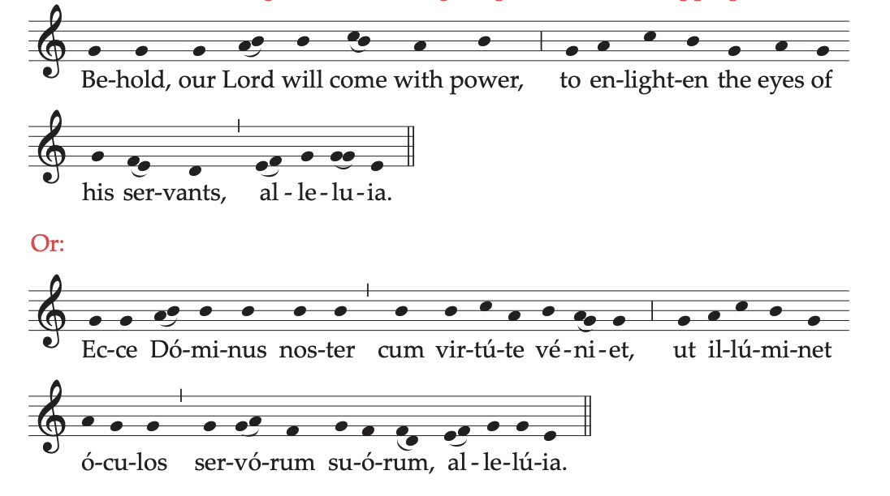
4. When the chant is concluded, the Priest, facing the people, says: In the name of the Father, and of the Son, and of the Holy Spirit. Then the Priest greets the people in the usual way, and next he gives an introductory address, encouraging the faithful to celebrate the rite of this feast day actively and consciously. He may use these or similar words:
Dear brethren (brothers and sisters),
forty days have passed since we celebrated the joyful feast
of the Nativity of the Lord.
Today is the blessed day
when Jesus was presented in the Temple by Mary and Joseph.
Outwardly he was fulfilling the Law,
but in reality he was coming to meet his believing people.
Prompted by the Holy Spirit,
Simeon and Anna came to the Temple.
Enlightened by the same Spirit,
they recognized the Lord
and confessed him with exultation.
So let us also, gathered together by the Holy Spirit,
proceed to the house of God to encounter Christ.
There we shall find him
and recognize him in the breaking of the bread,
until he comes again, revealed in glory.
5. After the address the Priest blesses the candles, saying, with hands extended:
Let us pray.
O God, source and origin of all light,
who on this day showed to the just man Simeon
the Light for revelation to the Gentiles,
we humbly ask that,
in answer to your people’s prayers,
you may be pleased to sanctify with your blessing ✠ these candles,
which we are eager to carry in praise of your name,
so that, treading the path of virtue,
we may reach that light which never fails.
Through Christ our Lord.
R. Amen.
Or:
O God, true light, who create light eternal,
spreading it far and wide,
pour, we pray, into the hearts of the faithful
the brilliance of perpetual light,
so that all who are brightened in your holy temple
by the splendor of these candles
may happily reach the light of your glory.
Through Christ our Lord.
R. Amen.
He sprinkles the candles with holy water without saying anything, and puts incense into the thurible for the procession.
6. Then the Priest receives from the Deacon or a minister the lighted candle prepared for him and the procession begins, with the Deacon announcing (or, if there is no Deacon, the Priest himself):
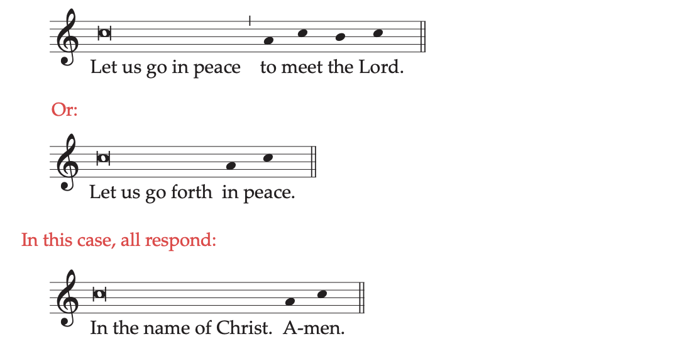
7. All carry lighted candles. As the procession moves forward, one or other of the antiphons that follow is sung, namely the antiphon A light for revelation with the canticle (Lk 2: 29-32), or the antiphon Sion, adorn your bridal chamber or another appropriate chant.
I
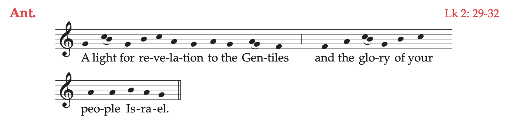
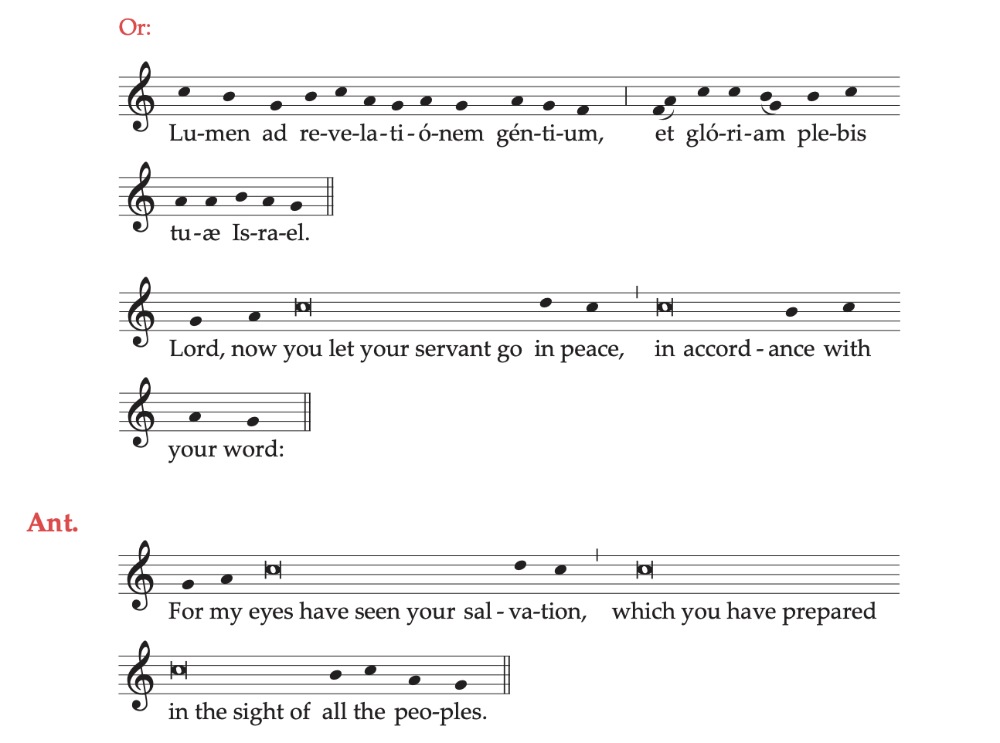
Text without music:
Ant.
Ant. A light for revelation to the Gentiles
and the glory of your people Israel.
Lord, now you let your servant go in peace,
in accordance with your word.
Ant. A light for revelation to the Gentiles...
For my eyes of seen your salvation.
Ant. A light for revelation to the Gentiles...
Which you have prepared in the sight of all peoples.
Ant. A light for revelation to the Gentiles...
II
Ant. Sion, adorn your bridal chamber and welcome Christ the King; take Mary in your arms, who is the gate of heaven, for she herself is carrying the King of glory and new light. A Virgin she remains, though bringing in her hands the Son before the morning star begotten, whom Simeon, taking in his arms announced to the peoples as Lord of life and death and Savior of the world.
8. As the procession enters the church, the Entrance Antiphon of the Mass is sung. When the Priest has arrived at the altar, he venerates it and, if appropriate, incenses it. Then he goes to the chair, where he takes off the cope, if he used it in the procession, and puts on a chasuble. After the singing of the hymn Gloria in excelsis (Glory to God in the highest), he says the Collect as usual. The Mass continues in the usual manner.
Second Form: The Solemn Entrance
9. Whenever a procession cannot take place, the faithful gather in church, holding candles in their hands. The Priest, wearing white sacred vestments as for Mass, together with the ministers and a representative group of the faithful, goes to a suitable place, either in front of the church door or inside the church itself, where at least a large part of the faithful can conveniently participate in the rite.
10. When the Priest reaches the place appointed for the blessing of the candles, candles are lit while the antiphon Behold, our Lord (no. 3) or another appropriate chant is sung.
11. Then, after the greeting and address, the Priest blesses the candles, as above nos. 4-5; and then the procession to the altar takes place, with singing (nos. 6-7). For Mass, what is indicated in no. 8 above is observed.
At the Mass
Entrance AntiphonCf. Ps 48 (47): 10-11
Your merciful love, O God,
we have received in the midst of your temple.
Your praise, O God, like your name,
reaches the ends of the earth;
your right hand is filled with saving justice.
The Gloria in excelsis (Glory to God in the highest) is said.
Collect
Almighty ever-living God,
we humbly implore your majesty
that, just as your Only Begotten Son
was presented on this day in the Temple
in the substance of our flesh,
so, by your grace,
we may be presented to you with minds made pure.
Through our Lord Jesus Christ, your Son,
who lives and reigns with you in the unity of the Holy Spirit,
God, for ever and ever.
When this Feast falls on a Sunday, the Creed is said.
Prayer over the Offerings
May the offering made with exultation by your Church
be pleasing to you, O Lord, we pray,
for you willed that your Only Begotten Son
be offered to you for the life of the world
as the Lamb without blemish.
Who lives and reigns for ever and ever.
Preface: The Mystery of the Presentation of the Lord.
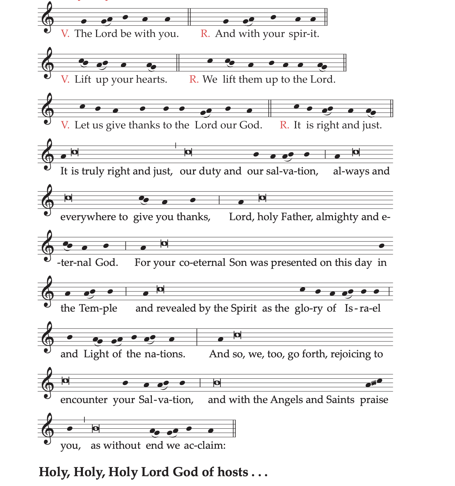
Text without music:
V. The Lord be with you. R. And with your spirit.
V. Lift up your hearts. R. We lift them up to the Lord.
V. Let us give thanks to the Lord our God. R. It is right and just.
It is truly right and just, our duty and our salvation,
always and everywhere to give you thanks,
Lord, holy Father, almighty and eternal God.
For your co-eternal Son was presented on this day in the Temple
and revealed by the Spirit
as the glory of Israel and Light of the nations.
And so, we, too, go forth, rejoicing to encounter your Salvation,
and with the Angels and Saints
praise you, as without end we acclaim:
Holy, Holy, Holy Lord God of hosts...
Communion AntiphonLk 2: 30-31
My eyes have seen your salvation,
which you prepared in the sight of all the peoples.
Prayer after Communion
By these holy gifts which we have received, O Lord,
bring your grace to perfection within us,
and, as you fulfilled Simeon’s expectation
that he would not see death
until he had been privileged to welcome the Christ,
so may we, going forth to meet the Lord,
obtain the gift of eternal life.
Through Christ our Lord.
Hear, O Lord, the supplications your people make
under the patronage of the Martyr Saint Blaise,
and grant that they may rejoice in peace in this present life,
and find help for life eternal.
Through our Lord Jesus Christ, your Son,
who lives and reigns with you in the unity of the Holy Spirit,
God, for ever and ever.
O God, who willed to send the Bishop Saint Ansgar
to enlighten many peoples,
grant us, through his intercession,
that we may always walk in the light of your truth.
Through our Lord Jesus Christ, your Son,
who lives and reigns with you in the unity of the Holy Spirit,
God, for ever and ever.
February 5 Saint Agatha, Virgin and Martyr Memorial
May the Virgin Martyr Saint Agatha
implore your compassion for us, O Lord, we pray,
for she found favor with you
by the courage of her martyrdom
and the merit of her chastity.
Through our Lord Jesus Christ, your Son,
who lives and reigns with you in the unity of the Holy Spirit,
God, for ever and ever.
February 6 Saint Paul Miki and Companions, Martyrs Memorial
O God, strength of all the Saints,
who through the Cross were pleased to call
the Martyrs Saint Paul Miki and companions to life,
grant, we pray, that by their intercession
we may hold with courage even until death
to the faith that we profess.
Through our Lord Jesus Christ, your Son,
who lives and reigns with you in the unity of the Holy Spirit,
God, for ever and ever.
O God, Father of mercies,
who sent Saint Jerome Emiliani as a helper and father to orphans,
grant, through his intercession,
that we may preserve faithfully the spirit of adoption,
by which we are called, and truly are, your children.
Through our Lord Jesus Christ, your Son,
who lives and reigns with you in the unity of the Holy Spirit,
God, for ever and ever.
O God, who led Saint Josephine Bakhita from abject slavery
to the dignity of being your daughter and a bride of Christ,
grant, we pray, that by her example
we may show constant love for the Lord Jesus crucified,
remaining steadfast in charity
and prompt to show compassion.
Through our Lord Jesus Christ, your Son,
who lives and reigns with you in the unity of the Holy Spirit,
God, for ever and ever.
As we celebrate anew the Memorial of the Virgin Saint Scholastica,
we pray, O Lord,
that, following her example,
we may serve you with pure love
and happily receive what comes from loving you.
Through our Lord Jesus Christ, your Son,
who lives and reigns with you in the unity of the Holy Spirit,
God, for ever and ever.
Grant us, O merciful God, protection in our weakness,
that we, who keep the Memorial of the Immaculate Mother of God,
may, with the help of her intercession,
rise up from our iniquities.
Through our Lord Jesus Christ, your Son,
who lives and reigns with you in the unity of the Holy Spirit,
God, for ever and ever.
February 14 Saints Cyril, Monk, and Methodius, Bishop Memorial
Entrance Antiphon
These are holy men who became friends of God,
glorious heralds of divine truth.
Collect
O God, who enlightened the Slavic peoples
through the brothers Saints Cyril and Methodius,
grant that our hearts may grasp the words of your teaching,
and perfect us as a people of one accord
in true faith and right confession.
Through our Lord Jesus Christ, your Son,
who lives and reigns with you in the unity of the Holy Spirit,
God, for ever and ever.
Prayer over the Offerings
Look, O Lord, upon the offerings
which we bring before your majesty
in commemoration of Saints Cyril and Methodius,
and grant that these gifts may become the sign of a new humanity,
reconciled to you in loving charity.
Through Christ our Lord.
Communion AntiphonCf. Mk 16: 20
The disciples went forth and preached the Gospel,
while the Lord worked with them,
confirming the word through accompanying signs.
Prayer after Communion
O God, Father of all nations,
who make us sharers in the one Bread and the one Spirit
and heirs of the eternal banquet,
grant in your kindness
on this feast day of Saints Cyril and Methodius,
that the multitude of your children,
persevering in the same faith,
may be united in building up
the Kingdom of justice and peace.
Through Christ our Lord.
February 17 The Seven Holy Founders of the Servite Order
Impart to us, O Lord, in kindness
the filial devotion with which the holy brothers
venerated so devoutly the Mother of God
and led your people to yourself.
Through our Lord Jesus Christ, your Son,
who lives and reigns with you in the unity of the Holy Spirit,
God, for ever and ever.
February 21 Saint Peter Damian, Bishop and Doctor of the Church
Grant, we pray, almighty God,
that we may so follow the teaching and example
of the Bishop Saint Peter Damian,
that, putting nothing before Christ
and always ardent in the service of your Church,
we may be led to the joys of eternal light.
Through our Lord Jesus Christ, your Son,
who lives and reigns with you in the unity of the Holy Spirit,
God, for ever and ever.
February 22 THE CHAIR OF SAINT PETER THE APOSTLE Feast
Entrance AntiphonLk 22: 32
The Lord says to Simon Peter:
I have prayed for you that your faith may not fail,
and, once you have turned back, strengthen your brothers.
The Gloria in excelsis (Glory to God in the highest) is said.
Collect
Grant, we pray, almighty God,
that no tempests may disturb us,
for you have set us fast
on the rock of the Apostle Peter’s confession of faith.
Through our Lord Jesus Christ, your Son,
who lives and reigns with you in the unity of the Holy Spirit,
God, for ever and ever.
Prayer over the Offerings
Accept with favor, O Lord, we pray,
the prayers and offerings of your Church,
that, with Saint Peter as her shepherd,
she may come to an eternal inheritance,
for it is through his teaching
that she holds the faith in its integrity.
Through Christ our Lord.
Peter said to Jesus: You are the Christ, the Son of the living God.
And Jesus replied: You are Peter,
and upon this rock I will build my Church.
Prayer after Communion
O God, who at our celebration
of the feast day of the blessed Apostle Peter
have nourished us by communion in the Body and Blood of Christ,
grant, we pray, that this redeeming exchange
may be for us a Sacrament of unity and peace.
Through Christ our Lord.
God of all creation,
who were pleased to give the Bishop Saint Polycarp
a place in the company of the Martyrs,
grant, through his intercession,
that, sharing with him in the chalice of Christ,
we may rise through the Holy Spirit to eternal life.
Through our Lord Jesus Christ, your Son,
who lives and reigns with you in the unity of the Holy Spirit,
God, for ever and ever.
Added to General Roman Calendar on January 25, 2021 (source link)
February 27 Saint Gregory of Narek, Abbot and Doctor of the Church
Almighty ever-living God,
who were pleased to imbue with mystical doctrine Saint Gregory of Narek,
the teacher and glory of the Armenian people,
grant us, by his teaching,
to learn the art of speaking with you
and constantly to fortify our life
with the Sacraments of the Church.
Through our Lord Jesus Christ, your Son,
who lives and reigns with you in the unity of the Holy Spirit,
God, for ever and ever.
God of love,
you called Saint Katharine Drexel
to teach the message of the Gospel
and to bring the life of the Eucharist
to the Native American and African American peoples;
by her prayers and example,
enable us to work for justice
among the poor and the oppressed,
and keep us undivided in love
in the eucharistic community of your Church.
Through our Lord Jesus Christ, your Son,
who lives and reigns with you in the unity of the Holy Spirit,
God, for ever and ever.
Almighty God, to serve you is to reign;
grant that, with the help of Saint Casimir’s intercession,
we may constantly serve you in holiness and justice.
Through our Lord Jesus Christ, your Son,
who lives and reigns with you in the unity of the Holy Spirit,
God, for ever and ever.
March 7 Saints Perpetua and Felicity, Martyrs Memorial
Entrance Antiphon
The souls of the Saints are rejoicing in heaven,
the Saints who followed the footsteps of Christ,
and since for love of him they shed their blood,
they now exult with Christ for ever.
Collect
O God, at the urging of whose love
the Martyrs Saints Perpetua and Felicity
defied their persecutors and overcame the torment of death,
grant, we ask, by their prayers, that we may ever grow in your love.
Through our Lord Jesus Christ, your Son,
who lives and reigns with you in the unity of the Holy Spirit,
God, for ever and ever.
Prayer over the Offerings
As we joyfully offer, O Lord, this day’s sacrifice,
recalling the heaven-sent victory of Saints Perpetua and Felicity,
we proclaim by it your mighty deeds
and rejoice at having gained their glorious intercession.
Through Christ our Lord.
Communion Antiphon2 Cor 4: 11
For the sake of Jesus we are given up to death,
that the life of Jesus may be manifested in our mortal flesh.
Prayer after Communion
As we draw everlasting joys, O Lord,
from our participation in this Sacrament
and from the Memorial of Saints Perpetua and Felicity,
we humbly implore,
that by your gift we may truly understand
what you grant us to enact in diligent service.
Through Christ our Lord.
O God, who filled Saint John of God
with a spirit of compassion,
grant, we pray,
that, giving ourselves to works of charity,
we may merit to be found among the elect in your Kingdom.
Through our Lord Jesus Christ, your Son,
who lives and reigns with you in the unity of the Holy Spirit,
God, for ever and ever.
O God, who have given us in Saint Frances of Rome
a singular model of both married and monastic life,
grant us perseverance in your service,
that in every circumstance of life we may see and follow you.
Through our Lord Jesus Christ, your Son,
who lives and reigns with you in the unity of the Holy Spirit,
God, for ever and ever.
O God, who chose the Bishop Saint Patrick
to preach your glory to the peoples of Ireland,
grant, through his merits and intercession,
that those who glory in the name of Christian
may never cease to proclaim your wondrous deeds to all.
Through our Lord Jesus Christ, your Son,
who lives and reigns with you in the unity of the Holy Spirit,
God, for ever and ever.
March 18 Saint Cyril of Jerusalem, Bishop and Doctor of the Church
O God, who through the Bishop Saint Cyril of Jerusalem
led your Church in a wonderful way
to a deeper sense of the mysteries of salvation,
grant us, through his intercession,
that we may so acknowledge your Son
as to have life ever more abundantly.
Through our Lord Jesus Christ, your Son,
who lives and reigns with you in the unity of the Holy Spirit,
God, for ever and ever.
March 19 SAINT JOSEPH, SPOUSE OF THE BLESSED VIRGIN MARY Solemnity
Entrance AntiphonCf. Lk 12: 42
Behold, a faithful and prudent steward,
whom the Lord set over his household.
The Gloria in excelsis (Glory to God in the highest) is said.
Collect
Grant, we pray, almighty God,
that by Saint Joseph’s intercession
your Church may constantly watch over
the unfolding of the mysteries of human salvation,
whose beginnings you entrusted to his faithful care.
Through our Lord Jesus Christ, your Son,
who lives and reigns with you in the unity of the Holy Spirit,
God, for ever and ever.
The Creed is said.
Prayer over the Offerings
We pray, O Lord,
that, just as Saint Joseph served with loving care
your Only Begotten Son, born of the Virgin Mary,
so we may be worthy to minister
with a pure heart at your altar.
Through Christ our Lord.
Preface: The mission of Saint Joseph.
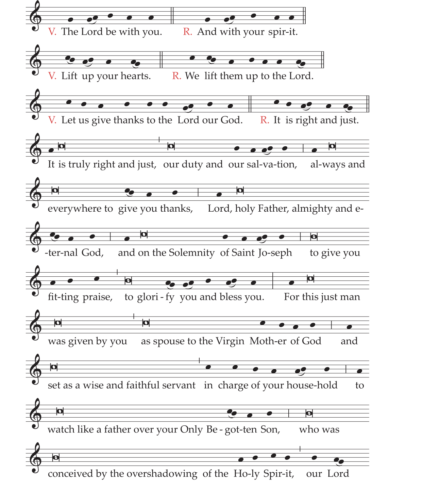
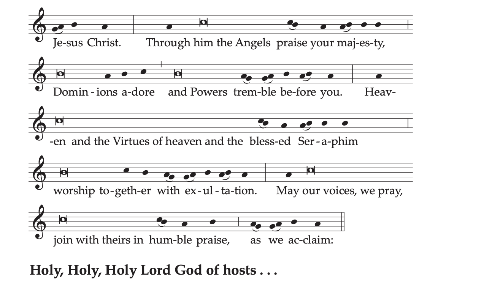
Text without music:
V. The Lord be with you. R. And with your spirit.
V. Lift up your hearts. R. We lift them up to the Lord.
V. Let us give thanks to the Lord our God. R. It is right and just.
It is truly right and just, our duty and our salvation,
always and everywhere to give you thanks,
Lord, holy Father, almighty and eternal God,
and on the Solemnity of Saint Joseph
to give you fitting praise,
to glorify you and bless you.
For this just man was given by you
as spouse to the Virgin Mother of God
and set as a wise and faithful servant
in charge of your household
to watch like a father over your Only Begotten Son,
who was conceived by the overshadowing of the Holy Spirit,
our Lord Jesus Christ.
Through him the Angels praise your majesty,
Dominions adore and Powers tremble before you.
Heaven and the Virtues of heaven and the blessed Seraphim
worship together with exultation.
May our voices, we pray, join with theirs
in humble praise, as we acclaim:
Holy, Holy, Holy Lord God of hosts...
Communion AntiphonMt 25: 21
Well done, good and faithful servant.
Come, share your master’s joy.
Prayer after Communion
Defend with unfailing protection,
O Lord, we pray,
the family you have nourished
with food from this altar,
as they rejoice at the Solemnity of Saint Joseph,
and graciously keep safe your gifts among them.
Through Christ our Lord.
O God, who gave increase to your Church
through the apostolic labors and zeal for truth
of the Bishop Saint Turibius,
grant that the people consecrated to you
may always receive new growth in faith and holiness.
Through our Lord Jesus Christ, your Son,
who lives and reigns with you in the unity of the Holy Spirit,
God, for ever and ever.
March 25 THE ANNUNCIATION OF THE LORD Solemnity
Whenever this Solemnity occurs during Holy Week, it is transferred to the Monday after the Second Sunday of Easter.
Entrance AntiphonHeb 10: 5, 7
The Lord said, as he entered the world:
Behold, I come to do your will, O God.
The Gloria in excelsis (Glory to God in the highest) is said.
Collect
O God, who willed that your Word
should take on the reality of human flesh
in the womb of the Virgin Mary,
grant, we pray,
that we, who confess our Redeemer to be God and man,
may merit to become partakers even in his divine nature.
Who lives and reigns with you in the unity of the Holy Spirit,
God, for ever and ever.
The Creed is said. At the words and was incarnate all genuflect.
Prayer over the Offerings
Be pleased, almighty God,
to accept your Church’s offering,
so that she, who is aware that her beginnings
lie in the Incarnation of your Only Begotten Son,
may rejoice to celebrate his mysteries on this Solemnity.
Who lives and reigns for ever and ever.
Preface: The mystery of the Incarnation.
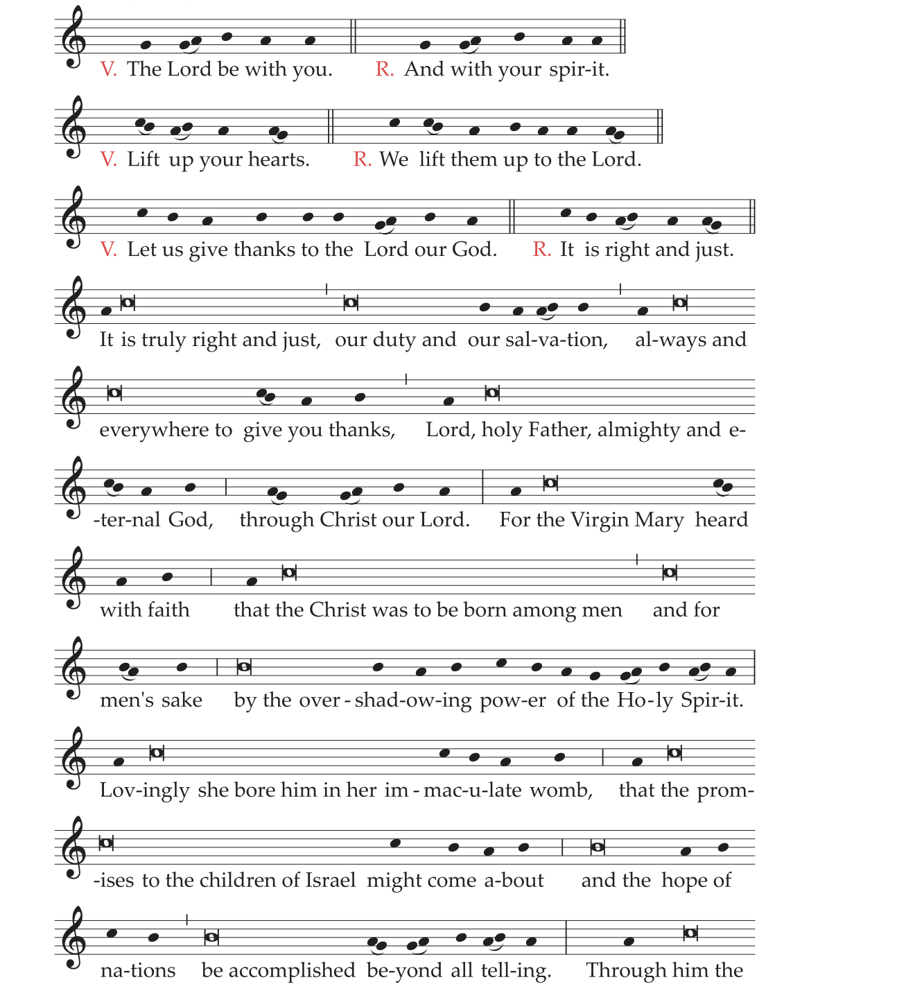
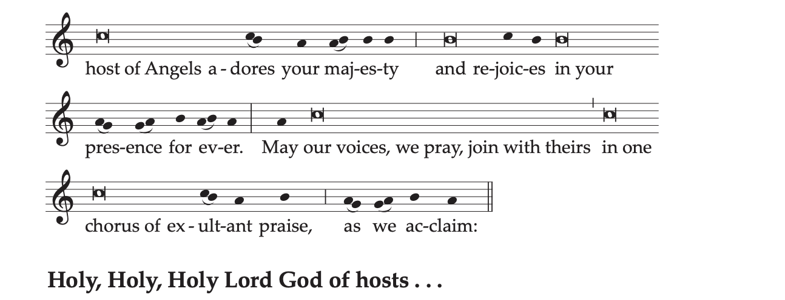
Text without music:
V. The Lord be with you. R. And with your spirit.
V. Lift up your hearts. R. We lift them up to the Lord.
V. Let us give thanks to the Lord our God. R. It is right and just.
It is truly right and just, our duty and our salvation,
always and everywhere to give you thanks,
Lord, holy Father, almighty and eternal God,
through Christ our Lord.
For the Virgin Mary heard with faith
that the Christ was to be born among men and for men’s sake
by the overshadowing power of the Holy Spirit.
Lovingly she bore him in her immaculate womb,
that the promises to the children of Israel might come about
and the hope of nations be accomplished beyond all telling.
Through him the host of Angels adores your majesty
and rejoices in your presence for ever.
May our voices, we pray, join with theirs
in one chorus of exultant praise, as we acclaim:
Holy, Holy, Holy Lord God of hosts...
Communion AntiphonIs 7: 14
Behold, a Virgin shall conceive and bear a son;
and his name will be called Emmanuel.
Prayer after Communion
Confirm in our minds the mysteries of the true faith,
we pray, O Lord,
so that, confessing that he who was conceived of the Virgin Mary
is true God and true man,
we may, through the saving power of his Resurrection,
merit to attain eternal joy.
Through Christ our Lord.
O God, exaltation of the lowly,
who raised Saint Francis of Paola to the glory of your Saints,
grant, we pray, that by his merits and example
we may happily attain the rewards promised to the humble.
Through our Lord Jesus Christ, your Son,
who lives and reigns with you in the unity of the Holy Spirit,
God, for ever and ever.
April 4 Saint Isidore, Bishop and Doctor of the ChurchLEVEL
Graciously hear the prayers, O Lord,
which we make in commemoration of Saint Isidore,
that your Church may be aided by his intercession,
just as she has been instructed by his heavenly teaching.
Through our Lord Jesus Christ, your Son,
who lives and reigns with you in the unity of the Holy Spirit,
God, for ever and ever.
O God, who raised up the Priest Saint Vincent Ferrer
to minister by the preaching of the Gospel,
grant, we pray,
that, when the Judge comes,
whom Saint Vincent proclaimed on earth,
we may be among those blessed
to behold him reigning in heaven.
Who lives and reigns with you in the unity of the Holy Spirit,
God, for ever and ever.
April 7 Saint John Baptist de la Salle, Priest Memorial
O God, who chose Saint John Baptist de la Salle
to educate young Christians,
raise up, we pray, teachers in your Church
ready to devote themselves wholeheartedly
to the human and Christian formation of the young.
Through our Lord Jesus Christ, your Son,
who lives and reigns with you in the unity of the Holy Spirit,
God, for ever and ever.
April 11 Saint Stanislaus, Bishop and Martyr Memorial
O God, for whose honor the Bishop Saint Stanislaus
fell beneath the swords of his persecutors,
grant, we pray,
that we may persevere strong in faith even until death.
Through our Lord Jesus Christ, your Son,
who lives and reigns with you in the unity of the Holy Spirit,
God, for ever and ever.
Grant, almighty God,
that we may withstand the trials of this world
with invincible firmness of purpose,
just as you did not allow your Martyr Pope Saint Martin the First
to be daunted by threats or broken by suffering.
Through our Lord Jesus Christ, your Son,
who lives and reigns with you in the unity of the Holy Spirit,
God, for ever and ever.
April 21 Saint Anselm, Bishop and Doctor of the Church
O God, who led the Bishop Saint Anselm
to seek out and teach the depths of your wisdom,
grant, we pray,
that our faith in you may so aid our understanding,
that what we believe by your command
may give delight to our hearts.
Through our Lord Jesus Christ, your Son,
who lives and reigns with you in the unity of the Holy Spirit,
God, for ever and ever.
Extolling your might, O Lord,
we humbly implore you,
that, as Saint George imitated the Passion of the Lord,
so he may lend us ready help in our weakness.
Through our Lord Jesus Christ, your Son,
who lives and reigns with you in the unity of the Holy Spirit,
God, for ever and ever.
O God, who bestowed the crown of martyrdom
on the Bishop Saint Adalbert,
as he burned with zeal for souls,
grant, we pray, by his prayers,
that the obedience of the flock may never fail the shepherds,
nor the care of the shepherds be ever lacking to the flock.
Through our Lord Jesus Christ, your Son,
who lives and reigns with you in the unity of the Holy Spirit,
God, for ever and ever.
April 24 Saint Fidelis of Sigmaringen, Priest and Martyr
O God, who were pleased to award
the palm of martyrdom to Saint Fidelis
as, burning with love for you, he propagated the faith,
grant, we pray, through his intercession,
that, grounded in charity,
we may merit to know with him
the power of the Resurrection of Christ.
Who lives and reigns with you in the unity of the Holy Spirit,
God, for ever and ever.
April 25 SAINT MARK, EVANGELIST Feast
Entrance AntiphonMk 16: 15
Go into all the world,
and proclaim the Gospel to every creature, alleluia.
The Gloria in excelsis (Glory to God in the highest) is said.
Collect
O God, who raised up Saint Mark, your Evangelist,
and endowed him with the grace to preach the Gospel,
grant, we pray,
that we may so profit from his teaching
as to follow faithfully in the footsteps of Christ.
Who lives and reigns with you in the unity of the Holy Spirit,
God, for ever and ever.
Prayer over the Offerings
As we venerate the glory of Saint Mark,
we offer you, Lord, the sacrifice of praise
and humbly beseech you,
that your Church may always persevere
in the preaching of the Gospel.
Through Christ our Lord.
Behold, I am with you always,
even to the end of the age, says the Lord, alleluia.
Prayer after Communion
Grant, we pray, almighty God,
that what we have received from your holy altar
may sanctify us and make us strong
in the faith of the Gospel which Saint Mark proclaimed.
Through Christ our Lord.
O God, who for the spreading of your Church
crowned Saint Peter Chanel with martyrdom,
grant that, in these days of paschal joy,
we may so celebrate the mysteries of Christ’s Death and Resurrection
as to bear worthy witness to newness of life.
Through our Lord Jesus Christ, your Son,
who lives and reigns with you in the unity of the Holy Spirit,
God, for ever and ever.
O God, who willed to direct the steps of the Priest Saint Louis
along the way of salvation and of the love of Christ,
in the company of the Blessed Virgin,
grant us, by his example,
that, meditating on the mysteries of your love,
we may strive tirelessly for the building up of your Church.
Through our Lord Jesus Christ, your Son,
who lives and reigns with you in the unity of the Holy Spirit,
God, for ever and ever.
Or:
Almighty and eternal God, who made the Priest Saint Louis
an outstanding witness and teacher
of total devotion to Christ your Son
through the hands of his Blessed Mother,
grant us that, following the same spiritual path,
we may constantly spread your Kingdom.
Through our Lord Jesus Christ, your Son,
who lives and reigns with you in the unity of the Holy Spirit,
God, for ever and ever.
April 29 Saint Catherine of Siena, Virgin and Doctor of the Church Memorial
Entrance Antiphon
Here is a wise virgin, from among the number of the prudent,
who went forth with lighted lamp to meet Christ, alleluia.
Collect
O God, who set Saint Catherine of Siena on fire with divine love
in her contemplation of the Lord’s Passion
and her service of your Church,
grant, through her intercession,
that your people,
participating in the mystery of Christ,
may ever exult in the revelation of his glory.
Who lives and reigns with you in the unity of the Holy Spirit,
God, for ever and ever.
Prayer over the Offerings
Accept, O Lord, the saving sacrifice we offer
in commemoration of Saint Catherine,
so that, instructed by her teaching,
we may give ever more fervent thanks
to you, the one true God.
Through Christ our Lord.
Communion AntiphonCf. 1 Jn 1: 7
If we walk in the light, as God is in the light,
then we have fellowship with one another,
and the blood of his Son Jesus Christ
cleanses us from all sin, alleluia.
Prayer after Communion
May the heavenly table
at which we have been fed, O Lord,
confer eternal life upon us,
as even in this world
it nourished the life of Saint Catherine.
Through Christ our Lord.
O God, who in your providence
raised up Pope Saint Pius the Fifth in your Church
that the faith might be safeguarded
and more fitting worship be offered to you,
grant, through his intercession,
that we may participate in your mysteries
with lively faith and fruitful charity.
Through our Lord Jesus Christ, your Son,
who lives and reigns with you in the unity of the Holy Spirit,
God, for ever and ever.
Blessed are all who fear the Lord and walk in his ways!
By the labor of your hands you shall eat;
blessed are you, and blessed will you be, alleluia.
Collect
O God, Creator of all things,
who laid down for the human race the law of work,
graciously grant
that by the example of Saint Joseph and under his patronage
we may complete the works you set us to do
and attain the rewards you promise.
Through our Lord Jesus Christ, your Son,
who lives and reigns with you in the unity of the Holy Spirit,
God, for ever and ever.
Prayer over the Offerings
O God, fount of all mercy,
look upon our offerings,
which we bring before your majesty
in commemoration of Saint Joseph,
and mercifully grant that the gifts we offer
may become the means of protection for those who call upon you.
Through Christ our Lord.
Preface: The mission of Saint Joseph.
Text without music:
V. The Lord be with you. R. And with your spirit.
V. Lift up your hearts. R. We lift them up to the Lord.
V. Let us give thanks to the Lord our God. R. It is right and just.
It is truly right and just, our duty and our salvation,
always and everywhere to give you thanks,
Lord, holy Father, almighty and eternal God,
and on the commemoration of Saint Joseph
to give you fitting praise,
to glorify you and bless you.
For this just man was given by you
as spouse to the Virgin Mother of God
and set as a wise and faithful servant
in charge of your household
to watch like a father over your Only Begotten Son,
who was conceived by the overshadowing of the Holy Spirit,
our Lord Jesus Christ.
Through him the Angels praise your majesty,
Dominions adore and Powers tremble before you.
Heaven and the Virtues of heaven and the blessed Seraphim
worship together with exultation.
May our voices, we pray, join with theirs
in humble praise, as we acclaim:
Holy, Holy, Holy Lord God of hosts...
Communion AntiphonCf. Col 3: 17
Whatever you do in word or deed,
do everything in the name of the Lord, giving thanks to God through him, alleluia.
Prayer after Communion
Having fed upon heavenly delights, we humbly ask you, O Lord,
that, by Saint Joseph’s example,
cherishing in our hearts the signs of your love,
we may ever enjoy the fruit of perpetual peace.
Through Christ our Lord.
May 2 Saint Athanasius, Bishop and Doctor of the Church Memorial
Entrance AntiphonCf. Sir 15: 5
In the midst of the Church he opened his mouth,
and the Lord filled him with the spirit of wisdom and understanding
and clothed him in a robe of glory, alleluia.
Collect
Almighty ever-living God,
who raised up the Bishop Saint Athanasius
as an outstanding champion of your Son’s divinity,
mercifully grant,
that, rejoicing in his teaching and his protection,
we may never cease to grow in knowledge and love of you.
Through our Lord Jesus Christ, your Son,
who lives and reigns with you in the unity of the Holy Spirit,
God, for ever and ever.
Prayer over the Offerings
Look, O Lord, upon the offerings we present to you
in commemoration of Saint Athanasius,
and may witnessing to your truth
bring salvation to those
who profess, as he did, an unblemished faith.
Through Christ our Lord.
Communion Antiphon1 Cor 3: 11
No one can lay a foundation other than the one that is there,
namely, Jesus Christ, alleluia.
Prayer after Communion
Grant us, we pray, almighty God,
that the true divinity of your Only Begotten Son,
which we firmly profess with Saint Athanasius,
may, through this Sacrament, ever give us life and protection.
Through Christ our Lord.
May 3 SAINTS PHILIP AND JAMES, APOSTLES Feast
Entrance Antiphon
These are the holy men
whom the Lord chose in his own perfect love;
to them he gave eternal glory, alleluia.
The Gloria in excelsis (Glory to God in the highest) is said.
Collect
O God, who gladden us each year
with the feast day of the Apostles Philip and James,
grant us, through their prayers,
a share in the Passion and Resurrection
of your Only Begotten Son,
so that we may merit to behold you for eternity.
Through our Lord Jesus Christ, your Son,
who lives and reigns with you in the unity of the Holy Spirit,
God, for ever and ever.
Prayer over the Offerings
Receive, O Lord, the offerings we bring
for the feast day of the Apostles Philip and James
and bestow on us religion pure and undefiled.
Through Christ our Lord.
Lord, show us the Father, and that will be enough for us.
Whoever has seen me, Philip, has seen the Father also, alleluia.
Prayer after Communion
Purify our minds, we pray, O Lord,
by these holy gifts we have received,
so that, contemplating you in your Son
together with the Apostles Philip and James,
we may be worthy to possess eternal life.
Through Christ our Lord.
Father of mercy,
who gave us in Saint Damien
a shining witness of love for the poorest and most abandoned,
grant that, by his intercession,
as faithful witnesses of the heart of your Son Jesus,
we too may be servants of the most needy and rejected.
Through our Lord Jesus Christ, your Son,
who lives and reigns with you in the unity of the Holy Spirit,
God, for ever and ever.
Added to General Roman Calendar on January 25, 2021 (source link)
Saint John De Avila, Priest and Doctor of the Church
O God, who gave to your clergy and people Saint John De Avila,
a teacher outstanding for the holiness and zeal of his life,
grant, we pray, that in our own time
the Church may increase in holiness
by the exceptional devotion of your ministers.
Through our Lord Jesus Christ, your Son,
who lives and reigns with you in the unity of the Holy Spirit,
God, for ever and ever.
Grant, we pray, almighty God,
that we, who know the great courage
of the glorious Martyrs Nereus and Achilleus
in confessing you,
may experience their loving intercession for us in your presence.
Through our Lord Jesus Christ, your Son,
who lives and reigns with you in the unity of the Holy Spirit,
God, for ever and ever.
May your Church rejoice, O God,
confident in the intercession of the Martyr Saint Pancras,
and by his glorious prayers
may she persevere in devotion to you
and stand ever firm.
Through our Lord Jesus Christ, your Son,
who lives and reigns with you in the unity of the Holy Spirit,
God, for ever and ever.
O God, who chose the Mother of your Son to be our Mother also,
grant us that, persevering in penance and prayer
for the salvation of the world,
we may further more effectively each day the reign of Christ.
Who lives and reigns with you in the unity of the Holy Spirit,
God, for ever and ever.
May 14 SAINT MATTHIAS, APOSTLE Feast
Entrance AntiphonJn 15: 16
It was not you who chose me, says the Lord,
but I who chose you and appointed you to go and bear fruit,
fruit that will last (E.T. alleluia).
The Gloria in excelsis (Glory to God in the highest) is said.
Collect
O God, who assigned Saint Matthias
a place in the college of Apostles,
grant us, through his intercession,
that, rejoicing at how your love has been allotted to us,
we may merit to be numbered among the elect.
Through our Lord Jesus Christ, your Son,
who lives and reigns with you in the unity of the Holy Spirit,
God, for ever and ever.
Prayer over the Offerings
Receive, O Lord, the offerings of your Church,
reverently presented for the Feast of Saint Matthias,
and through them strengthen us by the power of your grace.
Through Christ our Lord.
This is my commandment: Love one another
as I love you, says the Lord (E.T. alleluia).
Prayer after Communion
Never cease, O Lord, we pray,
to fill your family with divine gifts,
and, through blessed Matthias’ intercession for us,
graciously admit us to a share in the lot of the Saints in light.
Through Christ our Lord.
Lord God, to whom belongs all creation,
and who call us to serve you
by caring for the gifts that surround us,
inspire us by the example of Saint Isidore
to share our food with the hungry
and to work for the salvation of all people.
Through our Lord Jesus Christ, your Son,
who lives and reigns with you in the unity of the Holy Spirit,
God, for ever and ever.
O God, who reward faithful souls
and who have consecrated this day
by the martyrdom of Pope Saint John the First,
graciously hear the prayers of your people
and grant that we, who venerate his merits,
may imitate his constancy in the faith.
Through our Lord Jesus Christ, your Son,
who lives and reigns with you in the unity of the Holy Spirit,
God, for ever and ever.
O God, who gave the Priest Saint Bernardine of Siena
a great love for the holy Name of Jesus,
grant, through his merits and prayers,
that we may ever be set aflame
with the spirit of your love.
Through our Lord Jesus Christ, your Son,
who lives and reigns with you in the unity of the Holy Spirit,
God, for ever and ever.
May 21 Saint Christopher Magallanes, Priest, and Companions, Martyrs
Almighty and eternal God,
who made the Priest Saint Christopher Magallanes and his companions
faithful to Christ the King even to the point of martyrdom,
grant us, through their intercession,
that, persevering in confession of the true faith,
we may always hold fast to the commandments of your love.
Through our Lord Jesus Christ, your Son,
who lives and reigns with you in the unity of the Holy Spirit,
God, for ever and ever.
Bestow on us, we pray, O Lord,
the wisdom and strength of the Cross,
with which you were pleased to endow Saint Rita,
so that, suffering in every tribulation with Christ,
we may participate ever more deeply in his Paschal Mystery.
Who lives and reigns with you in the unity of the Holy Spirit,
God, for ever and ever.
May 25 Saint Bede the Venerable, Priest and Doctor of the Church
O God, who bring light to your Church
through the learning of the Priest Saint Bede,
mercifully grant that your servants
may always be enlightened by his wisdom and helped by his merits.
Through our Lord Jesus Christ, your Son,
who lives and reigns with you in the unity of the Holy Spirit,
God, for ever and ever.
Give to your Church, we pray, O Lord,
that spirit of fortitude and zeal for justice
which you made to shine forth in Pope Saint Gregory the Seventh,
so that, rejecting evil, she may be free
to carry out in charity whatever is right.
Through our Lord Jesus Christ, your Son,
who lives and reigns with you in the unity of the Holy Spirit,
God, for ever and ever.
O God, lover of virginity,
who adorned with heavenly gifts
the Virgin Saint Mary Magdalene de’ Pazzi,
setting her on fire with your love,
grant, we pray, that we, who honor her today,
may imitate her example of purity and love.
Through our Lord Jesus Christ, your Son,
who lives and reigns with you in the unity of the Holy Spirit,
God, for ever and ever.
May 26 Saint Philip Neri, Priest Memorial
Entrance AntiphonRom 5: 5; cf. 8: 11
The love of God has been poured into our hearts
through the Spirit of God dwelling within us (E.T. alleluia).
Collect
O God, who never cease to bestow the glory of holiness
on the faithful servants you raise up for yourself,
graciously grant
that the Holy Spirit may kindle in us that fire
with which he wonderfully filled
the heart of Saint Philip Neri.
Through our Lord Jesus Christ, your Son,
who lives and reigns with you in the unity of the Holy Spirit,
God, for ever and ever.
Prayer over the Offerings
As we offer you the sacrifice of praise, O Lord,
we ask that by the example of Saint Philip
we may always give ourselves cheerfully
for the glory of your name
and the service of our neighbor.
Through Christ our Lord.
Communion AntiphonJn 15: 9
As the Father loves me, so I also love you;
remain in my love, says the Lord(E.T. alleluia).
Prayer after Communion
Having fed upon these heavenly delights,
we pray, O Lord,
that in imitation of Saint Philip
we may always long for that food by which we truly live.
Through Christ our Lord.
O God, who by the preaching
of the Bishop Saint Augustine of Canterbury
led the English peoples to the Gospel,
grant, we pray, that the fruits of his labors
may remain ever abundant in your Church.
Through our Lord Jesus Christ, your Son,
who lives and reigns with you in the unity of the Holy Spirit,
God, for ever and ever.
Added to General Roman Calendar on January 25, 2019 (source link)
O God, who entrusted the governance of your Church
to Pope Saint Paul the Sixth,
a steadfast apostle of the Gospel of your Son,
grant, we pray, that enlightened by his teachings,
we may work together with you
to spread the culture of love throughout the world.
Through our Lord Jesus Christ, your Son,
who lives and reigns with you in the unity of the Holy Spirit,
God, for ever and ever.
May 31 THE VISITATION OF THE BLESSED VIRGIN MARY Feast
Entrance AntiphonCf. Ps 66 (65): 16
Come and hear, all who fear God;
I will tell what the Lord did for my soul (E.T. alleluia).
The Gloria in excelsis (Glory to God in the highest) is said.
Collect
Almighty ever-living God,
who, while the Blessed Virgin Mary was carrying your Son in her womb,
inspired her to visit Elizabeth,
grant us, we pray,
that, faithful to the promptings of the Spirit,
we may magnify your greatness
with the Virgin Mary at all times.
Through our Lord Jesus Christ, your Son,
who lives and reigns with you in the unity of the Holy Spirit,
God, for ever and ever.
Prayer over the Offerings
May our offering of this saving sacrifice
be acceptable to your majesty, O Lord,
as you were pleased to accept the charity
of the most Blessed Mother of your Only Begotten Son.
Who lives and reigns for ever and ever.
All generations will call me blessed,
for he who is mighty has done great things for me,
and holy is his name (E.T. alleluia).
Prayer after Communion
May your Church proclaim your greatness, O God,
for you have done great things for your faithful,
and, as Saint John the Baptist leapt with joy
when he first sensed the hidden presence of Christ,
so may your Church rejoice
to receive in this Sacrament the same ever-living Lord.
Who lives and reigns for ever and ever.
Saturday after the Second Sunday after Pentecost The Immaculate Heart of the Blessed Virgin Mary Memorial
Entrance AntiphonPs 13 (12): 6
My heart will rejoice in your salvation.
I will sing to the Lord, who has been bountiful with me.
Collect
O God, who prepared a fit dwelling place for the Holy Spirit
in the Heart of the Blessed Virgin Mary,
graciously grant that through her intercession
we may be a worthy temple of your glory.
Through our Lord Jesus Christ, your Son,
who lives and reigns with you in the unity of the Holy Spirit,
God, for ever and ever.
Prayer over the Offerings
Look, O Lord, upon the prayers and offerings of your faithful,
presented in commemoration of Blessed Mary, the Mother of God,
that they may be pleasing to you
and may confer on us your help and forgiveness.
Through Christ our Lord.
Mary treasured all these words,
reflecting on them in her heart.
Prayer after Communion
Having been made partakers of eternal redemption,
we pray, O Lord,
that we, who commemorate the Mother of your Son,
may glory in the fullness of your grace
and experience its continued increase for our salvation.
Through Christ our Lord.
The wicked have told me lies, but not so is your law:
I spoke of your decrees before kings,
and was not confounded (E.T. alleluia).
Collect
O God, who through the folly of the Cross
wondrously taught Saint Justin the Martyr
the surpassing knowledge of Jesus Christ,
grant us, through his intercession,
that, having rejected deception and error,
we may become steadfast in the faith.
Through our Lord Jesus Christ, your Son,
who lives and reigns with you in the unity of the Holy Spirit,
God, for ever and ever.
Prayer over the Offerings
Grant us, we pray, O Lord,
that we may celebrate worthily these mysteries,
which Saint Justin strenuously defended.
Through Christ our Lord.
Communion AntiphonCf. 1 Cor 2: 2
I resolved to know nothing while I was with you
except Jesus Christ, and him crucified (E.T. alleluia).
Prayer after Communion
Refreshed by heavenly food,
we humbly implore you, O Lord,
that, attentive to the teaching of Saint Justin the Martyr,
we may abide at all times in thanksgiving
for the gifts we have received.
Through Christ our Lord.
O God, who surround us with protection
through the glorious confession
of the Martyrs Saints Marcellinus and Peter,
grant that we may profit by imitating them
and be upheld by their prayer.
Through our Lord Jesus Christ, your Son,
who lives and reigns with you in the unity of the Holy Spirit,
God, for ever and ever.
June 3 Saint Charles Lwanga and Comopanions, Martyrs Memorial
Entrance AntiphonCf. Wis 3: 6-7, 9
As gold in the furnace, the Lord put his chosen to the test;
as sacrificial offerings, he took them to himself;
and in due time they will be honored,
and grace and peace will be with the elect of God (E.T. alleluia).
Collect
O God, who have made the blood of Martyrs
the seed of Christians,
mercifully grant that the field which is your Church,
watered by the blood
shed by Saints Charles Lwanga and his companions,
may be fertile and always yield you an abundant harvest.
Through our Lord Jesus Christ, your Son,
who lives and reigns with you in the unity of the Holy Spirit,
God, for ever and ever.
Prayer over the Offerings
We offer you sacrifice, O Lord, humbly praying
that, as you granted the blessed Martyrs
grace to die rather than sin,
so you may bring us to minister at your altar
in dedication to you alone.
Through Christ our Lord.
Communion AntiphonPs 116 (115): 15
How precious in the eyes of the Lord
is the death of his holy ones (E.T. alleluia).
Prayer after Communion
We have received this divine Sacrament, O Lord,
as we celebrate the victory of your holy Martyrs;
may what helped them to endure torment, we pray,
make us, in the face of trials,
steadfast in faith and in charity.
Through Christ our Lord.
May the Martyr Saint Boniface be our advocate, O Lord,
that we may firmly hold the faith
he taught with his lips and sealed in his blood
and confidently profess it by our deeds.
Through our Lord Jesus Christ, your Son,
who lives and reigns with you in the unity of the Holy Spirit,
God, for ever and ever.
O God, who made the Bishop Saint Norbert
a servant of your Church
outstanding in his prayer and pastoral zeal,
grant, we ask, that by the help of his intercession,
the flock of the faithful
may always find shepherds after your own heart
and be fed in the pastures of salvation.
Through our Lord Jesus Christ, your Son,
who lives and reigns with you in the unity of the Holy Spirit,
God, for ever and ever.
June 9 Saint Ephrem, Deacon and Doctor of the Church
Pour into our hearts O Lord, we pray, the Holy Spirit,
at whose prompting the Deacon Saint Ephrem
exulted in singing of your mysteries
and from whom he received the strength
to serve you alone.
Through our Lord Jesus Christ, your Son,
who lives and reigns with you in the unity of the Holy Spirit,
God, for ever and ever.
June 11 Saint Barnabas, Apostle Memorial
Entrance AntiphonCf. Acts 11: 24
Blessed is this holy man,
who was worthy to be numbered among the Apostles,
for he was a good man,
filled with the Holy Spirit and with faith (E.T. alleluia).
Collect
O God, who decreed that Saint Barnabas,
a man filled with faith and the Holy Spirit,
should be set apart to convert the nations,
grant that the Gospel of Christ,
which he strenuously preached,
may be faithfully proclaimed by word and by deed.
Through our Lord Jesus Christ, your Son,
who lives and reigns with you in the unity of the Holy Spirit,
God, for ever and ever.
Prayer over the Offerings
Sanctify with your blessing, we pray, O Lord,
the offerings presented here,
so that by your grace they may set us on fire
with the flame of your love,
by which Saint Barnabas
brought the light of the Gospel to the nations.
Through Christ our Lord.
I no longer call you slaves,
because a slave does not know what his master is doing.
But I have called you friends,
because I have told you
everything I have heard from my Father (E.T. alleluia).
Prayer after Communion
As we receive the pledge of eternal life,
we humbly implore you, Lord,
that what we celebrate in sacramental signs
on the Memorial of the blessed Apostle Barnabas
we may one day behold unveiled.
Through Christ our Lord.
June 13 Saint Anthony of Padua, Priest and Doctor of the Church Memorial
Almighty ever-living God,
who gave Saint Anthony of Padua to your people
as an outstanding preacher
and an intercessor in their need,
grant that, with his assistance,
as we follow the teachings of the Christian life,
we may know your help in every trial.
Through our Lord Jesus Christ, your Son,
who lives and reigns with you in the unity of the Holy Spirit,
God, for ever and ever.
O God, who through Saint Romuald renewed
the manner of life of hermits in your Church,
grant that, denying ourselves and following Christ,
we may merit to reach the heavenly realms on high.
Through our Lord Jesus Christ, your Son,
who lives and reigns with you in the unity of the Holy Spirit,
God, for ever and ever.
June 21 Saint Aloysius Gonzaga, Religious Memorial
Entrance AntiphonCf. Ps 24 (23): 4, 3
The clean of hands and pure of heart
shall climb the mountain of the Lord
and stand in his holy place.
Collect
O God, giver of heavenly gifts,
who in Saint Aloysius Gonzaga
joined penitence to a wonderful innocence of life,
grant, through his merits and intercession,
that, though we have failed to follow him in innocence,
we may imitate him in penitence.
Through our Lord Jesus Christ, your Son,
who lives and reigns with you in the unity of the Holy Spirit,
God, for ever and ever.
Prayer over the Offerings
Grant us, O Lord,
that by the example of Saint Aloysius,
we may take our place at the heavenly banquet,
clothed always in our wedding garment,
so that, by participation in this mystery,
we may possess the riches of your grace.
Through Christ our Lord.
Communion AntiphonPs 78 (77): 24-25
God gave them bread from heaven;
man ate the bread of Angels.
Prayer after Communion
Bring us, who have been fed
with the food of Angels, O Lord,
to serve you in purity of life,
and, following the example of Saint Aloysius,
whom we honor today,
may we persevere in constant thanksgiving.
Through Christ our Lord.
O God, who made the Bishop Saint Paulinus of Nola
outstanding for love of poverty and for pastoral care,
graciously grant that, as we celebrate his merits,
we may imitate the example of his charity.
Through our Lord Jesus Christ, your Son,
who lives and reigns with you in the unity of the Holy Spirit,
God, for ever and ever.
Saints John Fisher, Bishop, and Thomas More, Martyrs
O God, who in martyrdom
have brought true faith to its highest expression,
graciously grant
that, strengthened through the intercession
of Saints John Fisher and Thomas More,
we may confirm by the witness of our life
the faith we profess with our lips.
Through our Lord Jesus Christ, your Son,
who lives and reigns with you in the unity of the Holy Spirit,
God, for ever and ever.
June 24 THE NATIVITY OF SAINT JOHN THE BAPTIST Solemnity
At the Vigil Mass
This Mass is used on the evening of June 23, either before or after First Vespers (Evening Prayer I) of the Solemnity.
Entrance AntiphonLk 1: 15, 14
He will be great in the sight of the Lord
and will be filled with the Holy Spirit,
even from his mother’s womb;
and many will rejoice at his birth.
The Gloria in excelsis (Glory to God in the highest) is said.
Collect
Grant, we pray, almighty God,
that your family may walk in the way of salvation
and, attentive to what Saint John the Precursor urged,
may come safely to the One he foretold,
our Lord Jesus Christ.
Who lives and reigns with you in the unity of the Holy Spirit,
God, for ever and ever.
The Creed is said.
Prayer over the Offerings
Look with favor, O Lord,
upon the offerings made by your people
on the Solemnity of Saint John the Baptist,
and grant that what we celebrate in mystery
we may follow with deeds of devoted service.
Through Christ our Lord.
Proper Preface, as in the following Mass.
Communion AntiphonLk 1: 68
Blessed be the Lord, the God of Israel!
He has visited his people and redeemed them.
Prayer after Communion
May the marvelous prayer of Saint John the Baptist
accompany us who have eaten our fill
at this sacrificial feast, O Lord,
and, since Saint John proclaimed your Son
to be the Lamb who would take away our sins,
may he implore now for us your favor.
Through Christ our Lord.
At the Mass during the Day
Entrance AntiphonJn 1: 6-7; Lk 1: 17
A man was sent from God, whose name was John.
He came to testify to the light,
to prepare a people fit for the Lord.
The Gloria in excelsis (Glory to God in the highest) is said.
Collect
O God, who raised up Saint John the Baptist
to make ready a nation fit for Christ the Lord,
give your people, we pray,
the grace of spiritual joys
and direct the hearts of all the faithful
into the way of salvation and peace.
Through our Lord Jesus Christ, your Son,
who lives and reigns with you in the unity of the Holy Spirit,
God, for ever and ever.
The Creed is said.
Prayer over the Offerings
We place these offerings on your altar, O Lord,
to celebrate with fitting honor the nativity of him
who both foretold the coming of the world’s Savior
and pointed him out when he came.
Who lives and reigns for ever and ever.
Preface: The mission of the Precursor.
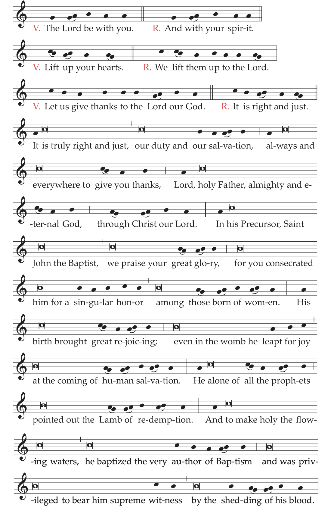
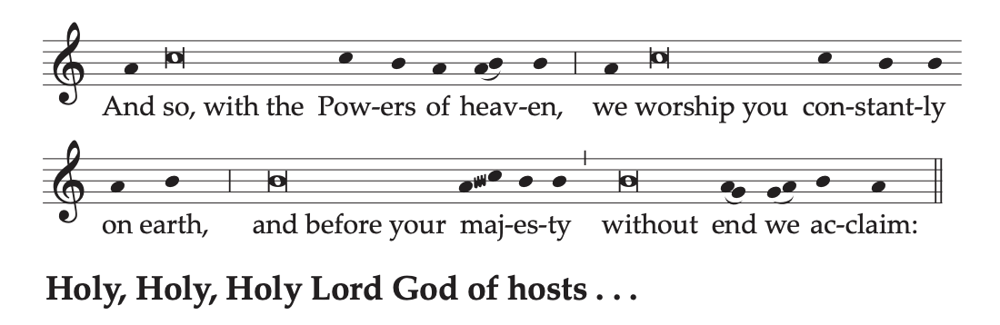
Text without music:
V. The Lord be with you. R. And with your spirit.
V. Lift up your hearts. R. We lift them up to the Lord.
V. Let us give thanks to the Lord our God. R. It is right and just.
It is truly right and just, our duty and our salvation,
always and everywhere to give you thanks,
Lord, holy Father, almighty and eternal God,
through Christ our Lord.
In his Precursor, Saint John the Baptist,
we praise your great glory,
for you consecrated him for a singular honor
among those born of women.
His birth brought great rejoicing;
even in the womb he leapt for joy
at the coming of human salvation.
He alone of all the prophets
pointed out the Lamb of redemption.
And to make holy the flowing waters,
he baptized the very author of Baptism
and was privileged to bear him supreme witness
by the shedding of his blood.
And so, with the Powers of heaven,
we worship you constantly on earth,
and before your majesty
without end we acclaim:
Holy, Holy, Holy Lord God of hosts...
Communion AntiphonCf. Lk 1: 78
Through the tender mercy of our God,
the Dawn from on high will visit us.
Prayer after Communion
Having feasted at the banquet of the heavenly Lamb,
we pray, O Lord,
that, finding joy in the nativity of Saint John the Baptist,
your Church may know as the author of her rebirth
the Christ whose coming John foretold.
Who lives and reigns for ever and ever.
June 27 Saint Cyril of Alexandria, Bishop and Doctor of the Church
O God, who made the Bishop Saint Cyril of Alexandria
an invincible champion of the divine motherhood
of the most Blessed Virgin Mary,
grant, we pray,
that we, who believe she is truly the Mother of God,
may be saved through the Incarnation of Christ your Son.
Who lives and reigns with you in the unity of the Holy Spirit,
God, for ever and ever.
June 28 Saint Irenaeus, Bishop and Martyr Memorial
Entrance AntiphonMal 2: 6
The law of truth was in his mouth;
no dishonesty was found on his lips.
He walked with me in integrity and peace,
and turned many away from evil.
Collect
O God, who called the Bishop Saint Irenaeus
to confirm true doctrine and the peace of the Church,
grant, we pray, through his intercession,
that, being renewed in faith and charity,
we may always be intent on fostering unity and concord.
Through our Lord Jesus Christ, your Son,
who lives and reigns with you in the unity of the Holy Spirit,
God, for ever and ever.
Prayer over the Offerings
May the sacrifice we offer you with joy
on the heavenly birthday of Saint Irenaeus
bring you glory, O Lord,
and instill in us a love of the truth,
so that we may keep the Church’s faith inviolate
and her unity secure.
Through Christ our Lord.
Communion AntiphonJn 15: 4-5
Remain in me, as I remain in you, says the Lord.
Whoever remains in me, and I in him, bears fruit in plenty.
Prayer after Communion
Through these sacred mysteries, we pray, O Lord,
give us in your compassion an increase of that faith
which brought glory to the Bishop Saint Irenaeus
as he maintained it even until death,
and may the same faith bring to us, who truly follow it,
justification in your sight.
Through Christ our Lord.
June 29 SAINTS PETER AND PAUL, APOSTLES Solemnity
At the Vigil Mass
This Mass is used on the evening of June 28, either before or after First Vespers (Evening Prayer I) of the Solemnity.
Entrance Antiphon
Peter the Apostle, and Paul the teacher of the Gentiles,
these have taught us your law, O Lord.
The Gloria in excelsis (Glory to God in the highest) is said.
Collect
Grant, we pray, O Lord our God,
that we may be sustained
by the intercession of the blessed Apostles Peter and Paul,
that, as through them you gave your Church
the foundations of her heavenly office,
so through them you may help her to eternal salvation.
Through our Lord Jesus Christ, your Son,
who lives and reigns with you in the unity of the Holy Spirit,
God, for ever and ever.
The Creed is said.
Prayer over the Offerings
We bring offerings to your altar, O Lord,
as we glory in the solemn feast
of the blessed Apostles Peter and Paul,
so that the more we doubt our own merits,
the more we may rejoice that we are to be saved
by your loving kindness.
Through Christ our Lord.
Simon, Son of John, do you love me more than these?
Lord, you know everything; you know that I love you.
Prayer after Communion
By this heavenly Sacrament, O Lord, we pray,
strengthen your faithful,
whom you have enlightened with the teaching of the Apostles.
Through Christ our Lord.
These are the ones who, living in the flesh,
planted the Church with their blood;
they drank the chalice of the Lord
and became the friends of God.
The Gloria in excelsis (Glory to God in the highest) is said.
Collect
O God, who on the Solemnity of the Apostles Peter and Paul
give us the noble and holy joy of this day,
grant, we pray, that your Church
may in all things follow the teaching
of those through whom she received
the beginnings of right religion.
Through our Lord Jesus Christ, your Son,
who lives and reigns with you in the unity of the Holy Spirit,
God, for ever and ever.
The Creed is said.
Prayer over the Offerings
May the prayer of the Apostles, O Lord,
accompany the sacrificial gift
that we present to your name for consecration,
and may their intercession make us devoted to you
in celebration of the sacrifice.
Through Christ our Lord.
Preface: The twofold mission of Peter and Paul in the Church.
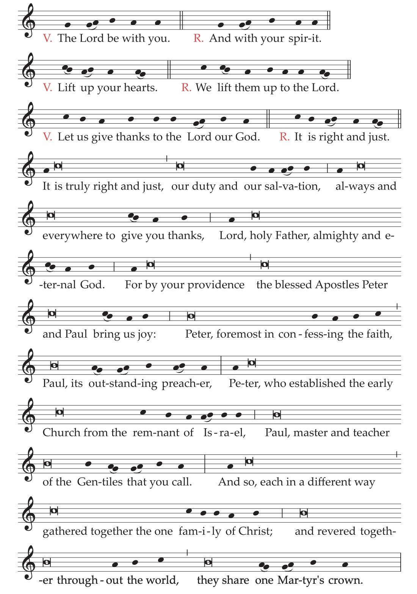
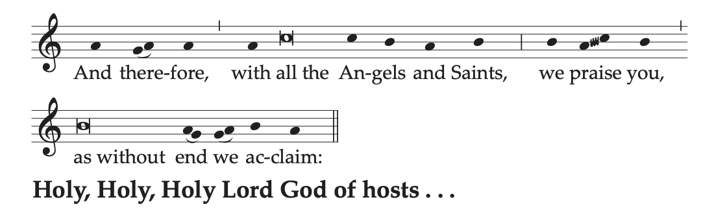
Text without music:
V. The Lord be with you. R. And with your spirit.
V. Lift up your hearts. R. We lift them up to the Lord.
V. Let us give thanks to the Lord our God. R. It is right and just.
It is truly right and just, our duty and our salvation,
always and everywhere to give you thanks,
Lord, holy Father, almighty and eternal God.
For by your providence
the blessed Apostles Peter and Paul bring us joy:
Peter, foremost in confessing the faith,
Paul, its outstanding preacher,
Peter, who established the early Church from the remnant of Israel,
Paul, master and teacher of the Gentiles that you call.
And so, each in a different way
gathered together the one family of Christ;
and revered together throughout the world,
they share one Martyr’s crown.
And therefore, with all the Angels and Saints,
we praise you, as without end we acclaim:
Holy, Holy, Holy Lord God of hosts...
Communion AntiphonCf. Mt 16: 16, 18
Peter said to Jesus: You are the Christ, the Son of the living God.
And Jesus replied: You are Peter,
and upon this rock I will build my Church.
Prayer after Communion
Grant us, O Lord,
who have been renewed by this Sacrament,
so to live in the Church,
that, persevering in the breaking of the Bread
and in the teaching of the Apostles,
we may be one heart and one soul,
made steadfast in your love.
Through Christ our Lord.
O God, who consecrated
the abundant first fruits of the Roman Church
by the blood of the Martyrs,
grant, we pray, that with firm courage
we may together draw strength from so great a struggle
and ever rejoice at the triumph of faithful love.
Through our Lord Jesus Christ, your Son,
who lives and reigns with you in the unity of the Holy Spirit,
God, for ever and ever.
O God, who by your ineffable mercy
have been pleased through the labors
of your priest Blessed Junípero Serra
to count many American peoples within your Church,
grant by his intercession
that we may so join our hearts to you in love,
as to carry always and everywhere before all people
the image of your Only Begotten Son.
Who lives and reigns with you in the unity of the Holy Spirit,
God, for ever and ever.
July 3 SAINT THOMAS, APOSTLE Feast
Entrance AntiphonCf. Ps 118 (117): 28, 21
You are my God, and I confess you;
you are my God, and I exalt you;
I will thank you, for you became my savior.
The Gloria in excelsis (Glory to God in the highest) is said.
Collect
Grant, almighty God,
that we may glory in the Feast of the blessed Apostle Thomas,
so that we may always be sustained by his intercession
and, believing, may have life
in the name of Jesus Christ your Son,
whom Thomas acknowledged as the Lord.
Who lives and reigns with you in the unity of the Holy Spirit,
God, for ever and ever.
Prayer over the Offerings
We render you, O Lord, the service that is your due,
humbly imploring you to keep safe your gifts in us,
as we honor the confession of the Apostle Saint Thomas
and offer you a sacrifice of praise.
Through Christ our Lord.
Bring your hand and feel the place of the nails,
and do not be unbelieving but believing.
Prayer after Communion
O God, as we truly receive in this Sacrament
the Body of your Only Begotten Son,
grant, we pray, that we may recognize him
with the Apostle Thomas by faith
as our Lord and our God
and proclaim him by our deeds and by our life.
Who lives and reigns for ever and ever.
[In the Dioceses of the United States]
July 4 Independence Day
Entrance AntiphonCf. Sir 36: 18, 19
Give peace, O Lord, to those who wait for you;
hear the prayers of your servants
and guide us in the way of justice.
The Gloria in excelsis (Glory to God in the highest) is said.
Collect
God of justice, Father of truth,
who guide creation in wisdom and goodness
to fulfillment in Christ your Son,
open our hearts to the truth of his Gospel,
that your peace may rule in our hearts
and your justice guide our lives.
Through our Lord Jesus Christ, your Son,
who lives and reigns with you in the unity of the Holy Spirit,
God, for ever and ever.
Or:
Father of all nations and ages,
we recall the day when our country
claimed its place among the family of nations;
for what has been achieved we give you thanks,
for the work that still remains we ask your help,
and as you have called us from many peoples to be one nation,
grant that, under your providence,
our country may share your blessings
with all the peoples of the earth.
Through our Lord Jesus Christ, your Son,
who lives and reigns with you in the unity of the Holy Spirit,
God, for ever and ever.
Prayer over the Offerings
Accept, Lord God, these gifts we bring to this altar
and, having taught us through the wisdom of the Gospel,
lead us to true justice and lasting peace.
Through Christ our Lord.
Or:
Father, who have molded into one
our nation, drawn from the peoples of many lands,
grant, that as the grains of wheat become one bread
and the many grapes one cup of wine,
so we may before all others be instruments of your peace.
Through Christ our Lord.
Preface: Independence Day I.
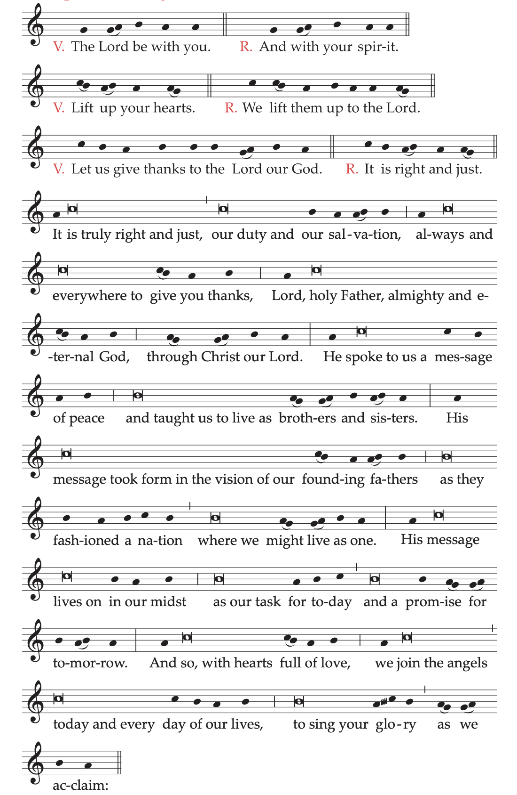
Text without music:
V. The Lord be with you. R. And with your spirit.
V. Lift up your hearts. R. We lift them up to the Lord.
V. Let us give thanks to the Lord our God. R. It is right and just.
It is truly right and just, our duty and our salvation,
always and everywhere to give you thanks,
Lord, holy Father, almighty and eternal God,
through Christ our Lord.
He spoke to us a message of peace
and taught us to live as brothers and sisters.
His message took form in the vision of our founding fathers
as they fashioned a nation
where we might live as one.
His message lives on in our midst
as our task for today
and a promise for tomorrow.
And so, with hearts full of love,
we join the angels today and every day of our lives,
to sing your glory as we acclaim:
Holy, Holy, Holy Lord God of hosts...
Or:
Preface: Independence Day II.
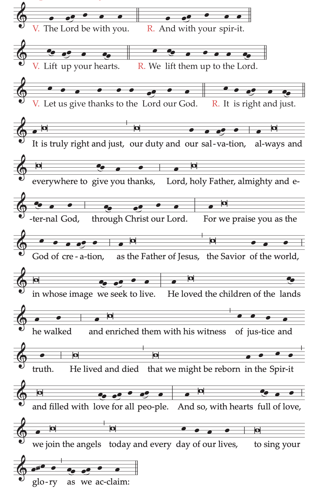
Text without music:
V. The Lord be with you. R. And with your spirit.
V. Lift up your hearts. R. We lift them up to the Lord.
V. Let us give thanks to the Lord our God. R. It is right and just.
It is truly right and just, our duty and our salvation,
always and everywhere to give you thanks,
Lord, holy Father, almighty and eternal God,
through Christ our Lord.
For we praise you as the God of creation,
as the Father of Jesus, the Savior of the world,
in whose image we seek to live.
He loved the children of the lands he walked
and enriched them with his witness of justice and truth.
He lived and died that we might be reborn in the Spirit
and filled with love for all people.
And so, with hearts full of love,
we join the angels today and every day of our lives,
to sing your glory as we acclaim:
Holy, Holy, Holy Lord God of hosts...
Communion AntiphonPs 36 (35):10
With you, O Lord, is the fountain of life, and in your light, we see light.
Prayer after Communion
By showing us in this Eucharist, O Lord,
a glimpse of the unity and joy
of your people in heaven,
deepen our unity and intensify our joy,
that all who believe in you
may work together to build the city of lasting peace.
Through Christ our Lord.
Or:
May the love we share in this Eucharist, heavenly Father,
flow in rich blessing throughout our land
and by your grace may we as a nation
place our trust in you
and seek to do your will.
Through Christ our Lord.
Solemn Blessing
May God the Father who has called us
to be one human family
fill your hearts with deep longing
for peace and harmony.
R. Amen.
May the Son of God who came to share our life
and make us children of the one Father
enable you to grow in wisdom and grace
before God and the human family.
R. Amen.
And may the Holy Spirit who is the bond of love
between the Father and the Son
unite in love all here present;
may he be the bond of love among you,
our nation, and all peoples.
R. Amen.
And may the blessing of almighty God,
the Father, and the Son, ✠ and the Holy Spirit,
come down on you and remain with you forever.
R. Amen.
Grant, O Lord, that in the spirit of the Apostle Paul
we may pursue the surpassing knowledge of Jesus Christ,
for, having learned it,
Saint Anthony Zaccaria
constantly preached your saving word in the Church.
Through our Lord Jesus Christ, your Son,
who lives and reigns with you in the unity of the Holy Spirit,
God, for ever and ever.
O God, author of peace and lover of charity,
who adorned Saint Elizabeth of Portugal
with a marvelous grace for reconciling those in conflict,
grant, through her intercession,
that we may become peacemakers,
and so be called children of God.
Through our Lord Jesus Christ, your Son,
who lives and reigns with you in the unity of the Holy Spirit,
God, for ever and ever.
O God, author of innocence and lover of chastity,
who bestowed the grace of martyrdom
on your handmaid, the Virgin Saint Maria Goretti, in her youth,
grant, we pray, through her intercession,
that, as you gave her a crown for her steadfastness,
so we, too, may be firm
in obeying your commandments.
Through our Lord Jesus Christ, your Son,
who lives and reigns with you in the unity of the Holy Spirit,
God, for ever and ever.
July 9 Saint Augustine Zhao Rong, Priest, and Companions, Martyrs
O God, who in your wonderful providence
have strengthened your Church
through the confession of the Martyrs
Saint Augustine Zhao and companions,
grant that your people,
faithful to the mission entrusted to it,
may enjoy ever greater freedom
and witness to the truth before the world.
Through our Lord Jesus Christ, your Son,
who lives and reigns with you in the unity of the Holy Spirit,
God, for ever and ever.
July 11 Saint Benedict, Abbot Memorial
Entrance Antiphon
There was a man of venerable life,
Benedict, blessed by grace and by name,
who, leaving home and patrimony
and desiring to please God alone,
sought out the habit of holy living.
Collect
O God, who made the Abbot Saint Benedict
an outstanding master in the school of divine service,
grant, we pray,
that, putting nothing before love of you,
we may hasten with a loving heart
in the way of your commands.
Through our Lord Jesus Christ, your Son,
who lives and reigns with you in the unity of the Holy Spirit,
God, for ever and ever.
Prayer over the Offerings
Look kindly, Lord, upon these holy offerings,
which we make in honor of Saint Benedict,
and grant that,
by following his example in seeking you,
we may merit the gifts of unity in your service and of peace.
Through Christ our Lord.
Communion AntiphonLk 12: 42
This is the steward, faithful and prudent,
whom the Lord set over his household
to give them their allowance of food at the proper time.
Prayer after Communion
Having received this pledge of eternal life,
we humbly beseech you, O Lord,
that, attentive to the teaching of Saint Benedict,
we may faithfully serve your designs
and love one another with fervent charity.
Through Christ our Lord.
O God, whose abundant grace prepared Saint Henry
to be raised by you in a wonderful way
from the cares of earthly rule to heavenly realms,
grant, we pray, through his intercession,
that amid the uncertainties of this world
we may hasten towards you with minds made pure.
Through our Lord Jesus Christ, your Son,
who lives and reigns with you in the unity of the Holy Spirit,
God, for ever and ever.
Post Canonization, Full Mass Propers added and/or updated on May 26, 2023 (source link)
[In the Dioceses of the United States]
July 14 Saint Kateri Tekakwitha, Virgin Memorial
Entrance Antiphon
How beautiful you are, O virgin of Christ,
who were worthy to receive the Lord’s crown,
the crown of perpetual virginity.
Collect
O God, who willed the Virgin Saint Kateri Tekakwitha
to flower in a life of innocence
among the Native peoples of North America,
grant, through her intercession,
that all gathered in your Church
from every nation, tribe and tongue,
may glorify you in a single canticle of praise.
Through our Lord Jesus Christ, your Son,
who lives and reigns with you in the unity of the Holy Spirit,
God, for ever and ever.
Prayer over the Offerings
Graciously accept, O Lord,
this offering of your holy people,
honoring Saint Kateri,
through whose intercession we ask the grace
to do always what is pleasing to you.
Through Christ our Lord.
Communion AntiphonCf. Mt 25:6
Behold, the Bridegroom is coming;
come out to meet Christ the Lord.
Prayer after Communion
Refreshed by the heavenly food
of the Body and Blood of your beloved Son,
we humbly beseech you, O Lord,
that following the example of Saint Kateri
we may live the mystery we celebrate.
Through Christ our Lord.
July 15 Saint Bonaventure, Bishop and Doctor of the Church Memorial
Grant, we pray, almighty God,
that, just as we celebrate the heavenly birthday
of the Bishop Saint Bonaventure,
we may benefit from his great learning
and constantly imitate the ardor of his charity.
Through our Lord Jesus Christ, your Son,
who lives and reigns with you in the unity of the Holy Spirit,
God, for ever and ever.
May the venerable intercession of the glorious Virgin Mary
come to our aid, we pray, O Lord,
so that, fortified by her protection,
we may reach the mountain which is Christ.
Who lives and reigns with you in the unity of the Holy Spirit,
God, for ever and ever.
O God, who adorned the Priest Saint Camillus
with a singular grace of charity towards the sick,
pour out upon us, by his merits,
a spirit of love for you,
so that, serving you in our neighbor,
we may, at the hour of our death,
pass safely over to you.
Through our Lord Jesus Christ, your Son,
who lives and reigns with you in the unity of the Holy Spirit,
God, for ever and ever.
Direct your faithful, Lord, in the way of eternal salvation,
which the Bishop Saint Apollinaris showed by his teaching and martyrdom,
and grant, through his intercession,
that we may so persevere in keeping your commandments
as to merit being crowned with him.
Through our Lord Jesus Christ, your Son,
who lives and reigns with you in the unity of the Holy Spirit,
God, for ever and ever.
July 21 Saint Lawrence of Brindisi, Priest and Doctor of the Church
O God, who for the glory of your name
and the salvation of souls
bestowed on the Priest Saint Lawrence of Brindisi
a spirit of counsel and fortitude,
grant, we pray, that in the same spirit,
we may know what must be done
and, through his intercession,
bring it to completion.
Through our Lord Jesus Christ, your Son,
who lives and reigns with you in the unity of the Holy Spirit,
God, for ever and ever.
Elevated from Memorial to Feast, and proper Preface added, on June 3, 2016 (source link)
July 22 SAINT MARY MAGDALENE Feast
Entrance AntiphonJn 20: 17
The Lord said to Mary Magdalene:
Go to my brothers and tell them:
I am going to my Father and your Father,
to my God and your God.
Collect
O God, whose Only Begotten Son
entrusted Mary Magdalene before all others
with announcing the great joy of the Resurrection,
grant, we pray,
that through her intercession and example
we may proclaim the living Christ
and come to see him reigning in your glory.
Who lives and reigns with you in the unity of the Holy Spirit,
God, for ever and ever.
Prayer over the Offerings
Accept, O Lord, the offerings
presented in commemoration of Saint Mary Magdalene,
whose homage of charity
was graciously accepted by your Only Begotten Son.
Who lives and reigns for ever and ever.
Preface: Apostle to the Apostles.
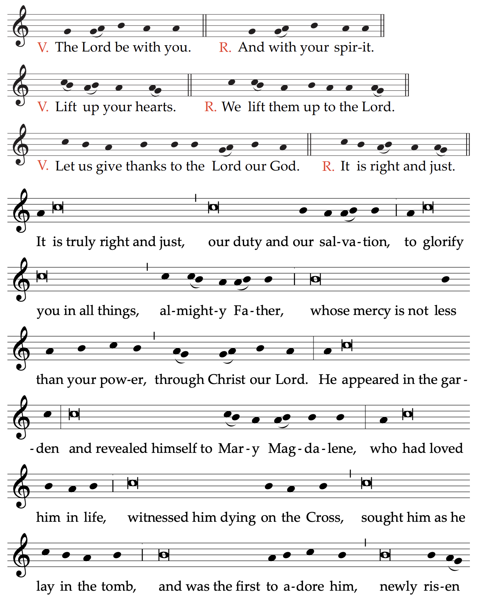
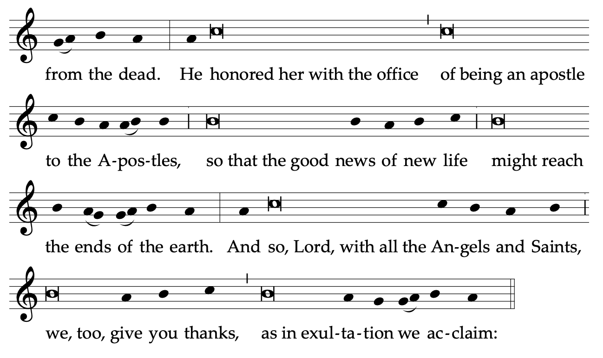
Text without music:
V. The Lord be with you. R. And with your spirit.
V. Lift up your hearts. R. We lift them up to the Lord.
V. Let us give thanks to the Lord our God. R. It is right and just.
It is truly right and just,
our duty and our salvation,
to glorify you in all things, almighty Father,
whose mercy is not less than your power,
through Christ our Lord.
He appeared in the garden
and revealed himself to Mary Magdalene,
who had loved him in life,
witnessed him dying on the Cross,
sought him as he lay in the tomb,
and was the first to adore him, newly risen from the dead.
He honored her with the office of being an apostle to the Apostles,
so that the good news of new life
might reach the ends of the earth.
And so, Lord, with all the Angels and Saints,
we, too, give you thanks, as in exultation we acclaim:
Holy, Holy, Holy Lord God of hosts...
Communion Antiphon2 Cor 5: 14, 15
The love of Christ impels us,
so that those who live may live no longer for themselves,
but for him who died for them and was raised.
Prayer after Communion
May the holy reception of your mysteries, Lord,
instill in us that persevering love
with which Saint Mary Magdalene
clung resolutely to Christ her Master.
Who lives and reigns for ever and ever.
O God, who guided Saint Bridget of Sweden
along different paths of life
and wondrously taught her the wisdom of the Cross
as she contemplated the Passion of your Son,
grant us, we pray,
that, walking worthily in our vocation,
we may seek you in all things.
Through our Lord Jesus Christ, your Son,
who lives and reigns with you in the unity of the Holy Spirit,
God, for ever and ever.
O God, who called the Priest Saint Sharbel Makhluf
to the solitary combat of the desert
and imbued him with all manner of devotion,
grant us, we pray,
that, being made imitators of the Lord’s Passion,
we may merit to be co-heirs of his Kingdom.
Who lives and reigns with you in the unity of the Holy Spirit,
God, for ever and ever.
July 25 SAINT JAMES, APOSTLE Feast
Entrance AntiphonCf. Mt 4: 18, 21
As he walked by the Sea of Galilee,
Jesus saw James the son of Zebedee and John his brother
mending their nets and he called them.
The Gloria in excelsis (Glory to God in the highest) is said.
Collect
Almighty ever-living God,
who consecrated the first fruits of your Apostles
by the blood of Saint James,
grant, we pray,
that your Church may be strengthened by his confession of faith
and constantly sustained by his protection.
Through our Lord Jesus Christ, your Son,
who lives and reigns with you in the unity of the Holy Spirit,
God, for ever and ever.
Prayer over the Offerings
Cleanse us, Lord, by the saving baptism of your Son’s Passion,
so that on the Feast of Saint James,
whom you willed to be the first among the Apostles
to drink of Christ’s chalice of suffering,
we may offer a sacrifice pleasing to you.
Through Christ our Lord.
They drank the chalice of the Lord,
and became the friends of God.
Prayer after Communion
Help us, O Lord, we pray,
through the intercession of the blessed Apostle James,
on whose feast day we have received with joy your holy gifts.
Through Christ our Lord.
July 26 Saints Joachim and Anne, Parents of the Blessed Virgin Mary Memorial
Entrance AntiphonCf. Sir 44: 1, 25
Let us praise Joachim and Anne, to whom, in their generation,
the Lord gave him who was a blessing for all the nations.
Collect
O Lord, God of our Fathers,
who bestowed on Saints Joachim and Anne this grace,
that of them should be born the Mother of your incarnate Son,
grant, through the prayers of both,
that we may attain the salvation
you have promised to your people.
Through our Lord Jesus Christ, your Son,
who lives and reigns with you in the unity of the Holy Spirit,
God, for ever and ever.
Prayer over the Offerings
Receive, we pray, O Lord,
these offerings of our homage,
and grant that we may merit a share in the same blessing
which you promised to Abraham and his descendants.
Through Christ our Lord.
Communion AntiphonCf. Ps 24 (23): 5
They received blessings from the Lord
and mercy from God their Savior.
Prayer after Communion
O God, who willed that your Only Begotten Son
should be born from among humanity
so that by a wonderful mystery
humanity might be born again from you,
we pray that, in your kindness,
you may sanctify by the spirit of adoption
those you have fed with the Bread you give your children.
Through Christ our Lord.
Prior Memorial of St. Martha replaced by Memorial of Martha, Mary, and Lazarus on January 26, 2021 (source link)
July 29 Saints Martha, Mary, and Lazarus Memorial
Entrance AntiphonCf. Lk 10:38
Jesus entered a village,
where a woman named Martha welcomed him into her home.
Collect
O God, whose Son
called Lazarus back to life from the grave
and was pleased to be a guest in the home of Martha,
grant us, we pray,
that, faithfully serving him in our brothers and sisters,
we, with Mary, may be found worthy to be nourished
by the contemplation of his word.
Who lives and reigns with you in the unity of the Holy Spirit,
God, for ever and ever.
Prayer over the Offerings
As we proclaim your wonders in your Saints, O Lord,
we humbly implore your majesty,
that, as their homage of love was pleasing to you,
so, too, our dutiful service may find favor in your sight.
Through Christ our Lord.
Communion AntiphonJn 11:27
Martha said to Jesus:
You are the Christ, the Son of God,
who is coming into this world.
Prayer after Communion
May the holy reception of the Body and Blood
of your Only Begotten Son, O Lord,
turn us away from the cares of this fallen world,
so that, following the example of Saints Martha, Mary, and Lazarus,
we may grow in sincere love for you on earth
and rejoice to behold you for eternity in heaven.
Through Christ our Lord.
July 30 Saint Peter Chrysologus, Bishop and Doctor of the Church
O God, who made the Bishop Saint Peter Chrysologus
an outstanding preacher of your incarnate Word,
grant, through his intercession,
that we may constantly ponder in our hearts
the mysteries of your salvation
and faithfully express them in what we do.
Through our Lord Jesus Christ, your Son,
who lives and reigns with you in the unity of the Holy Spirit,
God, for ever and ever.
July 31 Saint Ignatius of Loyola, Priest Memorial
Entrance AntiphonCf. Phil 2: 10-11
At the name of Jesus, every knee should bend
of those in heaven and on earth and under the earth,
and every tongue confess that Jesus Christ is Lord,
to the glory of God the Father.
Collect
O God, who raised up Saint Ignatius of Loyola in your Church
to further the greater glory of your name,
grant that by his help we may imitate him
in fighting the good fight on earth
and merit to receive with him a crown in heaven.
Through our Lord Jesus Christ, your Son,
who lives and reigns with you in the unity of the Holy Spirit,
God, for ever and ever.
Prayer over the Offerings
May these offerings we make to you
as we celebrate Saint Ignatius
be pleasing, Lord God,
and grant that the sacred mysteries,
which you have made the fount of all holiness,
may sanctify us, too, in the truth.
Through Christ our Lord.
Communion AntiphonCf. Lk 12: 49
Thus says the Lord: I have come to cast fire on the earth,
and how I wish that it were kindled!
Prayer after Communion
May the sacrifice of praise
that we have offered with thanksgiving
in honor of Saint Ignatius, O Lord,
bring us to exalt your majesty without end.
Through Christ our Lord.
O God, who constantly raise up in your Church new examples of virtue,
grant that we may follow so closely in the footsteps
of the Bishop Saint Alphonsus in his zeal for souls
as to attain the same rewards that are his in heaven.
Through our Lord Jesus Christ, your Son,
who lives and reigns with you in the unity of the Holy Spirit,
God, for ever and ever.
Prayer over the Offerings
Be pleased, O Lord, to enkindle our hearts
with the celestial fire of your Spirit,
just as you granted that Saint Alphonsus should celebrate these mysteries,
and by them offer himself to you as a holy sacrifice.
Through Christ our Lord.
Prayer after Communion
O God, who gave us Saint Alphonsus
to be a faithful steward and preacher of this great mystery,
grant that your faithful
may receive it often and, receiving it,
praise you without end.
Through Christ our Lord.
Lead us, Lord God, to imitate the constancy of Saint Eusebius
in affirming the divinity of your Son,
so that, by preserving the faith he taught as your Bishop,
we may merit a share in the very life of your Son.
Who lives and reigns with you in the unity of the Holy Spirit,
God, for ever and ever.
O God, who adorned Saint Peter Julian Eymard
with a wonderful love for the sacred mysteries
of the Body and Blood of your Son,
graciously grant
that we, too, may be worthy to receive
the delights he drew from this divine banquet.
Through our Lord Jesus Christ, your Son,
who lives and reigns with you in the unity of the Holy Spirit,
God, for ever and ever.
Almighty and merciful God,
who made the Priest Saint John Vianney
wonderful in his pastoral zeal,
grant, we pray,
that through his intercession and example
we may in charity win brothers and sisters for Christ
and attain with them eternal glory.
Through our Lord Jesus Christ, your Son,
who lives and reigns with you in the unity of the Holy Spirit,
God, for ever and ever.
August 5 The Dedication of the Basilica of Saint Mary Major
Pardon the faults of your servants, we pray, O Lord,
that we, who cannot please you by our own deeds,
may be saved through the intercession
of the Mother of your Son and our Lord.
Who lives and reigns with you in the unity of the Holy Spirit,
God, for ever and ever.
August 6 THE TRANSFIGURATION OF THE LORD Feast
Entrance AntiphonCf. Mt 17: 5
In a resplendent cloud the Holy Spirit appeared.
The Father’s voice was heard: This is my beloved Son,
with whom I am well pleased. Listen to him.
The Gloria in excelsis (Glory to God in the highest) is said.
Collect
O God, who in the glorious Transfiguration
of your Only Begotten Son
confirmed the mysteries of faith by the witness of the Fathers
and wonderfully prefigured our full adoption to sonship,
grant, we pray, to your servants,
that, listening to the voice of your beloved Son,
we may merit to become co-heirs with him.
Who lives and reigns with you in the unity of the Holy Spirit,
God, for ever and ever.
When this Feast falls on a Sunday, the Creed is said.
Prayer over the Offerings
Sanctify, O Lord, we pray,
these offerings here made to celebrate
the glorious Transfiguration of your Only Begotten Son,
and by his radiant splendor
cleanse us from the stains of sin.
Through Christ our Lord.
Preface: The mystery of the Transfiguration.
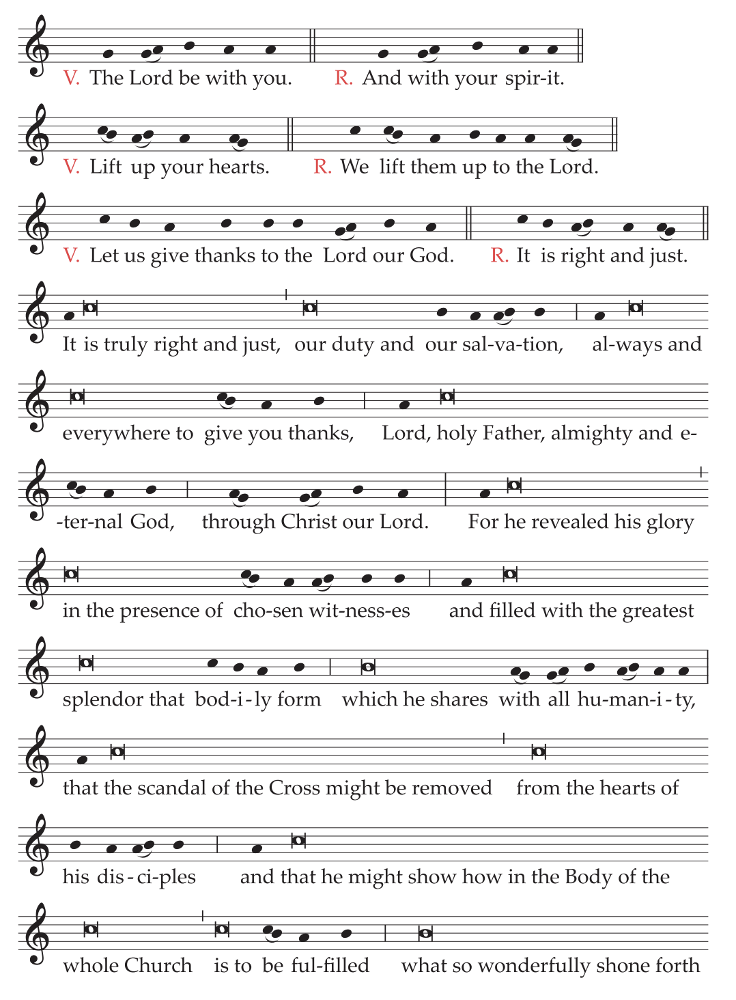
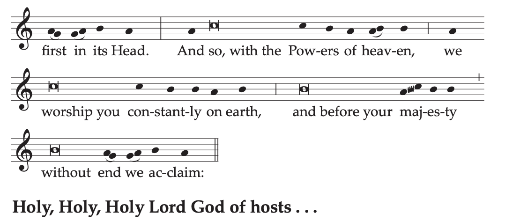
Text without music:
V. The Lord be with you. R. And with your spirit.
V. Lift up your hearts. R. We lift them up to the Lord.
V. Let us give thanks to the Lord our God. R. It is right and just.
It is truly right and just, our duty and our salvation,
always and everywhere to give you thanks,
Lord, holy Father, almighty and eternal God,
through Christ our Lord.
For he revealed his glory in the presence of chosen witnesses
and filled with the greatest splendor that bodily form
which he shares with all humanity,
that the scandal of the Cross
might be removed from the hearts of his disciples
and that he might show
how in the Body of the whole Church is to be fulfilled
what so wonderfully shone forth first in its Head.
And so, with the Powers of heaven,
we worship you constantly on earth,
and before your majesty
without end we acclaim:
Holy, Holy, Holy Lord God of hosts...
Communion AntiphonCf. 1 Jn 3: 2
When Christ appears, we shall be like him,
for we shall see him as he is.
Prayer after Communion
May the heavenly nourishment we have received,
O Lord, we pray,
transform us into the likeness of your Son,
whose radiant splendor you willed to make manifest
in his glorious Transfiguration.
Who lives and reigns for ever and ever.
August 7 Saint Sixtus II, Pope, and Companions, Martyrs
By the power of the Holy Spirit,
we pray, almighty God,
make us docile in believing the faith
and courageous in confessing it,
just as you granted Saint Sixtus and his companions
that they might lay down their lives
for the sake of your word and in witness to Jesus.
Who lives and reigns with you in the unity of the Holy Spirit,
God, for ever and ever.
O God, who endowed the Priest Saint Cajetan
with the grace of imitating
the apostolic way of life,
grant us, through his example and intercession,
to trust in you at all times
and to seek unceasingly your Kingdom.
Through our Lord Jesus Christ, your Son,
who lives and reigns with you in the unity of the Holy Spirit,
God, for ever and ever.
August 8 Saint Dominic, Priest Memorial
Entrance AntiphonCf. Sir 15: 5
In the midst of the Church he opened his mouth,
and the Lord filled him with the spirit of wisdom and understanding
and clothed him in a robe of glory.
Collect
May Saint Dominic come to the help of your Church
by his merits and teaching, O Lord,
and may he, who was an outstanding preacher of your truth,
be a devoted intercessor on our behalf.
Through our Lord Jesus Christ, your Son,
who lives and reigns with you in the unity of the Holy Spirit,
God, for ever and ever.
Prayer over the Offerings
Attend mercifully to the prayers we offer you, O Lord,
by the intercession of Saint Dominic,
and through the great power of this sacrifice
strengthen by the protection of your grace
those who champion the faith.
Through Christ our Lord.
Communion AntiphonLk 12: 42
This is the steward, faithful and prudent,
whom the Lord set over his household
to give them their allowance of food at the proper time.
Prayer after Communion
May your Church, O Lord,
receive with wholehearted reverence
the power of this heavenly Sacrament,
by which we have been nourished
on the commemoration of Saint Dominic,
and may your Church,
having flourished by means of his preaching,
be helped through his intercession.
Through Christ our Lord.
August 9 Saint Teresa Benedicta of the Cross, Virgin and Martyr
God of our Fathers,
who brought the Martyr Saint Teresa Benedicta of the Cross
to know your crucified Son
and to imitate him even until death,
grant, through her intercession,
that the whole human race may acknowledge Christ as its Savior
and through him come to behold you for eternity.
Who lives and reigns with you in the unity of the Holy Spirit,
God, for ever and ever.
August 10 SAINT LAWRENCE, DEACON AND MARTYR Feast
Entrance Antiphon
This is the blessed Lawrence,
who gave himself up for the treasure of the Church:
for this he earned the suffering of martyrdom
to ascend with joy to the Lord Jesus Christ.
The Gloria in excelsis (Glory to God in the highest) is said.
Collect
O God, giver of that ardor of love for you
by which Saint Lawrence was outstandingly faithful in service
and glorious in martyrdom,
grant that we may love what he loved
and put into practice what he taught.
Through our Lord Jesus Christ, your Son,
who lives and reigns with you in the unity of the Holy Spirit,
God, for ever and ever.
Prayer over the Offerings
Receive with favor, O Lord,
the offerings we joyfully make on the feast day of Saint Lawrence
and grant that they become a help to our salvation.
Through Christ our Lord.
Whoever serves me must follow me
and where I am there also will my servant be, says the Lord.
Prayer after Communion
Nourished by these sacred gifts,
we humbly implore you, Lord,
that the homage of dutiful service,
which we render on the feast of Saint Lawrence,
may bring us an increase of your saving grace.
Through Christ our Lord.
O God, who in your mercy led Saint Clare to a love of poverty,
grant, through her intercession,
that, following Christ in poverty of spirit,
we may merit to contemplate you
one day in the heavenly Kingdom.
Through our Lord Jesus Christ, your Son,
who lives and reigns with you in the unity of the Holy Spirit,
God, for ever and ever.
August 12 Saint Jane Frances de Chantal, Religious
O God, who made Saint Jane Frances de Chantal
radiant with outstanding merits in different walks of life,
grant us, through her intercession,
that, walking faithfully in our vocation,
we may constantly be examples of shining light.
Through our Lord Jesus Christ, your Son,
who lives and reigns with you in the unity of the Holy Spirit,
God, for ever and ever.
August 13 Saints Pontian, Pope, and Hippolytus, Martyrs
May the precious long-suffering of the just,
O Lord, we pray,
bring us a great increase of love for you
and always prompt in our hearts
constancy in the holy faith.
Through our Lord Jesus Christ, your Son,
who lives and reigns with you in the unity of the Holy Spirit,
God, for ever and ever.
August 14 Saint Maximilian Kolbe, Priest and Martyr Memorial
Entrance AntiphonMt 25: 34, 40
Come, you blessed of my Father, says the Lord.
Amen I say to you:
Whatever you did for one of the least of my brethren,
you did it for me.
Collect
O God, who filled the Priest and Martyr Saint Maximilian Kolbe
with a burning love for the Immaculate Virgin Mary
and with zeal for souls and love of neighbor,
graciously grant, through his intercession,
that, striving for your glory by eagerly serving others,
we may be conformed, even until death, to your Son.
Who lives and reigns with you in the unity of the Holy Spirit,
God, for ever and ever.
Prayer over the Offerings
We present our oblations to you, O Lord,
humbly praying that we may learn
from the example of Saint Maximilian
to offer our very lives to you.
Through Christ our Lord.
Communion AntiphonCf. Jn 15: 13
Greater love has no one
than to lay down his life for his friends, says the Lord.
Prayer after Communion
We pray, O Lord,
that, renewed by the Body and Blood of your Son,
we may be inflamed with the same fire of charity
that Saint Maximilian received from this holy banquet.
Through Christ our Lord.
August 15 THE ASSUMPTION OF THE BLESSED VIRGIN MARY Solemnity
At the Vigil Mass
This Mass is used on the evening of August 14, either before or after First Vespers (Evening Prayer I) of the Solemnity.
Entrance Antiphon
Glorious things are spoken of you, O Mary,
who today were exalted above the choirs of Angels
into eternal triumph with Christ.
The Gloria in excelsis (Glory to God in the highest) is said.
Collect
O God, who, looking on the lowliness of the Blessed Virgin Mary,
raised her to this grace,
that your Only Begotten Son was born of her according to the flesh
and that she was crowned this day with surpassing glory,
grant through her prayers,
that, saved by the mystery of your redemption,
we may merit to be exalted by you on high.
Through our Lord Jesus Christ, your Son,
who lives and reigns with you in the unity of the Holy Spirit,
God, for ever and ever.
The Creed is said.
Prayer over the Offerings
Receive, we pray, O Lord,
the sacrifice of conciliation and praise,
which we celebrate on the Assumption of the holy Mother of God,
that it may lead us to your pardon
and confirm us in perpetual thanksgiving.
Through Christ our Lord.
Blessed is the womb of the Virgin Mary,
which bore the Son of the eternal Father.
Prayer after Communion
Having partaken of this heavenly table,
we beseech your mercy, Lord our God,
that we, who honor the Assumption of the Mother of God,
may be freed from every threat of harm.
Through Christ our Lord.
A great sign appeared in heaven:
a woman clothed with the sun, and the moon beneath her feet,
and on her head a crown of twelve stars.
Or:
Let us all rejoice in the Lord,
as we celebrate the feast day in honor of the Virgin Mary,
at whose Assumption the Angels rejoice
and praise the Son of God.
The Gloria in excelsis (Glory to God in the highest) is said.
Collect
Almighty ever-living God,
who assumed the Immaculate Virgin Mary, the Mother of your Son,
body and soul into heavenly glory,
grant, we pray,
that, always attentive to the things that are above,
we may merit to be sharers of her glory.
Through our Lord Jesus Christ, your Son,
who lives and reigns with you in the unity of the Holy Spirit,
God, for ever and ever.
The Creed is said.
Prayer over the Offerings
May this oblation, our tribute of homage,
rise up to you, O Lord,
and, through the intercession of the most Blessed Virgin Mary,
whom you assumed into heaven,
may our hearts, aflame with the fire of love,
constantly long for you.
Through Christ our Lord.
Preface: The Glory of Mary assumed into heaven.
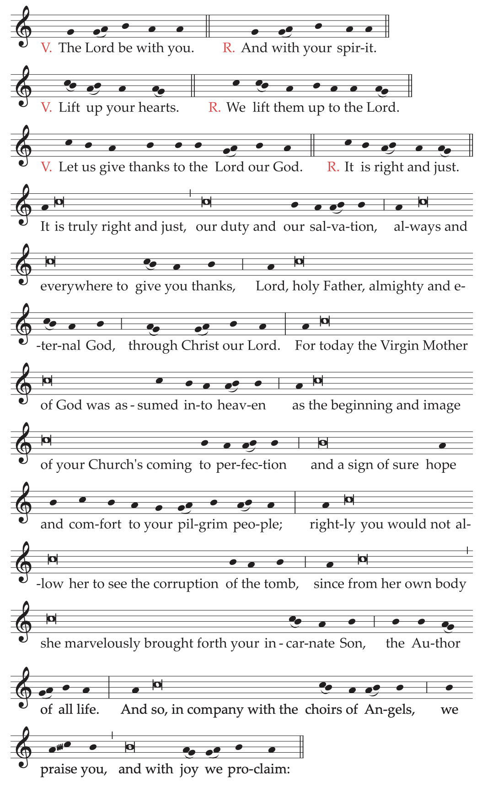
Text without music:
V. The Lord be with you. R. And with your spirit.
V. Lift up your hearts. R. We lift them up to the Lord.
V. Let us give thanks to the Lord our God. R. It is right and just.
It is truly right and just, our duty and our salvation,
always and everywhere to give you thanks,
Lord, holy Father, almighty and eternal God,
through Christ our Lord.
For today the Virgin Mother of God
was assumed into heaven
as the beginning and image
of your Church’s coming to perfection
and a sign of sure hope and comfort to your pilgrim people;
rightly you would not allow her
to see the corruption of the tomb
since from her own body she marvelously brought forth
your incarnate Son, the Author of all life.
And so, in company with the choirs of Angels,
we praise you, and with joy we proclaim:
Holy, Holy, Holy Lord God of hosts...
Communion AntiphonLk 1: 48-49
All generations will call me blessed,
for he who is mighty has done great things for me.
Prayer after Communion
Having received the Sacrament of salvation,
we ask you to grant, O Lord,
that, through the intercession of the Blessed Virgin Mary,
whom you assumed into heaven,
we may be brought to the glory of the resurrection.
Through Christ our Lord.
Grant your Church, we pray, almighty God,
that she may have Saint Stephen of Hungary,
who fostered her growth while a king on earth,
as her glorious defender in heaven.
Through our Lord Jesus Christ, your Son,
who lives and reigns with you in the unity of the Holy Spirit,
God, for ever and ever.
O God, who wonderfully chose the Priest Saint John Eudes
to proclaim the unfathomable riches of Christ,
grant us, by his example and teachings,
that, growing in knowledge of you,
we may live faithfully by the light of the Gospel.
Through our Lord Jesus Christ, your Son,
who lives and reigns with you in the unity of the Holy Spirit,
God, for ever and ever.
August 20 Saint Bernard, Abbot and Doctor of the Church Memorial
Entrance Antiphon
Filled by the Lord with a spirit of understanding,
blessed Bernard ministered streams of clear teaching
to the people of God.
Collect
O God, who made of the Abbot Saint Bernard
a man consumed with zeal for your house
and a light shining and burning in your Church,
grant, through his intercession,
that we may be on fire with the same spirit
and walk always as children of light.
Through our Lord Jesus Christ, your Son,
who lives and reigns with you in the unity of the Holy Spirit,
God, for ever and ever.
Prayer over the Offerings
We offer to your majesty, O Lord,
the Sacrament of unity and peace,
as we celebrate the Memorial of the Abbot Saint Bernard,
a man outstanding in word and deed,
who strove to bring order and concord to your Church.
Through Christ our Lord.
Communion AntiphonJn 15: 9
As the Father loves me, so I also love you;
remain in my love, says the Lord.
Prayer after Communion
May the food we have received, O Lord,
as we honor Saint Bernard,
work its effect in us,
so that, strengthened by his example
and instructed by his teaching,
we may be caught up in love of your incarnate Word.
Who lives and reigns for ever and ever.
O God, who to safeguard the Catholic faith
and to restore all things in Christ,
filled Pope Saint Pius the Tenth
with heavenly wisdom and apostolic fortitude,
graciously grant
that, following his teaching and example,
we may gain an eternal prize.
Through our Lord Jesus Christ, your Son,
who lives and reigns with you in the unity of the Holy Spirit,
God, for ever and ever.
Prayer over the Offerings
Receive with kindness our oblations
and grant, O Lord, we pray,
that, following the teachings of Pope Saint Pius,
we may celebrate these divine mysteries with sincere reverence
and receive them in a spirit of faith.
Through Christ our Lord.
Prayer after Communion
Celebrating the Memorial of Pope Saint Pius,
we pray, O Lord our God,
that by the power of this heavenly table
we may be made constant in the faith
and be of one accord in your love.
Through Christ our Lord.
August 22 The Queenship of the Blessed Virgin Mary Memorial
Entrance AntiphonCf. Ps 45 (44): 10
At your right stands the queen in robes of gold,
finely arrayed.
Collect
O God, who made the Mother of your Son
to be our Mother and our Queen,
graciously grant that, sustained by her intercession,
we may attain in the heavenly Kingdom
the glory promised to your children.
Through our Lord Jesus Christ, your Son,
who lives and reigns with you in the unity of the Holy Spirit,
God, for ever and ever.
Prayer over the Offerings
As we observe this Memorial of the Blessed Virgin Mary,
we bring you our offerings, O Lord,
praying to be given strength by the humanity of Christ,
who offered himself to you on the Cross
as the unblemished oblation.
Who lives and reigns for ever and ever.
Blessed are you who have believed
that what was spoken to you by the Lord will be fulfilled.
Prayer after Communion
Having received this heavenly Sacrament,
we humbly pray, O Lord,
that we, who reverently celebrate the Memorial of the Blessed Virgin Mary,
may merit to be partakers at your eternal banquet.
Through Christ our Lord.
O God, you set Saint Rose of Lima on fire with your love,
so that, secluded from the world
in the austerity of a life of penance,
she might give herself to you alone;
grant, we pray, that through her intercession,
we may tread the paths of life on earth
and drink at the stream of your delights in heaven.
Through our Lord Jesus Christ, your Son,
who lives and reigns with you in the unity of the Holy Spirit,
God, for ever and ever.
August 24 SAINT BARTHOLOMEW, APOSTLE Feast
Entrance AntiphonCf. Ps 96 (95): 2-3
Proclaim the salvation of God day by day;
tell among the nations his glory.
The Gloria in excelsis (Glory to God in the highest) is said.
Collect
Strengthen in us, O Lord, the faith,
by which the blessed Apostle Bartholomew
clung wholeheartedly to your Son,
and grant that through the help of his prayers
your Church may become for all the nations
the sacrament of salvation.
Through our Lord Jesus Christ, your Son,
who lives and reigns with you in the unity of the Holy Spirit,
God, for ever and ever.
Prayer over the Offerings
As we celebrate anew
the feast day of Saint Bartholomew, O Lord,
we pray that we may obtain your help
through the intercession of the Apostle,
in whose honor we bring you this sacrifice of praise.
Through Christ our Lord.
I confer a kingdom on you,
just as my Father has conferred one on me,
that you may eat and drink at my table in my kingdom, says the Lord.
Prayer after Communion
As we celebrate the feast day
of the blessed Apostle Bartholomew,
we have received the pledge of eternal salvation, O Lord,
and we pray that it may be of help to us,
both now and for the life to come.
Through Christ our Lord.
O God, who brought Saint Louis
from the cares of earthly rule
to the glory of a heavenly realm,
grant, we pray, through his intercession,
that, by fulfilling our duties on earth,
we may seek out your eternal Kingdom.
Through our Lord Jesus Christ, your Son,
who lives and reigns with you in the unity of the Holy Spirit,
God, for ever and ever.
O God, who adorned the Priest Saint Joseph Calasanz
with such charity and patience
that he labored tirelessly
to educate children and endow them with every virtue,
grant, we pray, that we, who venerate him as a teacher of wisdom,
may constantly imitate him,
for he was a co-worker of your truth.
Through our Lord Jesus Christ, your Son,
who lives and reigns with you in the unity of the Holy Spirit,
God, for ever and ever.
O God, who console the sorrowful
and who mercifully accepted
the motherly tears of Saint Monica
for the conversion of her son Augustine,
grant us, through the intercession of them both,
that we may bitterly regret our sins
and find the grace of your pardon.
Through our Lord Jesus Christ, your Son,
who lives and reigns with you in the unity of the Holy Spirit,
God, for ever and ever.
August 28 Saint Augustine, Bishop and Doctor of the Church Memorial
Entrance AntiphonCf. Sir 15: 5
In the midst of the Church he opened his mouth,
and the Lord filled him
with the spirit of wisdom and understanding
and clothed him in a robe of glory.
Collect
Renew in your Church, we pray, O Lord,
the spirit with which you endowed
your Bishop Saint Augustine
that, filled with the same spirit,
we may thirst for you,
the sole fount of true wisdom,
and seek you, the author of heavenly love.
Through our Lord Jesus Christ, your Son,
who lives and reigns with you in the unity of the Holy Spirit,
God, for ever and ever.
Prayer over the Offerings
Celebrating the memorial of our salvation,
we humbly beseech your mercy, O Lord,
that this Sacrament of your loving kindness
may be for us the sign of unity
and the bond of charity.
Through Christ our Lord.
Communion AntiphonMt 23: 10, 8
Thus says the Lord: You have but one teacher, the Christ,
and you are all brothers.
Prayer after Communion
May partaking of Christ’s table
sanctify us, we pray, O Lord,
that, being made members of his Body,
we may become what we have received.
Through Christ our Lord.
August 29 The Passion of Saint John the Baptist Memorial
Entrance AntiphonCf. Ps 119 (118): 46-47
I spoke, O Lord, of your decrees before kings,
and was not confounded;
I pondered your commands and loved them greatly.
Collect
O God, who willed that Saint John the Baptist
should go ahead of your Son
both in his birth and in his death,
grant that, as he died a Martyr for truth and justice,
we, too, may fight hard
for the confession of what you teach.
Through our Lord Jesus Christ, your Son,
who lives and reigns with you in the unity of the Holy Spirit,
God, for ever and ever.
Prayer over the Offerings
Through these offerings which we bring you, O Lord,
grant that we may make straight your paths,
as taught by that voice crying in the desert,
Saint John the Baptist,
who powerfully sealed his teaching
by the shedding of his blood.
Through Christ our Lord.
V. Lift up your hearts. R. We lift them up to the Lord.
V. Let us give thanks to the Lord our God. R. It is right and just.
It is truly right and just, our duty and our salvation,
always and everywhere to give you thanks,
Lord, holy Father, almighty and eternal God,
through Christ our Lord.
In his Precursor, Saint John the Baptist,
we praise your great glory,
for you consecrated him for a singular honor
among those born of women.
His birth brought great rejoicing;
even in the womb he leapt for joy
at the coming of human salvation.
He alone of all the prophets
pointed out the Lamb of redemption.
And to make holy the flowing waters,
he baptized the very author of Baptism
and was privileged to bear him supreme witness
by the shedding of his blood.
And so, with the Powers of heaven,
we worship you constantly on earth,
and before your majesty
without end we acclaim:
Holy, Holy, Holy Lord God of hosts...
Communion AntiphonJn 3: 27, 30
John answered and said:
He must increase; but I must decrease.
Prayer after Communion
Grant, O Lord,
as we celebrate the heavenly birth of Saint John the Baptist,
that we may revere, for what it signifies,
the saving Sacrament we have received
and, even more, may rejoice
at its clear effects in us.
Through Christ our Lord.
September 3 Saint Gregory the Great, Pope and Doctor of the Church Memorial
Entrance Antiphon
Blessed Gregory, raised upon the throne of Peter,
sought always the beauty of the Lord
and lived in celebration of that love.
Collect
O God, who care for your people with gentleness
and rule them in love,
through the intercession of Pope Saint Gregory,
endow, we pray, with a spirit of wisdom
those to whom you have given authority to govern,
that the flourishing of a holy flock
may become the eternal joy of the shepherds.
Through our Lord Jesus Christ, your Son,
who lives and reigns with you in the unity of the Holy Spirit,
God, for ever and ever.
Prayer over the Offerings
Grant our supplication, we pray, O Lord,
that this sacrifice we present in celebration of Saint Gregory
may be for our good,
since through its offering
you have loosed the offenses of all the world.
Through Christ our Lord.
Communion AntiphonLk 12: 42
This is the steward, faithful and prudent,
whom the Lord set over his household
to give them their allowance of food at the proper time.
Prayer after Communion
Through Christ the teacher, O Lord,
instruct those you feed with Christ, the living Bread,
that on the feast day of Saint Gregory
they may learn your truth
and express it in works of charity.
Through Christ our Lord.
Added to General Roman Calendar on December 24, 2024 (source link)
The Gloria in excelsis (Glory to God in the highest) is said.
Collect
O God, who called the Virgin Saint Teresa
to respond to the love of your Son thirsting on the Cross
with outstanding charity to the poorest of the poor,
grant us, we beseech you, by her intercession,
to minister to Christ in our suffering brothers and sisters.
Who lives and reigns with you in the unity of the Holy Spirit,
God, for ever and ever.
September 8 THE NATIVITY OF THE BLESSED VIRGIN MARY Feast
Entrance Antiphon
Let us celebrate with joy the Nativity of the Blessed Virgin Mary,
for from her arose the sun of justice, Christ our God.
The Gloria in excelsis (Glory to God in the highest) is said.
Collect
Impart to your servants, we pray, O Lord,
the gift of heavenly grace,
that the feast of the Nativity of the Blessed Virgin
may bring deeper peace
to those for whom the birth of her Son
was the dawning of salvation.
Through our Lord Jesus Christ, your Son,
who lives and reigns with you in the unity of the Holy Spirit,
God, for ever and ever.
Prayer over the Offerings
May the humanity of your Only Begotten Son
come, O Lord, to our aid,
and may he, who at his birth from the Blessed Virgin
did not diminish but consecrated her integrity,
by taking from us now our wicked deeds,
make our oblation acceptable to you.
Through Christ our Lord.
Or:
As we celebrate with joy
the Nativity of the Blessed Virgin Mary,
we bring you our offerings, O Lord,
and we humbly pray to be given strength
by the humanity of your Son,
who from her was pleased to take flesh.
Who lives and reigns for ever and ever.
Behold, the Virgin will bear a son,
who will save his people from their sins.
Prayer after Communion
May your Church exult, O Lord,
for you have renewed her with these sacred mysteries,
as she rejoices in the Nativity of the Blessed Virgin Mary,
which was the hope and the daybreak of salvation
for all the world.
Through Christ our Lord.
O God, who made Saint Peter Claver a slave of slaves
and strengthened him with wonderful charity and patience
as he came to their help,
grant, through his intercession,
that, seeking the things of Jesus Christ,
we may love our neighbor in deeds and in truth.
Through our Lord Jesus Christ, your Son,
who lives and reigns with you in the unity of the Holy Spirit,
God, for ever and ever.
September 12 The Most Holy Name of Mary
Entrance AntiphonCf. Jdt 13: 18-19
Blessed are you, O Virgin Mary, by the Lord God Most High,
above all women on the earth;
for he has so exalted your name
that your praise shall be undying on our lips.
Collect
Grant, we pray, almighty God,
that, for all who celebrate the glorious Name
of the Blessed Virgin Mary,
she may obtain your merciful favor.
Through our Lord Jesus Christ, your Son,
who lives and reigns with you in the unity of the Holy Spirit,
God, for ever and ever.
Prayer over the Offerings
May the intercession of Blessed Mary ever-Virgin
commend our offerings,
we pray, O Lord,
and may it make us acceptable to your majesty
as we revere and venerate her Name.
Through Christ our Lord.
Communion AntiphonCf. Lk 1: 48
All generations will call me blessed,
for God has looked on his lowly handmaid.
Prayer after Communion
May we obtain the grace of your blessing, O Lord,
through the intercession of Mary, the Mother of God,
that from her, whose holy Name we venerate,
we may obtain help in our every need.
Through Christ our Lord.
September 13 Saint John Chrysostom, Bishop and Doctor of the Church Memorial
Entrance AntiphonCf. Dn 12: 3
Those who are wise will shine brightly
like the splendor of the firmament
and those who lead the many to justice shall be like the stars for ever.
Collect
O God, strength of those who hope in you,
who willed that the Bishop Saint John Chrysostom
should be illustrious by his wonderful eloquence
and his experience of suffering,
grant us, we pray,
that, instructed by his teachings,
we may be strengthened through the example
of his invincible patience.
Through our Lord Jesus Christ, your Son,
who lives and reigns with you in the unity of the Holy Spirit,
God, for ever and ever.
Prayer over the Offerings
May the sacrifice which we gladly present
in commemoration of Saint John Chrysostom
be pleasing to you, O God,
for, taught by him,
we, too, give ourselves entirely to you in praise.
Through Christ our Lord.
Communion AntiphonCf. 1 Cor 1: 23-24
We proclaim Christ crucified;
Christ, the power of God and the wisdom of God.
Prayer after Communion
Grant, O merciful God,
that these mysteries we have received
as we commemorate Saint John Chrysostom,
may confirm us in your love
and enable us to be faithful in confessing your truth.
Through Christ our Lord.
September 14 THE EXALTATION OF THE HOLY CROSS Feast
Entrance AntiphonCf. Gal 6: 14
We should glory in the Cross of our Lord Jesus Christ,
in whom is our salvation, life and resurrection,
through whom we are saved and delivered.
The Gloria in excelsis (Glory to God in the highest) is said.
Collect
O God, who willed that your Only Begotten Son
should undergo the Cross to save the human race,
grant, we pray,
that we, who have known his mystery on earth,
may merit the grace of his redemption in heaven.
Through our Lord Jesus Christ, your Son,
who lives and reigns with you in the unity of the Holy Spirit,
God, for ever and ever.
When tffhis Feast falls on a Sunday, the Creed is said.
Prayer over the Offerings
May this oblation, O Lord,
which on the altar of the Cross
canceled the offense of the whole world,
cleanse us, we pray, of all our sins.
Through Christ our Lord.
Preface: The victory of the glorious Cross.
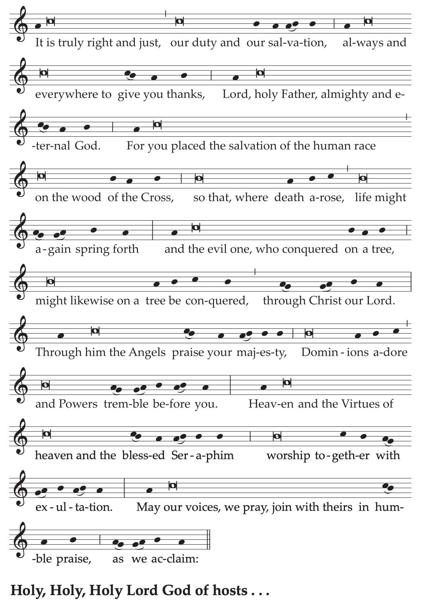
Text without music:
V. The Lord be with you. R. And with your spirit.
V. Lift up your hearts. R. We lift them up to the Lord.
V. Let us give thanks to the Lord our God. R. It is right and just.
It is truly right and just, our duty and our salvation,
always and everywhere to give you thanks,
Lord, holy Father, almighty and eternal God.
For you placed the salvation of the human race
on the wood of the Cross,
so that, where death arose,
life might again spring forth
and the evil one, who conquered on a tree,
might likewise on a tree be conquered,
through Christ our Lord.
Through him the Angels praise your majesty,
Dominions adore and Powers tremble before you.
Heaven and the Virtues of heaven and the blessed Seraphim
worship together with exultation.
May our voices, we pray, join with theirs
in humble praise, as we acclaim:
When I am lifted up from the earth,
I will draw everyone to myself, says the Lord.
Prayer after Communion
Having been nourished by your holy banquet,
we beseech you, Lord Jesus Christ,
to bring those you have redeemed
by the wood of your life-giving Cross
to the glory of the resurrection.
Who live and reign for ever and ever.
September 15 Our Lady of Sorrows Memorial
Entrance AntiphonCf. Lk 2: 34-35
Simeon said to Mary: Behold, this child is destined
for the ruin and rising of many in Israel,
and to be a sign of contradiction;
and your own soul a sword will pierce.
Collect
O God, who willed
that, when your Son was lifted high on the Cross,
his Mother should stand close by and share his suffering,
grant that your Church,
participating with the Virgin Mary in the Passion of Christ,
may merit a share in his Resurrection.
Who lives and reigns with you in the unity of the Holy Spirit,
God, for ever and ever.
Prayer over the Offerings
Receive, O merciful God, to the praise of your name
the prayers and sacrificial offerings
which we bring to you
as we venerate the Blessed Virgin Mary,
whom you graciously gave to us
as a most devoted Mother
when she stood by the Cross of Jesus.
Who lives and reigns for ever and ever.
Rejoice when you share in the sufferings of Christ,
that you may also rejoice exultantly when his glory is revealed.
Prayer after Communion
Having received the Sacrament of eternal redemption,
we humbly ask, O Lord,
that, honoring how the Blessed Virgin Mary
suffered with her Son,
we may complete in ourselves for the Church’s sake
what is lacking in the sufferings of Christ.
Who lives and reigns for ever and ever.
September 16 Saints Cornelius, Pope, and Cyprian, Bishop, Martyrs Memorial
O God, who gave Saints Cornelius and Cyprian to your people
as diligent shepherds and valiant Martyrs,
grant that through their intercession
we may be strengthened in faith and constancy
and spend ourselves without reserve
for the unity of the Church.
Through our Lord Jesus Christ, your Son,
who lives and reigns with you in the unity of the Holy Spirit,
God, for ever and ever.
Prayer over the Offerings
Receive, we pray, O Lord, the offerings of your people
in honor of the passion of your holy Martyrs
Saints Cornelius and Cyprian,
and may the gifts that gave them courage under persecution
make us, too, steadfast in all trials.
Through Christ our Lord.
Prayer after Communion
Through these mysteries which we have received,
we humbly beseech you, O Lord,
that by the example of the Martyrs
Saints Cornelius and Cyprian
we may be strengthened with the fortitude of your Spirit
to bear witness to the truth of the Gospel.
Through Christ our Lord.
September 17 Saint Robert Bellarmine, Bishop and Doctor of the Church
O God, who adorned the Bishop Saint Robert Bellarmine
with wonderful learning and virtue
to vindicate the faith of your Church,
grant, through his intercession,
that in the integrity of that same faith
your people may always find joy.
Through our Lord Jesus Christ, your Son,
who lives and reigns with you in the unity of the Holy Spirit,
God, for ever and ever.
Added to General Roman Calendar on January 25, 2021 (source link)
Saint Hildegard of Bingen, Virgin and Doctor of the Church
O God, fount of life,
who imbued the Virgin Saint Hildegard
with a spirit of prophecy,
grant us, we pray, by her example and intercession,
to know your ways,
and in the darkness of this age
to perceive the splendor of your light.
Through our Lord Jesus Christ, your Son,
who lives and reigns with you in the unity of the Holy Spirit,
God, for ever and ever.
O God, who grant us to venerate
the memory of the Martyr Saint Januarius,
give us, we pray, the joy of his company
in blessed happiness for all eternity.
Through our Lord Jesus Christ, your Son,
who lives and reigns with you in the unity of the Holy Spirit,
God, for ever and ever.
September 20 Saint Andrew Kim Tae-gǒn, Priest, and Paul Chǒng Ha-sang, and Companions, Martyrs Memorial
Entrance Antiphon
The blood of the holy Martyrs
was poured out for Christ upon the earth;
therefore they have gained everlasting rewards.
Collect
O God, who have been pleased to increase
your adopted children in all the world,
and who made the blood of the Martyrs
Saint Andrew Kim Tae-gǒn and his companions
a most fruitful seed of Christians,
grant that we may be defended by their help
and profit always from their example.
Through our Lord Jesus Christ, your Son,
who lives and reigns with you in the unity of the Holy Spirit,
God, for ever and ever.
Prayer over the Offerings
Look with favor, almighty God,
on the offerings of your people
and, through the intercession of the blessed Martyrs,
grant that we ourselves may become
a sacrifice acceptable to you
for the salvation of all the world.
Through Christ our Lord.
Communion AntiphonMt 10: 32
Everyone who acknowledges me before others
I will acknowledge before my heavenly Father, says the Lord.
Prayer after Communion
Nourished with the food of the valiant
as we celebrate the blessed Martyrs,
we humbly ask you, O Lord,
that, clinging faithfully to Christ,
we may labor in the Church for the salvation of all.
Through Christ our Lord.
September 21 SAINT MATTHEW, APOSTLE AND EVANGELIST Feast
Entrance AntiphonCf. Mt 28: 19-20
Go and make disciples of all nations, baptizing them
and teaching them to observe all that I have commanded you,
says the Lord.
The Gloria in excelsis (Glory to God in the highest) is said.
Collect
O God, who with untold mercy
were pleased to choose as an Apostle
Saint Matthew, the tax collector,
grant that, sustained by his example and intercession,
we may merit to hold firm in following you.
Through our Lord Jesus Christ, your Son,
who lives and reigns with you in the unity of the Holy Spirit,
God, for ever and ever.
Prayer over the Offerings
As we celebrate anew the memory of Saint Matthew,
we bring you sacrifices and prayers, O Lord,
humbly imploring you to look kindly on your Church,
whose faith you have nourished by the preaching of the Apostles.
Through Christ our Lord.
I did not come to call the just, but sinners, says the Lord.
Prayer after Communion
Sharing in that saving joy, O Lord,
with which Saint Matthew welcomed
the Savior as a guest in his home, we pray:
grant that we may always be renewed
by the food we receive from Christ,
who came to call not the just, but sinners to salvation.
Who lives and reigns for ever and ever.
Almighty ever-living God, who, by a singular grace,
gave the Priest Saint Pius a share in the Cross of your Son
and, by means of his ministry,
renewed the wonders of your mercy,
grant that through his intercession
we may be united constantly to the sufferings of Christ,
and so brought happily to the glory of the resurrection.
Through our Lord Jesus Christ, your Son,
who lives and reigns with you in the unity of the Holy Spirit,
God, for ever and ever.
May you be magnified, O Lord,
by the revered memory of your Saints Cosmas and Damian,
for with providence beyond words
you have conferred on them everlasting glory,
and on us, your unfailing help.
Through our Lord Jesus Christ, your Son,
who lives and reigns with you in the unity of the Holy Spirit,
God, for ever and ever.
Prayer over the Offerings
In honor of the precious death of your just ones, O Lord,
we come to offer that sacrifice
from which all martyrdom draws its origin.
Through Christ our Lord.
Prayer after Communion
Preserve in us your gift, O Lord,
and may what we have received at your hands
as we commemorate the Martyrs Saints Cosmas and Damian,
bring us healing, salvation and peace.
Through Christ our Lord.
September 27 Saint Vincent de Paul, Priest Memorial
Entrance AntiphonCf. Lk 4: 18
The Spirit of the Lord is upon me, for he has anointed me
and sent me to preach the good news to the poor,
to heal the broken-hearted.
Collect
O God, who for the relief of the poor
and the formation of the clergy
endowed the Priest Saint Vincent de Paul
with apostolic virtues,
grant, we pray, that, afire with that same spirit,
we may love what he loved
and put into practice what he taught.
Through our Lord Jesus Christ, your Son,
who lives and reigns with you in the unity of the Holy Spirit,
God, for ever and ever.
Prayer over the Offerings
O God, who enabled Saint Vincent
to imitate what he celebrated in the divine mysteries,
grant that by the power of this sacrifice
we, too, may be transformed into an oblation acceptable to you.
Through Christ our Lord.
Communion AntiphonCf. Ps 107 (106): 8-9
Let them thank the Lord for his mercy,
his wonders for the children of men,
for he satisfies the thirsty soul,
and the hungry he fills with good things.
Prayer after Communion
Renewed by this heavenly Sacrament, O Lord,
we implore
that, just as we are prompted by Saint Vincent’s example
to imitate your Son in his preaching of the Gospel to the poor,
so, too, we may be sustained by his prayers.
Through Christ our Lord.
O God, who taught the Martyr Saint Wenceslaus
to place the heavenly Kingdom before an earthly one,
grant through his prayers that, denying ourselves,
we may hold fast to you with all our heart.
Through our Lord Jesus Christ, your Son,
who lives and reigns with you in the unity of the Holy Spirit,
God, for ever and ever.
Grant us, we pray, Lord God,
the same perseverance shown by your Martyrs
Saint Lawrence Ruiz and his companions
in serving you and their neighbor,
since those persecuted for the sake of righteousness
are blessed in your Kingdom.
Through our Lord Jesus Christ, your Son,
who lives and reigns with you in the unity of the Holy Spirit,
God, for ever and ever.
September 29 SAINTS MICHAEL, GABRIEL AND RAPHAEL, ARCHANGELS Feast
Entrance AntiphonCf. Ps 103 (102): 20
Bless the Lord, all you his angels, mighty in power,
fulfilling his word, and heeding his voice.
The Gloria in excelsis (Glory to God in the highest) is said.
Collect
O God, who dispose in marvelous order
ministries both angelic and human,
graciously grant
that our life on earth may be defended
by those who watch over us
as they minister perpetually to you in heaven.
Through our Lord Jesus Christ, your Son,
who lives and reigns with you in the unity of the Holy Spirit,
God, for ever and ever.
Prayer over the Offerings
We offer you a sacrifice of praise, O Lord,
humbly entreating,
that, as these gifts are borne by the ministry of Angels
into the presence of your majesty,
so you may receive them favorably
and make them profitable for our salvation.
Through Christ our Lord.
Preface: God glorified through the Angels.
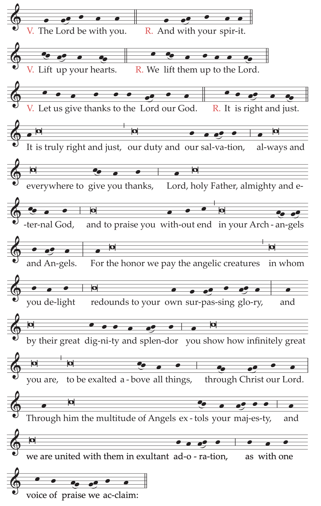
Text without music:
V. The Lord be with you. R. And with your spirit.
V. Lift up your hearts. R. We lift them up to the Lord.
V. Let us give thanks to the Lord our God. R. It is right and just.
It is truly right and just, our duty and our salvation,
always and everywhere to give you thanks,
Lord, holy Father, almighty and eternal God,
and to praise you without end
in your Archangels and Angels.
For the honor we pay the angelic creatures
in whom you delight
redounds to your own surpassing glory,
and by their great dignity and splendor
you show how infinitely great you are,
to be exalted above all things,
through Christ our Lord.
Through him the multitude of Angels extols your majesty,
and we are united with them in exultant adoration,
as with one voice of praise we acclaim:
Holy, Holy, Holy Lord God of hosts...
Communion AntiphonPs 138 (137): 1
I will thank you, Lord, with all my heart;
in the presence of the Angels I will praise you.
Prayer after Communion
Having been nourished with heavenly Bread,
we beseech you humbly, O Lord,
that, drawing from it new strength,
under the faithful protection of your Angels,
we may advance boldly along the way of salvation.
Through Christ our Lord.
September 30 Saint Jerome, Priest and Doctor of the Church Memorial
Entrance AntiphonCf. Ps 1: 2-3
Blessed indeed is he
who ponders the law of the Lord day and night:
he will yield his fruit in due season.
Collect
O God, who gave the Priest Saint Jerome
a living and tender love for Sacred Scripture,
grant that your people
may be ever more fruitfully nourished by your Word
and find in it the fount of life.
Through our Lord Jesus Christ, your Son,
who lives and reigns with you in the unity of the Holy Spirit,
God, for ever and ever.
Prayer over the Offerings
Grant us, O Lord,
that, having meditated on your Word,
following the example of Saint Jerome,
we may more eagerly draw near
to offer your majesty the sacrifice of salvation.
Through Christ our Lord.
Communion AntiphonCf. Jer 15: 16
Lord God, your words were found and I consumed them;
your word became the joy and the happiness of my heart.
Prayer after Communion
May these holy gifts we have received, O Lord,
as we rejoice in celebrating Saint Jerome,
stir up the hearts of your faithful
so that, attentive to sacred teachings,
they may understand the path they are to follow
and, by following it, obtain life everlasting.
Through Christ our Lord.
October 1 Saint Thérèse of the Child Jesus, Virgin and Doctor of the Church Memorial
Entrance AntiphonCf. Dt 32: 10-12
The Lord led her and taught her,
and kept her as the apple of his eye.
Like an eagle spreading its wings
he took her up and bore her on his shoulders.
The Lord alone was her guide.
Collect
O God, who open your Kingdom
to those who are humble and to little ones,
lead us to follow trustingly in the little way of Saint Thérèse,
so that through her intercession
we may see your eternal glory revealed.
Through our Lord Jesus Christ, your Son,
who lives and reigns with you in the unity of the Holy Spirit,
God, for ever and ever.
Prayer over the Offerings
As we proclaim your wonders in Saint Thérèse, O Lord,
we humbly implore your majesty,
that, as her merits were pleasing to you,
so, too, our dutiful service may find favor in your sight.
Through Christ our Lord.
Communion AntiphonMt 18: 3
Thus says the Lord:
Unless you turn and become like children,
you will not enter the Kingdom of Heaven.
Prayer after Communion
May the Sacrament we have received, O Lord,
kindle in us the force of that love
with which Saint Thérèse dedicated herself to you
and longed to obtain your mercy for all.
Through Christ our Lord.
October 2 The Holy Guardian Angels Memorial
Entrance AntiphonCf. Dn 3: 58
Angels of the Lord, bless the Lord,
praise and exalt him above all for ever.
Collect
O God, who in your unfathomable providence
are pleased to send your holy Angels to guard us,
hear our supplication as we cry to you,
that we may always be defended by their protection
and rejoice eternally in their company.
Through our Lord Jesus Christ, your Son,
who lives and reigns with you in the unity of the Holy Spirit,
God, for ever and ever.
Prayer over the Offerings
Receive, O Lord, the offerings we bring before you
as we venerate your holy Angels,
and graciously grant
that under their constant protection
we may be delivered from present dangers
and brought happily to life eternal.
Through Christ our Lord.
Preface: God glorified through the Angels.
V. The Lord be with you. R. And with your spirit.
V. Lift up your hearts. R. We lift them up to the Lord.
V. Let us give thanks to the Lord our God. R. It is right and just.
It is truly right and just, our duty and our salvation,
always and everywhere to give you thanks,
Lord, holy Father, almighty and eternal God,
and to praise you without end
in your Archangels and Angels.
For the honor we pay the angelic creatures
in whom you delight
redounds to your own surpassing glory,
and by their great dignity and splendor
you show how infinitely great you are,
to be exalted above all things,
through Christ our Lord.
Through him the multitude of Angels extols your majesty,
and we are united with them in exultant adoration,
as with one voice of praise we acclaim:
In the presence of the Angels I will praise you, my God.
Prayer after Communion
As you are pleased to nourish us for eternal life
with so great a Sacrament, O Lord,
direct us by the ministry of Angels
into the way of salvation and peace.
Through Christ our Lord.
October 4 Saint Francis of Assisi Memorial
Entrance Antiphon
Francis, the man of God, left his home behind,
abandoned his inheritance and became poor and penniless,
but the Lord raised him up.
Collect
O God, by whose gift Saint Francis
was conformed to Christ in poverty and humility,
grant that, by walking in Francis’ footsteps,
we may follow your Son,
and, through joyful charity,
come to be united with you.
Through our Lord Jesus Christ, your Son,
who lives and reigns with you in the unity of the Holy Spirit,
God, for ever and ever.
Prayer over the Offerings
As we bring you these offerings, O Lord,
we pray that we may be rightly disposed
for the celebration of the mystery of the Cross,
which Saint Francis so ardently embraced.
Through Christ our Lord.
Communion AntiphonMt 5: 3
Blessed are the poor in spirit,
for theirs is the Kingdom of Heaven.
Prayer after Communion
Grant us, we pray, O Lord,
through these holy gifts which we have received,
that, imitating the charity and apostolic zeal of Saint Francis,
we may experience the effects of your love
and spread them everywhere for the salvation of all.
Through Christ our Lord.
Added to General Roman Calendar on May 18, 2020 (source link)
O God, who entrusted Saint Faustina
with spreading the immense riches of your infinite mercy,
grant, at her intercession,
that after her example we may fully trust in your goodness
and generously perform works of charity.
Through our Lord Jesus Christ, your Son,
who lives and reigns with you in the unity of the Holy Spirit,
God, for ever and ever.
Added to Proper Calendar for the Dioceses of the United States of America on July 25, 2014 (source link)
O God, who made your Priest Blessed Francis Xavier Seelos
outstanding in love,
that he might proclaim the mysteries of redemption
and comfort those in affliction,
grant, by his intercession,
that we may work zealously for your glory
and for the salvation of mankind.
Through our Lord Jesus Christ, your Son,
who lives and reigns with you in the unity of the Holy Spirit,
God, for ever and ever.
O God, who called Saint Bruno to serve you in solitude,
grant, through his intercession,
that amid the changes of this world
we may constantly look to you alone.
Through our Lord Jesus Christ, your Son,
who lives and reigns with you in the unity of the Holy Spirit,
God, for ever and ever.
Lord, who enkindled in the heart of Blessed Marie Rose Durocher
the flame of ardent charity
and a great desire to cooperate
in the mission of the Church as a teacher,
grant us that same active love,
so that, in responding to the needs of the world today,
we may lead our brothers and sisters
to the blessedness of eternal life.
Through our Lord Jesus Christ, your Son,
who lives and reigns with you in the unity of the Holy Spirit,
God, for ever and ever.
October 7 Our Lady of the Rosary Memorial
Entrance AntiphonCf. Lk 1: 28, 42
Hail Mary, full of grace, the Lord is with you.
Blessed are you among women
and blessed is the fruit of your womb.
Collect
Pour forth, we beseech you, O Lord,
your grace into our hearts,
that we, to whom the Incarnation of Christ your Son
was made known by the message of an Angel,
may, through the intercession of the Blessed Virgin Mary,
by his Passion and Cross
be brought to the glory of his Resurrection.
Who lives and reigns with you in the unity of the Holy Spirit,
God, for ever and ever.
Prayer over the Offerings
Grant, we pray, O Lord,
that we may be rightly conformed to these offerings we bring
and so honor the mysteries of your Only Begotten Son,
as to be made worthy of his promises.
Who lives and reigns for ever and ever.
Behold, you will conceive in your womb and bear a son,
and you shall name him Jesus.
Prayer after Communion
We pray, O Lord our God,
that, just as we proclaim in this Sacrament
the Death and Resurrection of your Son,
so, being made partakers in his suffering,
we may also merit a share
in his consolation and his glory.
Who lives and reigns for ever and ever.
October 9 Saint Denis, Bishop, and Companions, Martyrs
O God, who sent Saint Denis and his companions
to preach your glory to the nations
and strengthened them for their mission
with the virtue of constancy in suffering,
grant, we pray, that we may imitate them
in disdaining prosperity in this world
and in being undaunted by any trial.
Through our Lord Jesus Christ, your Son,
who lives and reigns with you in the unity of the Holy Spirit,
God, for ever and ever.
O God, giver of all good things,
who through the Priest Saint John Leonardi
caused the Gospel to be announced to the nations,
grant, through his intercession,
that the true faith may always and everywhere prosper.
Through our Lord Jesus Christ, your Son,
who lives and reigns with you in the unity of the Holy Spirit,
God, for ever and ever.
Added to General Roman Calendar on November 9, 2025 (source link). English translation pending.
Saint John Henry Newman, Priest and Doctor of the Church
Almighty ever-living God,
who in Pope Saint John the Twenty-Third
have given a living example of Christ, the Good Shepherd,
to shine throughout the whole world,
grant us, we pray,
that, through his intercession,
we may joyfully pour out
an abundance of Christian charity.
Through our Lord Jesus Christ, your Son,
who lives and reigns with you in the unity of the Holy Spirit,
God, for ever and ever.
O God, who raised up Pope Saint Callistus the First
to serve the Church
and attend devoutly to Christ’s faithful departed,
strengthen us, we pray, by his witness to the faith,
so that, rescued from the slavery of corruption,
we may merit an incorruptible inheritance.
Through our Lord Jesus Christ, your Son,
who lives and reigns with you in the unity of the Holy Spirit,
God, for ever and ever.
October 15 Saint Teresa of Jesus, Virgin and Doctor of the Church Memorial
Entrance AntiphonCf. Ps 42 (41): 2-3
Like the deer that yearns for running streams,
so my soul is yearning for you, my God;
my soul is thirsting for God, the living God.
Collect
O God, who through your Spirit
raised up Saint Teresa of Jesus
to show the Church the way to seek perfection,
grant that we may always be nourished
by the food of her heavenly teaching
and fired with longing for true holiness.
Through our Lord Jesus Christ, your Son,
who lives and reigns with you in the unity of the Holy Spirit,
God, for ever and ever.
Prayer over the Offerings
May our offerings, O Lord, be acceptable to your majesty,
to whom the devoted service of Saint Teresa
was pleasing in such great measure.
Through Christ our Lord.
Communion AntiphonPs 89 (88): 2
I will sing for ever of your mercies, O Lord;
through all ages my mouth will proclaim your fidelity.
Prayer after Communion
Grant, O Lord our God,
that your obedient family,
whom you have fed with the Bread of heaven,
may follow the example of Saint Teresa
and rejoice to sing of your mercies for all eternity.
Through Christ our Lord.
Grant, we pray, almighty God,
that the revered intercession of Saint Hedwig
may bring us heavenly aid,
just as her wonderful life
is an example of humility for all.
Through our Lord Jesus Christ, your Son,
who lives and reigns with you in the unity of the Holy Spirit,
God, for ever and ever.
Pour out on us, we pray, O Lord,
the spirit with which you so remarkably endowed
Saint Margaret Mary,
so that we may come to know
that love of Christ which surpasses all understanding
and be utterly filled with your fullness.
Through our Lord Jesus Christ, your Son,
who lives and reigns with you in the unity of the Holy Spirit,
God, for ever and ever.
October 17 Saint Ignatius of Antioch, Bishop and Martyr Memorial
Entrance AntiphonCf. Gal 2: 19-20
I am crucified with Christ, yet I live;
no longer I, but Christ lives in me.
I live by faith in the Son of God,
who has loved me and given himself up for me.
Collect
Almighty ever-living God,
who adorn the sacred body of your Church
with the confessions of holy Martyrs,
grant, we pray,
that, just as the glorious passion of Saint Ignatius of Antioch,
which we celebrate today,
brought him eternal splendor,
so it may be for us unending protection.
Through our Lord Jesus Christ, your Son,
who lives and reigns with you in the unity of the Holy Spirit,
God, for ever and ever.
Prayer over the Offerings
May this oblation and our homage be pleasing to you, O Lord,
just as you accepted Saint Ignatius, the wheat of Christ,
made pure bread through his martyrdom and passion.
Through Christ our Lord.
Communion Antiphon
I am the wheat of Christ to be ground by the teeth of beasts,
that I may be found to be pure bread.
Prayer after Communion
May the heavenly Bread we have received, O Lord,
on the feast day of Saint Ignatius
renew us, we pray,
and make us Christians in name and in deed.
Through Christ our Lord.
October 18 SAINT LUKE, EVANGELIST Feast
Entrance AntiphonIs 52: 7
How beautiful upon the mountains are the feet of him
who brings glad tidings of peace,
bearing good news, announcing salvation!
The Gloria in excelsis (Glory to God in the highest) is said.
Collect
Lord God, who chose Saint Luke
to reveal by his preaching and writings
the mystery of your love for the poor,
grant that those who already glory in your name
may persevere as one heart and one soul
and that all nations may merit to see your salvation.
Through our Lord Jesus Christ, your Son,
who lives and reigns with you in the unity of the Holy Spirit,
God, for ever and ever.
Prayer over the Offerings
Grant through your heavenly gifts
that we may serve you in freedom of heart, we pray, O Lord,
so that the offerings we make on the feast day of Saint Luke
may bring us healing and give us glory.
Through Christ our Lord.
The Lord sent out disciples to proclaim throughout the towns:
The kingdom of God is at hand for you.
Prayer after Communion
Grant, we pray, almighty God,
that what we have received from your holy altar
may sanctify us and make us strong
in the faith of the Gospel which Saint Luke proclaimed.
Through Christ our Lord.
[In the Dioceses of the United States]
October 19 Saints John de Brébeuf and Isaac Jogues, Priests and Companions, Martyrs Memorial
O God, who chose to manifest
the blessed hope of your eternal Kingdom
by the toil of Saints John de Brébeuf,
Isaac Jogues and their companions
and by the shedding of their blood,
graciously grant that through their intercession
the faith of Christians may be strengthened day by day.
Through our Lord Jesus Christ, your Son,
who lives and reigns with you in the unity of the Holy Spirit,
God, for ever and ever.
[In the Dioceses of the United States]
October 20 Saint Paul of the Cross, Priest
Entrance AntiphonCf. 1 Cor 2: 2
I resolved to know nothing while I was with you
except for Jesus Christ, and him crucified.
Collect
May the Priest Saint Paul,
whose only love was the Cross,
obtain for us your grace, O Lord,
so that, urged on more strongly by his example,
we may each embrace our own cross with courage.
Through our Lord Jesus Christ, your Son,
who lives and reigns with you in the unity of the Holy Spirit,
God, for ever and ever.
Prayer over the Offerings
Look upon the sacrificial gifts we offer, almighty God,
in commemoration of Saint Paul of the Cross
and grant that we who celebrate the mysteries of the Lord’s Passion
may imitate what we now enact.
Through Christ our Lord.
Communion Antiphon1 Cor 1: 23, 24
We proclaim Christ crucified;
Christ, the power of God and the wisdom of God.
Prayer after Communion
O God, who in Saint Paul
have wonderfully made known the mystery of the Cross,
graciously grant
that, drawing strength from this sacrifice,
we may cling faithfully to Christ
and labor in the Church for the salvation of all.
Through Christ our Lord.
Added to General Roman Calendar on October 12, 2012 (source link)
O God, rich in mercy,
who willed that Pope Saint John Paul the Second
should preside over your universal Church,
grant, we pray, that instructed by his teaching,
we may confidently open our hearts to the saving grace of Christ,
the sole Redeemer of the human race.
Who lives and reigns with you in the unity of the Holy Spirit,
God, for ever and ever.
O God, who raised up Saint John of Capistrano
to comfort your faithful people in tribulation,
place us, we pray, under your safe protection
and keep your Church in everlasting peace.
Through our Lord Jesus Christ, your Son,
who lives and reigns with you in the unity of the Holy Spirit,
God, for ever and ever.
O God, who for the evangelization of peoples
strengthened the Bishop Saint Anthony Mary Claret
with admirable charity and long-suffering,
grant, through his intercession,
that, seeking the things that are yours,
we may earnestly devote ourselves
to winning our brothers and sisters for Christ.
Who lives and reigns with you in the unity of the Holy Spirit,
God, for ever and ever.
October 28 SAINTS SIMON AND JUDE, APOSTLES Feast
Entrance Antiphon
These are the holy men
whom the Lord chose in his own perfect love;
to them he gave eternal glory.
The Gloria in excelsis (Glory to God in the highest) is said.
Collect
O God, who by the blessed Apostles
have brought us to acknowledge your name,
graciously grant,
through the intercession of Saints Simon and Jude,
that the Church may constantly grow
by increase of the peoples who believe in you.
Through our Lord Jesus Christ, your Son,
who lives and reigns with you in the unity of the Holy Spirit,
God, for ever and ever.
Prayer over the Offerings
As we venerate the perpetual glory
of the holy Apostles Simon and Jude, O Lord,
we ask that you receive our prayers
and lead us to worthy celebration of the sacred mysteries.
Through Christ our Lord.
Whoever loves me will keep my word, says the Lord;
and my Father will love him, and we will come to him,
and make our home with him.
Prayer after Communion
Having received this Sacrament, O Lord,
we humbly implore you in the Holy Spirit,
that what we do to honor the glorious passion
of the Apostles Simon and Jude
may keep us ever in your love.
Through Christ our Lord.
Let us all rejoice in the Lord,
as we celebrate the feast day in honor of all the Saints,
at whose festival the Angels rejoice
and praise the Son of God.
The Gloria in excelsis (Glory to God in the highest) is said.
Collect
Almighty ever-living God,
by whose gift we venerate in one celebration
the merits of all the Saints,
bestow on us, we pray,
through the prayers of so many intercessors,
an abundance of the reconciliation with you
for which we earnestly long.
Through our Lord Jesus Christ, your Son,
who lives and reigns with you in the unity of the Holy Spirit,
God, for ever and ever.
The Creed is said.
Prayer over the Offerings
May these offerings we bring in honor of all the Saints
be pleasing to you, O Lord,
and grant that, just as we believe the Saints
to be already assured of immortality,
so we may experience their concern for our salvation.
Through Christ our Lord.
Preface: The glory of Jerusalem, our mother.
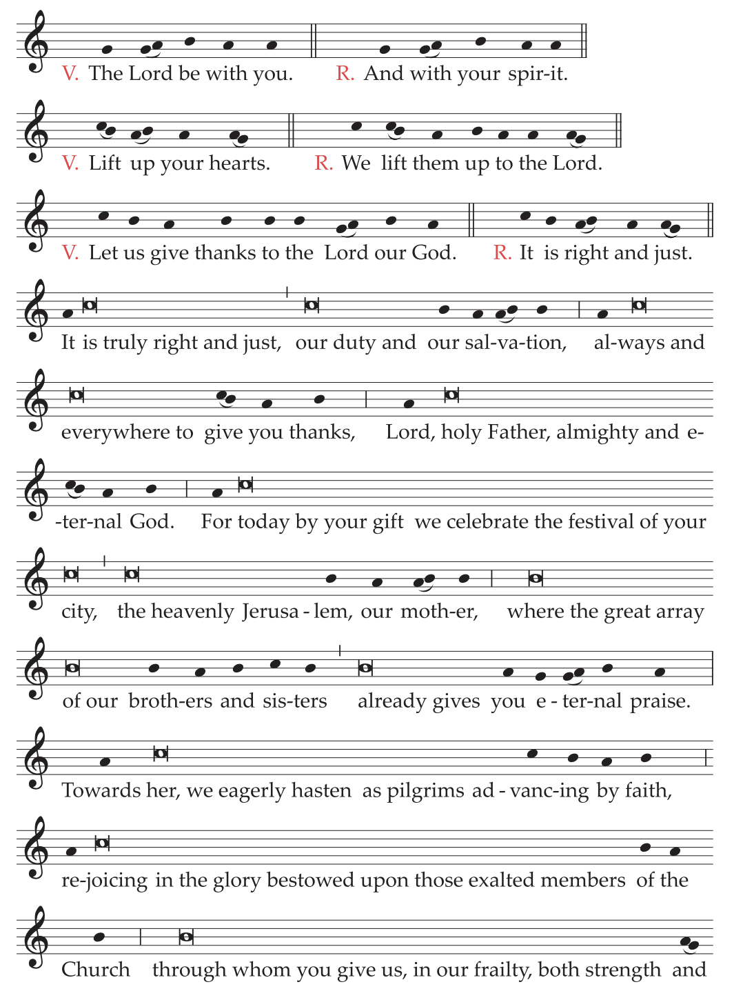
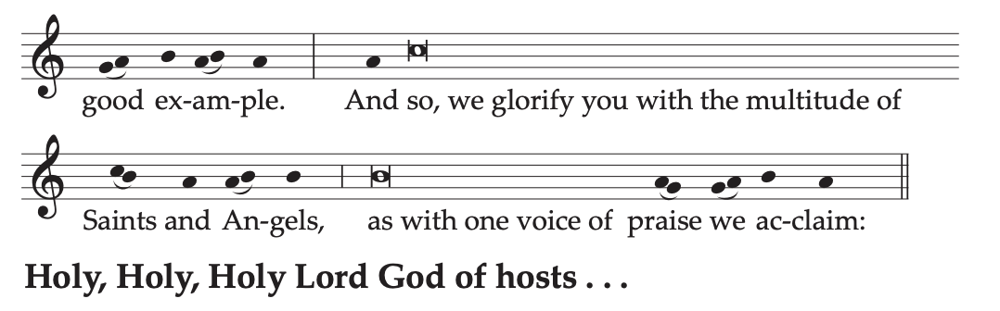
Text without music:
V. The Lord be with you. R. And with your spirit.
V. Lift up your hearts. R. We lift them up to the Lord.
V. Let us give thanks to the Lord our God. R. It is right and just.
It is truly right and just, our duty and our salvation,
always and everywhere to give you thanks,
Lord, holy Father, almighty and eternal God.
For today by your gift we celebrate the festival of your city,
the heavenly Jerusalem, our mother,
where the great array of our brothers and sisters
already gives you eternal praise.
Towards her, we eagerly hasten, as pilgrims advancing by faith,
rejoicing in the glory bestowed upon those exalted members of the Church
through whom you give us, in our frailty, both strength and good example.
And so, we glorify you with the multitude of Saints and Angels,
as with one voice of praise we acclaim:
Holy, Holy, Holy Lord God of hosts...
Communion AntiphonMt 5: 8-10
Blessed are the clean of heart, for they shall see God.
Blessed are the peacemakers,
for they shall be called children of God.
Blessed are they who are persecuted for the sake of righteousness,
for theirs is the Kingdom of Heaven.
Prayer after Communion
As we adore you, O God, who alone are holy
and wonderful in all your Saints,
we implore your grace,
so that, coming to perfect holiness in the fullness of your love,
we may pass from this pilgrim table
to the banquet of our heavenly homeland.
Through Christ our Lord.
November 2 THE COMMEMORATION OF ALL THE FAITHFUL DEPARTED (All Souls' Day)
The Masses that follow may be used at the discretion of the celebrant.*On this day, any Priest may celebrate three Masses, observing, nevertheless, what was established by Benedict XV in the Apostolic Constitution, Incruemtum altaris sacrificium, August 10, 1915: Acta Apostolicae Sedis 7 (1915) pp. 401-404.
Even when November 2 falls on a Sunday, the Mass celebrated is that of the Commemoration of All the Faithful Departed.
1
Entrance AntiphonCf. 1 Thes 4: 14; 1 Cor 15: 22
Just as Jesus died and has risen again,
so through Jesus God will bring with him
those who have fallen asleep;
and as in Adam all die,
so also in Christ will all be brought to life.
Collect
Listen kindly to our prayers, O Lord,
and, as our faith in your Son,
raised from the dead, is deepened,
so may our hope of resurrection for your departed servants
also find new strength.
Through our Lord Jesus Christ, your Son,
who lives and reigns with you in the unity of the Holy Spirit,
God, for ever and ever.
Prayer over the Offerings
Look favorably on our offerings, O Lord,
so that your departed servants
may be taken up into glory with your Son,
in whose great mystery of love we are all united.
Who lives and reigns for ever and ever.
I am the Resurrection and the Life, says the Lord.
Whoever believes in me, even though he dies, will live,
and everyone who lives and believes in me will not die for ever.
Prayer after Communion
Grant we pray, O Lord, that your departed servants,
for whom we have celebrated this paschal Sacrament,
may pass over to a dwelling place of light and peace.
Through Christ our Lord.
Eternal rest grant unto them, O Lord,
and let perpetual light shine upon them.
Collect
O God, glory of the faithful and life of the just,
by the Death and Resurrection of whose Son
we have been redeemed,
look mercifully on your departed servants,
that, just as they professed the mystery of our resurrection,
so they may merit to receive the joys of eternal happiness.
Through our Lord Jesus Christ, your Son,
who lives and reigns with you in the unity of the Holy Spirit,
God, for ever and ever.
Prayer over the Offerings
Almighty and merciful God,
by means of these sacrificial offerings
wash away, we pray, in the Blood of Christ,
the sins of your departed servants,
for you purify unceasingly by your merciful forgiveness
those you once cleansed in the waters of Baptism.
Through Christ our Lord.
Let perpetual light shine upon them, O Lord,
with your Saints for ever, for you are merciful.
Prayer after Communion
Having received the Sacrament of your Only Begotten Son,
who was sacrificed for us and rose in glory,
we humbly implore you, O Lord,
for your departed servants,
that, cleansed by the paschal mysteries,
they may glory in the gift of the resurrection to come.
Through Christ our Lord.
God, who raised Jesus from the dead,
will give life also to your mortal bodies, through his Spirit that dwells in you.
Collect
O God, who willed that your Only Begotten Son,
having conquered death,
should pass over into the realm of heaven,
grant, we pray, to your departed servants
that, with the mortality of this life overcome,
they may gaze eternally on you,
their Creator and Redeemer.
Through our Lord Jesus Christ, your Son,
who lives and reigns with you in the unity of the Holy Spirit,
God, for ever and ever.
Prayer over the Offerings
Receive, Lord, in your kindness,
the sacrificial offering we make
for all your servants who sleep in Christ,
that, set free from the bonds of death
by this singular sacrifice,
they may merit eternal life.
Through Christ our Lord.
We await a savior, the Lord Jesus Christ,
who will change our mortal bodies, to conform with his glorified body.
Prayer after Communion
Through these sacrificial gifts
which we have received, O Lord,
bestow on your departed servants your great mercy
and, to those you have endowed with the grace of Baptism,
grant also the fullness of eternal joy.
Through Christ our Lord.
O God, who led Saint Martin de Porres
by the path of humility to heavenly glory,
grant that we may so follow his radiant example in this life
as to merit to be exalted with him in heaven.
Through our Lord Jesus Christ, your Son,
who lives and reigns with you in the unity of the Holy Spirit,
God, for ever and ever.
November 4 Saint Charles Borromeo, Bishop Memorial
Preserve in the midst of your people,
we ask, O Lord, the spirit with which you filled
the Bishop Saint Charles Borromeo,
that your Church may be constantly renewed
and, by conforming herself to the likeness of Christ,
may show his face to the world.
Who lives and reigns with you in the unity of the Holy Spirit,
God, for ever and ever.
Prayer over the Offerings
Look, O Lord, upon the offering placed on your altar
in commemoration of Saint Charles,
and grant by the power of this sacrifice
that, as you made him an attentive pastor,
outstanding in the merit of his virtues,
so you may make us abound in good fruit by our works.
Through Christ our Lord.
Prayer after Communion
May the sacred mysteries of which we have partaken,
O Lord, we pray, give us that determination
which made Saint Charles faithful in ministry
and fervent in charity.
Through Christ our Lord.
November 9 THE DEDICATION OF THE LATERAN BASILICA Feast
I saw the holy city, a new Jerusalem,
coming down out of heaven from God,
prepared like a bride adorned for her husband.
Or:Cf. Rev 21: 3
Behold God’s dwelling with the human race.
He will dwell with them and they will be his people,
and God himself with them will be their God.
The Gloria in excelsis (Glory to God in the highest) is said.
Collect
O God, who from living and chosen stones
prepare an eternal dwelling for your majesty,
increase in your Church the spirit of grace you have bestowed,
so that by new growth your faithful people
may build up the heavenly Jerusalem.
Through our Lord Jesus Christ, your Son,
who lives and reigns with you in the unity of the Holy Spirit,
God, for ever and ever.
Or:
O God, who were pleased to call your Church the Bride,
grant that the people that serves your name
may revere you, love you and follow you,
and may be led by you
to attain your promises in heaven.
Through our Lord Jesus Christ, your Son,
who lives and reigns with you in the unity of the Holy Spirit,
God, for ever and ever.
When this Feast falls on a Sunday, the Creed is said.
Prayer over the Offerings
Accept, we pray, O Lord, the offering made here
and grant that by it those who seek your favor
may receive in this place
the power of the Sacraments
and the answer to their prayers.
Through Christ our Lord.
Preface: The mystery of the Church, the Bride of Christ and the Temple of the Spirit.
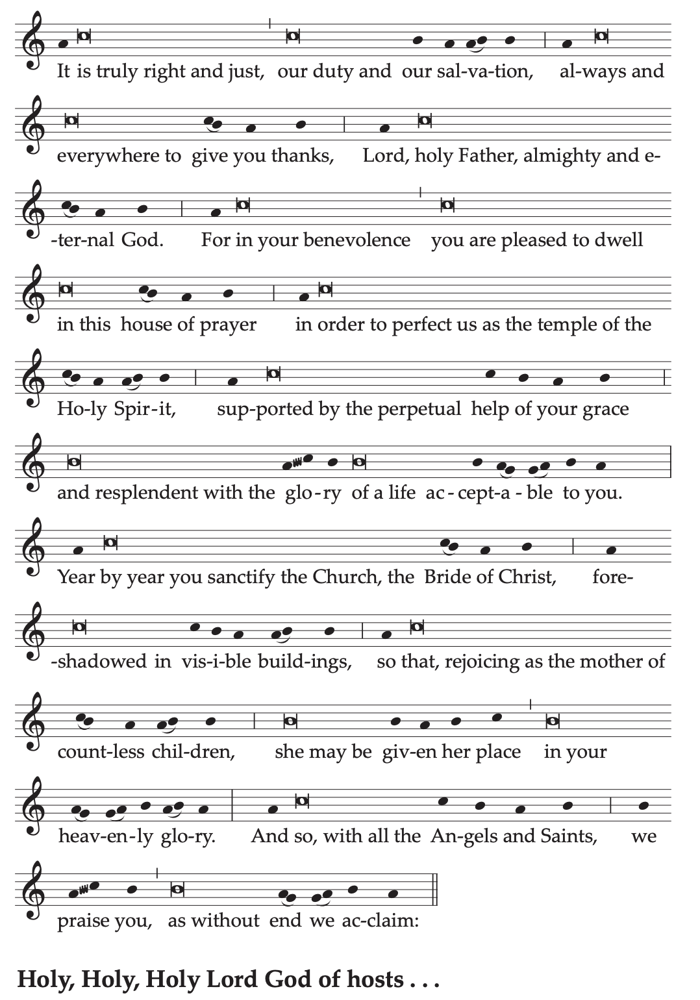
Text without music:
V. The Lord be with you. R. And with your spirit.
V. Lift up your hearts. R. We lift them up to the Lord.
V. Let us give thanks to the Lord our God. R. It is right and just.
It is truly right and just, our duty and our salvation,
always and everywhere to give you thanks,
Lord, holy Father, almighty and eternal God.
For in your benevolence you are pleased
to dwell in this house of prayer
in order to perfect us as the temple of the Holy Spirit,
supported by the perpetual help of your grace
and resplendent with the glory of a life acceptable to you.
Year by year you sanctify the Church, the Bride of Christ,
foreshadowed in visible buildings,
so that, rejoicing as the mother of countless children,
she may be given her place in your heavenly glory.
And so, with all the Angels and Saints,
we praise you, as without end we acclaim:
Holy, Holy, Holy Lord God of hosts...
Communion AntiphonCf. 1 Pt 2: 5
Be built up like living stones,
into a spiritual house, a holy priesthood.
Prayer after Communion
O God, who chose to foreshadow for us
the heavenly Jerusalem
through the sign of your Church on earth,
grant, we pray,
that, by our partaking of this Sacrament,
we may be made the temple of your grace
and may enter the dwelling place of your glory.
Through Christ our Lord.
November 10 Saint Leo the Great, Pope and Doctor of the Church Memorial
Entrance AntiphonCf. Sir 45: 30
The Lord established for him a covenant of peace,
and made him the prince,
that he might have the dignity of the priesthood for ever.
Collect
O God, who never allow the gates of hell
to prevail against your Church,
firmly founded on the apostolic rock,
grant her, we pray,
that through the intercession of Pope Saint Leo,
she may stand firm in your truth
and know the protection of lasting peace.
Through our Lord Jesus Christ, your Son,
who lives and reigns with you in the unity of the Holy Spirit,
God, for ever and ever.
Prayer over the Offerings
Through the offerings made here, we pray, O Lord,
graciously shed light on your Church,
so that your flock may everywhere prosper
and that under your governance
the shepherds may become pleasing to your name.
Through Christ our Lord.
Communion AntiphonMt 16: 16, 18
Peter said to Jesus:
You are the Christ, the Son of the living God.
And Jesus replied: You are Peter,
and upon this rock I will build my Church.
Prayer after Communion
Be pleased, O Lord, we pray,
to govern the Church you have nourished by this holy meal,
so that, firmly directed,
she may enjoy ever greater freedom
and persevere in integrity of religion.
Through Christ our Lord.
November 11 Saint Martin of Tours, Bishop Memorial
Entrance AntiphonCf. 1 Sm 2: 35
I shall raise up for myself a faithful priest
who will act in accord with my heart and my mind, says the Lord.
Collect
O God, who are glorified in the Bishop Saint Martin
both by his life and death,
make new, we pray,
the wonders of your grace in our hearts,
that neither death nor life
may separate us from your love.
Through our Lord Jesus Christ, your Son,
who lives and reigns with you in the unity of the Holy Spirit,
God, for ever and ever.
Prayer over the Offerings
Sanctify these offerings, we pray, Lord God,
which we joyfully present in honor of Saint Martin,
so that through them our life may always be directed
whether in tribulation or in prosperity.
Through Christ our Lord.
Communion AntiphonCf. Mt 25: 40
Amen, I say to you:
Whatever you did for one of the least of my brethren,
you did it for me, says the Lord.
Prayer after Communion
Grant to us who have been restored
by this Sacrament of unity, O Lord,
perfect harmony with your will in all things,
that, just as Saint Martin submitted himself entirely to you,
so we, too, may glory in being truly yours.
Through Christ our Lord.
November 12 Saint Josaphat, Bishop Memorial
Entrance Antiphon
Because of the Lord’s covenant and the ancestral laws,
the Saints of God persevered in loving brotherhood,
for there was always one spirit in them, and one faith.
Collect
Stir up in your Church, we pray, O Lord,
the Spirit that filled Saint Josaphat
as he laid down his life for the sheep,
so that through his intercession
we, too, may be strengthened by the same Spirit
and not be afraid to lay down our life for others.
Through our Lord Jesus Christ, your Son,
who lives and reigns with you in the unity of the Holy Spirit,
God, for ever and ever.
Prayer over the Offerings
Most merciful God,
pour out your blessing upon these offerings
and confirm us in the faith
that Saint Josaphat professed by the shedding of his blood.
Through Christ our Lord.
Communion AntiphonMt. 10: 39
Whoever loses his life for my sake,
will find it in eternity, says the Lord.
Prayer after Communion
May this heavenly table, O Lord,
bestow on us a spirit of fortitude and peace,
so that, following Saint Josaphat’s example,
we may willingly spend our lives
working for the honor and unity of the Church.
Through Christ our Lord.
[In the Dioceses of the United States]
November 13 Saint Frances Xavier Cabrini, Virgin Memorial
God our Father,
who called Saint Frances Xavier Cabrini from Italy
to serve the immigrants of America,
by her example,
teach us to have concern for the stranger,
the sick, and all those in need,
and by her prayers help us to see Christ
in all the men and women we meet.
Through our Lord Jesus Christ, your Son,
who lives and reigns with you in the unity of the Holy Spirit,
God, for ever and ever.
November 15 Saint Albert the Great, Bishop and Doctor of the Church
O God, who made the Bishop Saint Albert great
by his joining of human wisdom to divine faith,
grant, we pray, that we may so adhere to the truths he taught,
that through progress in learning
we may come to a deeper knowledge and love of you.
Through our Lord Jesus Christ, your Son,
who lives and reigns with you in the unity of the Holy Spirit,
God, for ever and ever.
O God, who made Saint Margaret of Scotland wonderful
in her outstanding charity towards the poor,
grant that through her intercession and example
we may reflect among all humanity
the image of your divine goodness.
Through our Lord Jesus Christ, your Son,
who lives and reigns with you in the unity of the Holy Spirit,
God, for ever and ever.
O God, who prepared a delightful dwelling for yourself
in the heart of the Virgin Saint Gertrude,
graciously bring light, through her intercession,
to the darkness of our hearts,
that we may joyfully experience you present and at work within us.
Through our Lord Jesus Christ, your Son,
who lives and reigns with you in the unity of the Holy Spirit,
God, for ever and ever.
November 17 Saint Elizabeth of Hungary, Religious Memorial
O God, by whose gift Saint Elizabeth of Hungary
recognized and revered Christ in the poor,
grant, through her intercession,
that we may serve with unfailing charity
the needy and those afflicted.
Through our Lord Jesus Christ, your Son,
who lives and reigns with you in the unity of the Holy Spirit,
God, for ever and ever.
November 18 The Dedication of the Basilicas of Saints Peter and Paul, Apostles
Entrance AntiphonCf. Ps 45 (44): 17-18
You will make them princes over all the earth;
they will remember your name through all generations.
Thus the peoples will praise you for ever, from age to age.
Collect
Defend your Church, O Lord,
by the protection of the holy Apostles,
that, as she received from them
the beginnings of her knowledge of things divine,
so through them she may receive,
even to the end of the world,
an increase in heavenly grace.
Through our Lord Jesus Christ, your Son,
who lives and reigns with you in the unity of the Holy Spirit,
God, for ever and ever.
Prayer over the Offerings
As we bring you this offering of our service,
we beseech your mercy, Lord,
that the truth handed down to us
by the ministry of the Apostles Peter and Paul
may endure undefiled in our hearts.
Through Christ our Lord.
O Lord, you have the words of eternal life,
and we have come to believe
that you are the Christ, the Son of God.
Prayer after Communion
May your people, we pray, O Lord,
nourished by the Bread of heaven,
rejoice in commemorating the Apostles Peter and Paul,
for it is through your gift
that we are governed under their patronage.
Through Christ our Lord.
Almighty God, who filled the heart of Saint Rose Philippine Duchesne
with charity and missionary zeal,
and gave her the desire
to make you known among all peoples,
grant us to follow her way
and fill us with that same love and zeal
to extend your Kingdom to the ends of the earth.
Through our Lord Jesus Christ, your Son,
who lives and reigns with you in the unity of the Holy Spirit,
God, for ever and ever.
November 21 The Presentation of the Blessed Virgin Mary Memorial
As we venerate the glorious memory
of the most holy Virgin Mary,
grant, we pray, O Lord, through her intercession,
that we, too, may merit to receive
from the fullness of your grace.
Through our Lord Jesus Christ, your Son,
who lives and reigns with you in the unity of the Holy Spirit,
God, for ever and ever.
November 22 Saint Cecilia, Virgin and Martyr Memorial
O God, who gladden us each year
with the feast day of your handmaid Saint Cecilia,
grant, we pray,
that what has been devoutly handed down concerning her
may offer us examples to imitate
and proclaim the wonders worked in his servants
by Christ your Son.
Who lives and reigns with you in the unity of the Holy Spirit,
God, for ever and ever.
Almighty ever-living God,
who are wonderful in the virtue of all your Saints,
grant us joy in the yearly commemoration of Saint Clement,
who, as a Martyr and High Priest of your Son,
bore out by his witness what he celebrated in mystery
and confirmed by example what he preached with his lips.
Through our Lord Jesus Christ, your Son,
who lives and reigns with you in the unity of the Holy Spirit,
God, for ever and ever.
O God, who in Saint Columban
wonderfully joined the work of evangelization
to zeal for the monastic life,
grant, we pray,
that through his intercession and example
we may strive to seek you above all things
and to bring increase to your faithful people.
Through our Lord Jesus Christ, your Son,
who lives and reigns with you in the unity of the Holy Spirit,
God, for ever and ever.
Our God and Father,
who conferred upon your servant Blessed Miguel Agustín Pro
the grace of ardently seeking your greater glory and the salvation of others,
grant, through his intercession and example,
that by faithfully and joyfully performing our daily duties
and effectively assisting those around us,
we may serve you with zeal
and ever seek your glory.
Through our Lord Jesus Christ, your Son,
who lives and reigns with you in the unity of the Holy Spirit,
God, for ever and ever.
November 24 Saint Andrew Dũng-Lac, Priest, and Companions, Martyrs Memorial
Entrance AntiphonCf. Gal 6: 14; cf. 1 Cor 1: 18
May we never boast, except in the Cross of our Lord Jesus Christ.
For the word of the Cross is the power of God
to us who have been saved.
Collect
O God, source and origin of all fatherhood,
who kept the Martyrs Saint Andrew Dung-Lac and his companions
faithful to the Cross of your Son,
even to the shedding of their blood,
grant, through their intercession,
that, spreading your love among our brothers and sisters,
we may be your children both in name and in truth.
Through our Lord Jesus Christ, your Son,
who lives and reigns with you in the unity of the Holy Spirit,
God, for ever and ever.
Prayer over the Offerings
Receive, O holy Father, the offerings we bring
as we venerate the passion of the holy Martyrs,
so that amid the trials of this life
we may always be found faithful
and may offer ourselves to you
as an acceptable sacrifice.
Through Christ our Lord.
Communion AntiphonMt 5: 10
Blessed are they who are persecuted for the sake of righteousness,
for theirs is the Kingdom of Heaven.
Prayer after Communion
Renewed by the one Bread
as we commemorate the holy Martyrs,
we humbly beseech you, O Lord,
that, abiding as one in your love,
we may merit by endurance an eternal prize.
Through Christ our Lord.
November 25 Saint Catherine of Alexandria, Virgin and Martyr
Almighty ever-living God,
who gave Saint Catherine of Alexandria to your people
as a Virgin and an invincible Martyr,
grant that through her intercession
we may be strengthened in faith and constancy
and spend ourselves without reserve
for the unity of the Church.
Through our Lord Jesus Christ, your Son,
who lives and reigns with you in the unity of the Holy Spirit,
God, for ever and ever.
November 30 SAINT ANDREW, APOSTLE Feast
Entrance AntiphonCf. Mt 4: 18-19
Beside the Sea of Galilee,
the Lord saw two brothers, Peter and Andrew,
and he said to them:
Come after me and I will make you fishers of men.
The Gloria in excelsis (Glory to God in the highest) is said.
Collect
We humbly implore your majesty, O Lord,
that, just as the blessed Apostle Andrew
was for your Church a preacher and pastor,
so he may be for us a constant intercessor before you.
Through our Lord Jesus Christ, your Son,
who lives and reigns with you in the unity of the Holy Spirit,
God, for ever and ever.
Prayer over the Offerings
Grant us, almighty God, that through these offerings,
which we bring on the feast day of Saint Andrew,
we may please you by what we have brought
and be given life by what you have accepted.
Through Christ our Lord.
Andrew told his brother Simon:
We have found the Messiah, the Christ,
and he brought him to Jesus.
Prayer after Communion
May communion in your Sacrament strengthen us, O Lord,
so that by the example of the blessed Apostle Andrew
we, who carry in our body the Death of Christ,
may merit to live with him in glory.
Who lives and reigns for ever and ever.
Sing and make music to the Lord in your hearts,
always thanking God the Father for all things
in the name of our Lord Jesus Christ.
Collect
Father all-powerful,
your gifts of love are countless
and your goodness infinite;
as we come before you on Thanksgiving Day
with gratitude for your kindness,
open our hearts to have concern
for every man, woman, and child,
so that we may share your gifts in loving service.
Through our Lord Jesus Christ, your Son,
who lives and reigns with you in the unity of the Holy Spirit,
God, for ever and ever.
Prayer over the Offerings
God our Father,
from whose hand we have received generous gifts
so that we might learn to share your blessings in gratitude,
accept these gifts of bread and wine,
and let the perfect sacrifice of Jesus
draw us closer to all our brothers and sisters in the human family.
Through Christ our Lord.
Preface: WHICH.
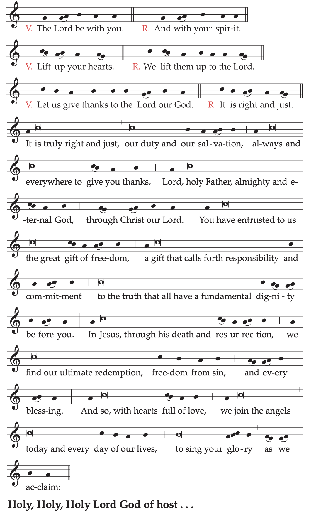
Text without music:
V. The Lord be with you. R. And with your spirit.
V. Lift up your hearts. R. We lift them up to the Lord.
V. Let us give thanks to the Lord our God. R. It is right and just.
It is truly right and just, our duty and our salvation,
always and everywhere to give you thanks,
Lord, holy Father, almighty and eternal God,
through Christ our Lord.
You have entrusted to us
the great gift of freedom,
a gift that calls forth
responsibility and commitment
to the truth that all have a fundamental dignity before you.
In Jesus, through his Death and Resurrection,
we find our ultimate redemption,
freedom from sin,
and every blessing.
As so, with hearts full of love,
we join the angels, today and every day of our lives,
to sing your glory as we acclaim:
Holy, Holy, Holy Lord God of hosts...
Communion AntiphonPs 138 (137): 1
I will thank you, Lord, with all my heart,
for you have heard the words of my mouth.
Or:Ps 116 (115): 12-13 How can I repay the Lord for all his goodness to me?
The chalice of salvation I will raise, and I will call on the name of the Lord.
Prayer after Communion
In this celebration, O Lord our God,
you have shown us the depths of your love for all your children;
help us, we pray, to reach out in love to all your people,
so that we may share with them
the good things of time and eternity.
Through Christ our Lord.
I will praise you, Lord, among the nations;
I will tell of your name to my kin.
Collect
O God, who through the preaching of Saint Francis Xavier
won many peoples to yourself,
grant that the hearts of the faithful
may burn with the same zeal for the faith
and that Holy Church may everywhere rejoice
in an abundance of offspring.
Through our Lord Jesus Christ, your Son,
who lives and reigns with you in the unity of the Holy Spirit,
God, for ever and ever.
Prayer over the Offerings
Receive, O Lord, these offerings we bring you
in commemoration of Saint Francis Xavier,
and grant that, as he journeyed to distant lands
out of longing for the salvation of souls,
so we, too, bearing effective witness to the Gospel,
may, with our brothers and sisters,
eagerly hasten towards you.
Through Christ our Lord.
Communion AntiphonMt 10: 27
What I say to you in the darkness
speak in the light, says the Lord,
what you hear whispered,
proclaim on the housetops.
Prayer after Communion
May your mysteries, O God,
kindle in us that fire of charity
with which Saint Francis Xavier burned for the salvation of souls,
so that, walking ever more worthily in our vocation,
we may obtain with him the reward you promise
to those who labor well in your harvest.
Through Christ our Lord.
December 4 Saint John Damascene, Priest and Doctor of the Church
Grant, we pray, O Lord,
that we may be helped by the prayers
of the Priest Saint John Damascene,
so that the true faith,
which he excelled in teaching,
may always be our light and our strength.
Through our Lord Jesus Christ, your Son,
who lives and reigns with you in the unity of the Holy Spirit,
God, for ever and ever.
We humbly implore your mercy, Lord:
protect us in all dangers
through the prayers of the Bishop Saint Nicholas,
that the way of salvation may lie open before us.
Through our Lord Jesus Christ, your Son,
who lives and reigns with you in the unity of the Holy Spirit,
God, for ever and ever.
December 7 Saint Ambrose, Bishop and Doctor of the Church Memorial
Entrance AntiphonCf. Sir 15: 5
In the midst of the Church he opened his mouth,
and the Lord filled him with the spirit of wisdom and understanding
and clothed him in a robe of glory.
Collect
O God, who made the Bishop Saint Ambrose
a teacher of the Catholic faith
and a model of apostolic courage,
raise up in your Church men after your own heart
to govern her with courage and wisdom.
Through our Lord Jesus Christ, your Son,
who lives and reigns with you in the unity of the Holy Spirit,
God, for ever and ever.
Prayer over the Offerings
As we celebrate the divine mysteries, O Lord, we pray,
may the Holy Spirit fill us with that light of faith
by which he constantly enlightened Saint Ambrose
for the spreading of your glory.
Through Christ our Lord.
Communion AntiphonCf. Ps 1: 2, 3
He who ponders the law of the Lord day and night
will yield fruit in due season.
Prayer after Communion
Lead us, who have been strengthened
by the power of this Sacrament, O Lord,
so to profit from the teaching of Saint Ambrose
that, hastening fearlessly along your paths,
we may be prepared for the delights of the eternal banquet.
Through Christ our Lord.
December 8 THE IMMACULATE CONCEPTION OF THE BLESSED VIRGIN MARY
PATRONAL FEASTDAY OF THE UNITED STATES OF AMERICA Solemnity
Entrance AntiphonIs 61: 10
I rejoice heartily in the Lord,
in my God is the joy of my soul;
for he has clothed me with a robe of salvation,
and wrapped me in a mantle of justice,
like a bride adorned with her jewels.
The Gloria in excelsis (Glory to God in the highest) is said.
Collect
O God, who by the Immaculate Conception of the Blessed Virgin
prepared a worthy dwelling for your Son,
grant, we pray,
that, as you preserved her from every stain
by virtue of the Death of your Son, which you foresaw,
so, through her intercession,
we, too, may be cleansed and admitted to your presence.
Through our Lord Jesus Christ, your Son,
who lives and reigns with you in the unity of the Holy Spirit,
God, for ever and ever.
The Creed is said.
Prayer over the Offerings
Graciously accept the saving sacrifice
which we offer you, O Lord,
on the Solemnity of the Immaculate Conception
of the Blessed Virgin Mary,
and grant that, as we profess her,
on account of your prevenient grace,
to be untouched by any stain of sin,
so, through her intercession,
we may be delivered from all our faults.
Through Christ our Lord.
Preface: The mystery of Mary and the Church.
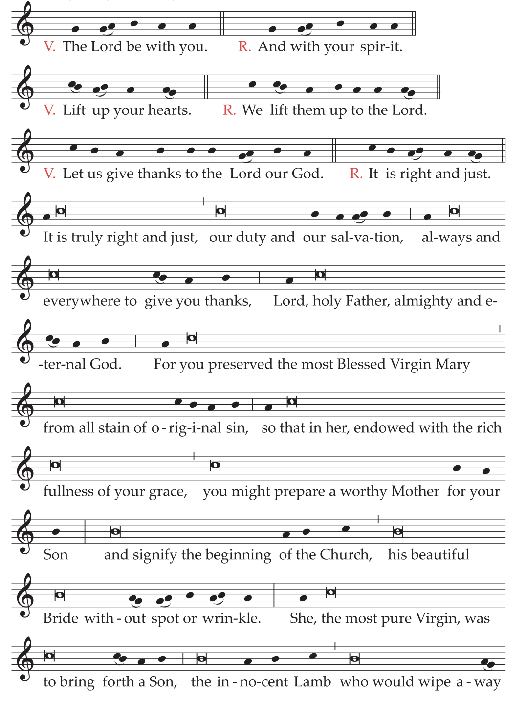
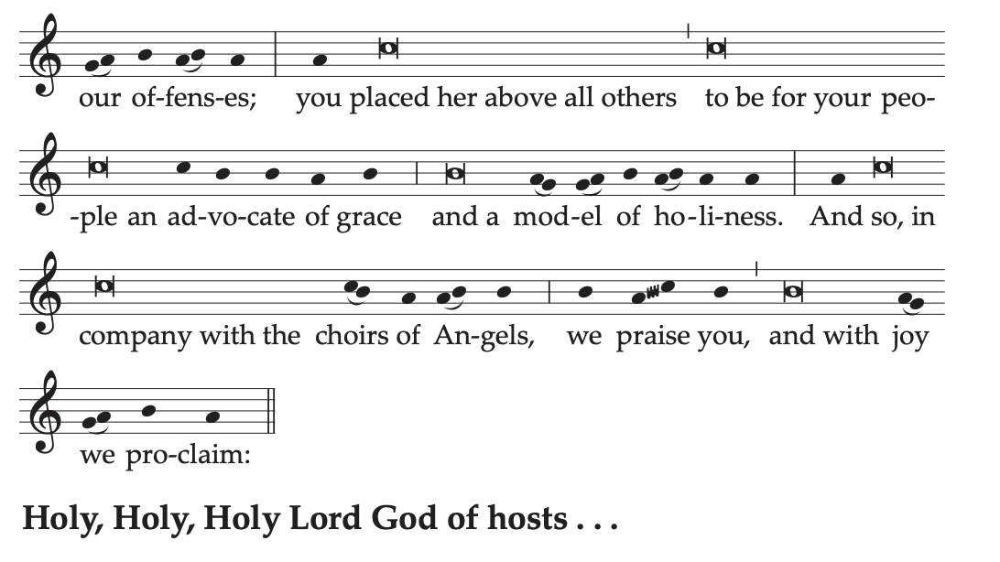
Text without music:
V. The Lord be with you. R. And with your spirit.
V. Lift up your hearts. R. We lift them up to the Lord.
V. Let us give thanks to the Lord our God. R. It is right and just.
It is truly right and just, our duty and our salvation,
always and everywhere to give you thanks,
Lord, holy Father, almighty and eternal God.
For you preserved the most Blessed Virgin Mary
from all stain of original sin,
so that in her, endowed with the rich fullness of your grace,
you might prepare a worthy Mother for your Son
and signify the beginning of the Church,
his beautiful Bride without spot or wrinkle.
She, the most pure Virgin, was to bring forth a Son,
the innocent Lamb who would wipe away our offenses;
you placed her above all others
to be for your people an advocate of grace
and a model of holiness.
And so, in company with the choirs of Angels,
we praise you, and with joy we proclaim:
Holy, Holy, Holy Lord God of hosts...
Communion Antiphon
Glorious things are spoken of you, O Mary,
for from you arose the sun of justice,
Christ our God.
Prayer after Communion
May the Sacrament we have received,
O Lord our God,
heal in us the wounds of that fault
from which in a singular way
you preserved Blessed Mary in her Immaculate Conception.
Through Christ our Lord.
O God, who by means of Saint Juan Diego showed
the love of the most holy Virgin Mary for your people,
grant, through his intercession,
that, by following the counsels our Mother gave at Guadalupe,
we may be ever constant in fulfilling your will.
Through our Lord Jesus Christ, your Son,
who lives and reigns with you in the unity of the Holy Spirit,
God, for ever and ever.
Added to General Roman Calendar on October 7, 2019 (source link)
O God, who, fulfilling the promise made to our Fathers,
chose the Blessed Virgin Mary
to become the Mother of the Savior,
grant that we may follow her example,
for her humility was pleasing to you
and her obedience profitable to us.
Through our Lord Jesus Christ, your Son,
who lives and reigns with you in the unity of the Holy Spirit,
God, for ever and ever.
Grant, we pray, O Lord,
that we may constantly exalt the merits of your Martyrs,
whom Pope Saint Damasus so venerated and loved.
Through our Lord Jesus Christ, your Son,
who lives and reigns with you in the unity of the Holy Spirit,
God, for ever and ever.
[In the Dioceses of the United States]
December 12 OUR LADY OF GUADALUPE Feast
Entrance AntiphonRev 12: 1
A great sign appeared in the sky, a woman clothed with the sun,
with the moon under her feet, and on her head a crown of twelve stars.
The Gloria in excelsis (Glory to God in the highest) is said.
Collect
O God, Father of mercies,
who placed your people under the singular protection
of your Son’s most holy Mother,
grant that all who invoke the Blessed Virgin of Guadalupe,
may seek with ever more lively faith
the progress of peoples in the ways of justice and of peace.
Through our Lord Jesus Christ, your Son,
who lives and reigns with you in the unity of the Holy Spirit,
God, for ever and ever.
Prayer over the Offerings
Accept, O Lord, the gifts we present to you
on this feast of Our Lady of Guadalupe,
and grant that this sacrifice
may strengthen us to fulfill your commandments
as true children of the Virgin Mary.
Through Christ our Lord.
The Lord has cast down the mighty from their thrones,
and has lifted up the lowly.
Or:Cf. Ps 147 (146): 20
God has not acted thus for any other nation;
to no other people had he shown his love so clearly.
Prayer after Communion
Lord God, may the Body and Blood of your Son,
which we receive in this sacrament,
reconcile us always in your love;
and may we who rejoice in Our Lady of Guadalupe
live united and at peace in this world
until the day of the Lord dawns in glory.
Through Christ our Lord.
May the glorious intercession
of the Virgin and Martyr Saint Lucy
give us new heart, we pray, O Lord,
so that we may celebrate her heavenly birthday
in this present age
and so behold things eternal.
Through our Lord Jesus Christ, your Son,
who lives and reigns with you in the unity of the Holy Spirit,
God, for ever and ever.
December 14 Saint John of the Cross, Priest and Doctor of the Church Memorial
Entrance AntiphonGal 6: 14
May I never boast,
except in the Cross of our Lord Jesus Christ,
through which the world has been crucified to me,
and I to the world.
Collect
O God, who gave the Priest Saint John
an outstanding dedication to perfect self-denial
and love of the Cross,
grant that, by imitating him closely at all times,
we may come to contemplate eternally your glory.
Through our Lord Jesus Christ, your Son,
who lives and reigns with you in the unity of the Holy Spirit,
God, for ever and ever.
Prayer over the Offerings
Look upon the sacrificial gifts we offer, almighty God,
in commemoration of Saint John of the Cross
and grant that we, who celebrate
the mysteries of the Lord’s Passion,
may imitate what we now enact.
Through Christ our Lord.
Communion AntiphonCf. Mt 16: 24
Whoever wishes to come after me must deny himself,
take up his cross, and follow me, says the Lord.
Prayer after Communion
O God, who in Saint John
have wonderfully made known the mystery of the Cross,
graciously grant
that, drawing strength from this sacrifice,
we may cling faithfully to Christ
and labor in the Church for the salvation of all.
Through Christ our Lord.
December 21 Saint Peter Canisius, Priest and Doctor of the Church
O God, who for the defense of the Catholic faith
made the Priest Saint Peter Canisius
strong in virtue and in learning,
grant, through his intercession,
that those who seek the truth
may joyfully find you, their God,
and that your faithful people
may persevere in confessing you.
Through our Lord Jesus Christ, your Son,
who lives and reigns with you in the unity of the Holy Spirit,
God, for ever and ever.
Grant, we pray, almighty God,
that by the example of the Priest Saint John of Kanty
we may advance in the knowledge of holy things
and, by showing compassion to all,
may gain forgiveness in your sight.
Through our Lord Jesus Christ, your Son,
who lives and reigns with you in the unity of the Holy Spirit,
God, for ever and ever.
December 26 SAINT STEPHEN, THE FIRST MARTYR Feast
Entrance Antiphon
The gates of heaven were opened for blessed Stephen,
who was found to be first among the number of the Martyrs
and therefore is crowned triumphant in heaven.
The Gloria in excelsis (Glory to God in the highest) is said.
Collect
Grant, Lord, we pray,
that we may imitate what we worship,
and so learn to love even our enemies,
for we celebrate the heavenly birthday
of a man who knew how to pray even for his persecutors.
Through our Lord Jesus Christ, your Son,
who lives and reigns with you in the unity of the Holy Spirit,
God, for ever and ever.
Prayer over the Offerings
May these offerings of our devotion today,
be acceptable to you, we pray, O Lord,
for they are prompted
by the glorious commemoration of Saint Stephen the Martyr.
Through Christ our Lord.
As they were stoning Stephen, he called out:
Lord Jesus, receive my spirit.
Prayer after Communion
For the many mercies which surround us
we give thanks to you, O Lord,
who save us through the Nativity of your Son
and gladden us with the celebration of the blessed Martyr Stephen.
Through Christ our Lord.
December 27 SAINT JOHN, APOSTLE AND EVANGELIST Feast
Entrance Antiphon
This is John, who reclined on the Lord’s breast at supper,
the blessed Apostle, to whom celestial secrets were revealed
and who spread the words of life through all the world.
Or:FROM
In the midst of the Church he opened his mouth,
and the Lord filled him
with the spirit of wisdom and understanding
and clothed him in a robe of glory.
The Gloria in excelsis (Glory to God in the highest) is said.
Collect
O God, who through the blessed Apostle John
have unlocked for us the secrets of your Word,
grant, we pray,
that we may grasp with proper understanding
what he has so marvelously brought to our ears.
Through our Lord Jesus Christ, your Son,
who lives and reigns with you in the unity of the Holy Spirit,
God, for ever and ever.
Prayer over the Offerings
Sanctify the offerings we have made, O Lord, we pray,
and grant that from the banquet of this supper
we may draw the hidden wisdom of the eternal Word,
just as, from this same source,
you revealed it to your Apostle John.
Through Christ our Lord.
The Word became flesh and made his dwelling among us,
and from his fullness we have all received.
Prayer after Communion
Grant, we pray, almighty God,
that the Word made flesh,
proclaimed by the blessed Apostle John,
may, through this mystery which we have celebrated,
ever dwell among us.
Through Christ our Lord.
December 28 THE HOLY INNOCENTS, MARTYRS Feast
Entrance Antiphon
The innocents were slaughtered as infants for Christ;
spotless, they follow the Lamb
and sing for ever: Glory to you, O Lord.
The Gloria in excelsis (Glory to God in the highest) is said.
Collect
O God, whom the Holy Innocents confessed
and proclaimed on this day,
not by speaking but by dying,
grant, we pray,
that the faith in you which we confess with our lips
may also speak through our manner of life.
Through our Lord Jesus Christ, your Son,
who lives and reigns with you in the unity of the Holy Spirit,
God, for ever and ever.
Prayer over the Offerings
Receive, O Lord, we pray,
the offerings of your devoted servants
and purify us as we faithfully serve these, your mysteries,
by which you grant justification
even to those who lack understanding.
Through Christ our Lord.
Behold those redeemed as the first fruits
of the human race for God and the Lamb,
and who follow the Lamb wherever he goes.
Prayer after Communion
Grant, O Lord, abundant salvation to your faithful
as they receive your holy gifts
on the feast day of these, your Saints,
who, though still unable to profess your Son in speech,
were crowned with heavenly grace
on account of his birth.
Who lives and reigns for ever and ever.
December 29 Saint Thomas Becket, Bishop and Martyr
O God, who gave the Martyr Saint Thomas Becket
the courage to give up his life for the sake of justice,
grant, through his intercession,
that, renouncing our life
for the sake of Christ in this world,
we may find it in heaven.
Through our Lord Jesus Christ, your Son,
who lives and reigns with you in the unity of the Holy Spirit,
God, for ever and ever.
Come, O Lord, to the help of your people,
sustained by the intercession of Pope Saint Sylvester,
so that, running the course of this present life under your guidance,
we may happily attain life without end.
Through our Lord Jesus Christ, your Son,
who lives and reigns with you in the unity of the Holy Spirit,
God, for ever and ever.